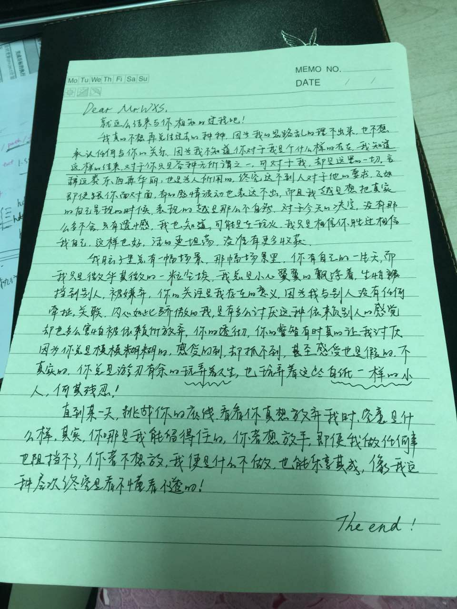
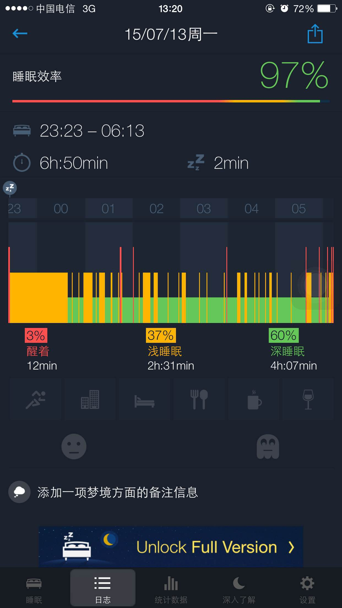
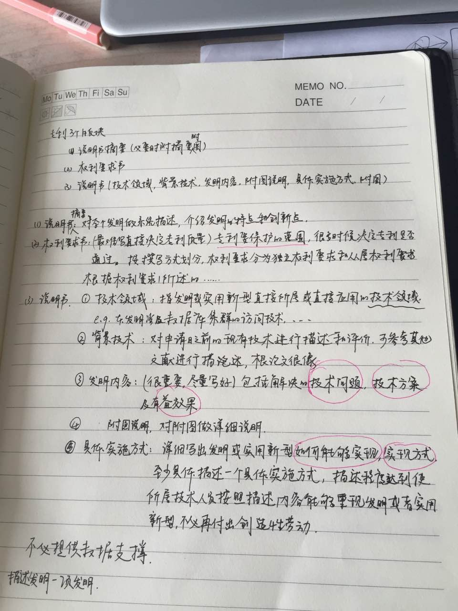
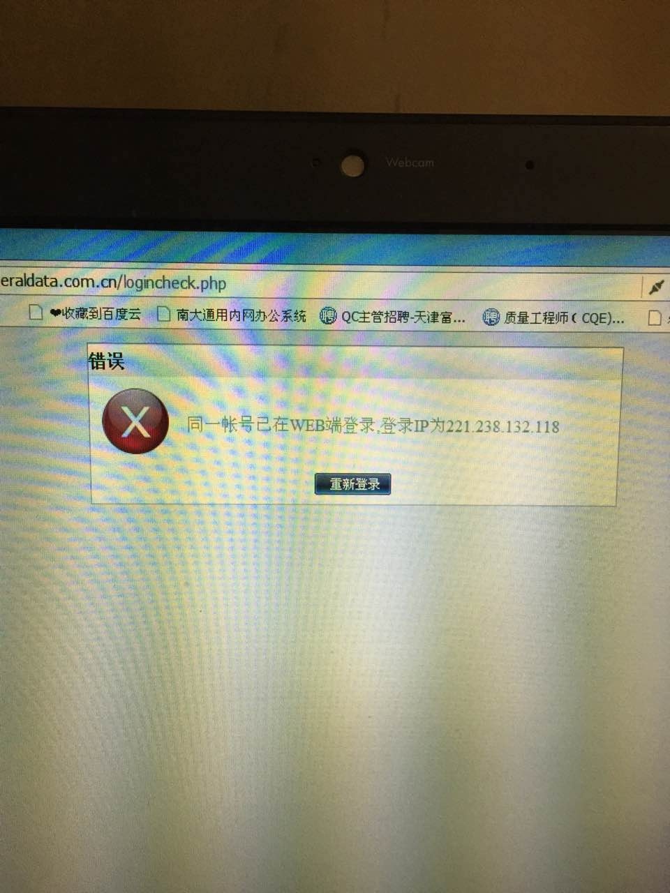
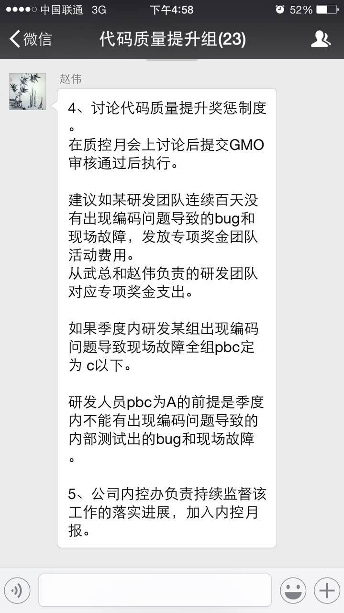
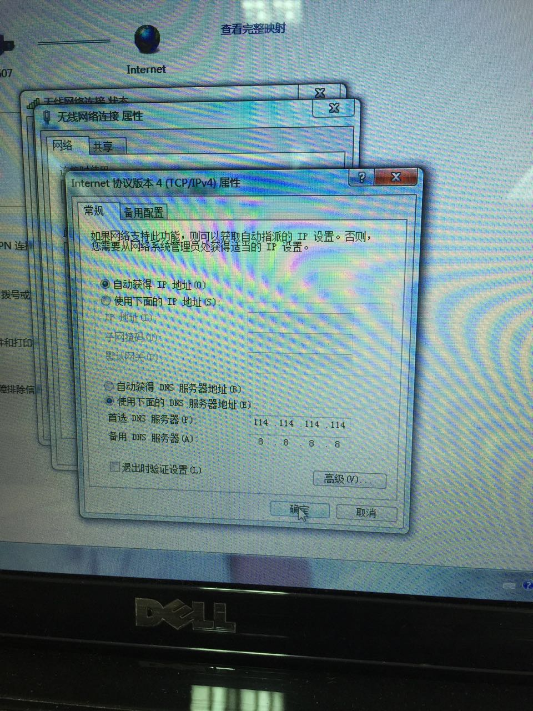

2015-07¶
2015-07-08¶
| 2015-07-08 09:26:26 | 你 | 调研25822需求，等待研发可行性评估，已完成加载支持直接读取hdfs软件说明书的初稿， |
| 2015-07-08 09:27:21 | 你 | 昨天没事干问洪越要点活，他让我看看专利，我打算今天资料，找找切入点 |
| 2015-07-08 09:27:31 | 我 | [微笑]你发给我也没有用，我也不开会 |
| 2015-07-08 09:28:38 | 我 | 你还是别写专利了，看看资料可以，等过几天就说能力不够 |
| 2015-07-08 09:29:17 | 我 | 专利问题上我们组和洪越是竞争关系 |
| 2015-07-08 09:29:18 | 你 | 我想让你知道我干啥呢 |
| 2015-07-08 09:29:27 | 你 | 哦，好吧 |
| 2015-07-08 09:29:35 | 我 | 我知道 |
| 2015-07-08 09:29:39 | 你 | 那我可以给研发写啊 |
| 2015-07-08 09:29:47 | 我 | 这样不好 |
| 2015-07-08 09:29:51 | 你 | 你怕我写不出来是吧 |
| 2015-07-08 09:30:07 | 我 | 是怕你写出来[呲牙] |
| 2015-07-08 09:30:33 | 你 | 好吧，那我看看，随便交个差，糊弄下 |
| 2015-07-08 09:30:55 | 你 | 现在大家都挺闲的感觉，研发那边比较忙 |
| 2015-07-08 09:31:39 | 我 | 你继续看需求的书吧，明天我上班会给你安排工作的 |
| 2015-07-08 09:32:20 | 我 | 我今天下午三点的火车回天津 |
| 2015-07-08 09:36:10 | 你 | 好 |
| 2015-07-08 09:36:28 | 你 | 行，我挺喜欢看需求的书的 |
| 2015-07-08 09:36:32 | 你 | 快点回来吧 |
| 2015-07-08 09:44:06 | 我 | 是，[微笑]着急了？ |
| 2015-07-08 09:44:27 | 你 | 以你为主 |
| 2015-07-08 09:52:32 | 我 | 告诉你一件事吧，我儿子这次没考好，没有被录取，受到打击挺大的 |
| 2015-07-08 09:52:51 | 我 | 你不要告诉别人 |
| 2015-07-08 09:52:57 | 你 | 嗯 |
| 2015-07-08 09:53:11 | 你 | 我觉得你回去就可能是这个事 |
| 2015-07-08 09:53:18 | 你 | 为什么没考好 |
| 2015-07-08 09:53:26 | 你 | 你分析了吗？ |
| 2015-07-08 09:53:33 | 我 | 原因很多 |
| 2015-07-08 09:53:36 | 你 | 你怎么看 |
| 2015-07-08 09:53:56 | 我 | 塞翁失马焉知非福 |
| 2015-07-08 09:54:10 | 你 | 他以后要经历的事情还很多， |
| 2015-07-08 09:54:21 | 我 | 是 |
| 2015-07-08 09:54:22 | 你 | 是，我始终相信这一点 |
| 2015-07-08 09:54:34 | 你 | 你应该更有体会才是 |
| 2015-07-08 09:55:10 | 你 | 你会不会看别人看得清楚，到他这就没有法力了？ |
| 2015-07-08 09:55:17 | 你 | 你没事吧？ |
| 2015-07-08 09:55:41 | 我 | 我没事，只是心情不太好 |
| 2015-07-08 09:56:19 | 你 | 嗯，没事的，别想太多了 |
| 2015-07-08 09:56:51 | 你 | 选择有很多种，你做了自己该做的，其他还的靠他自己 |
| 2015-07-08 09:57:01 | 我 | 是 |
| 2015-07-08 09:57:02 | 你 | 主要是你是不是做的够了 |
| 2015-07-08 09:57:12 | 你 | 都是命 |
| 2015-07-08 09:57:23 | 我 | 对自己的孩子，永远没有够 |
| 2015-07-08 09:57:31 | 你 | 我跟你说过我姐我俩中考的事 |
| 2015-07-08 09:58:01 | 你 | 我姐平时学习特别好，中考竟然没有我多，她当时也挺痛苦的， |
| 2015-07-08 09:58:55 | 你 | 后来跟我一个学校，高考的时候考的挺好的，中考比她考的好的，去了一中的好多高考没考上 |
| 2015-07-08 10:00:15 | 你 | 没考好肯定不如考好了完美，你们把他慢慢消化消化吧！以后的路还很长 |
| 2015-07-08 10:00:32 | 我 | 转了一圈，能说话的也就你一个了 |
| 2015-07-08 10:00:54 | 你 | 是吗？很荣幸啊 |
| 2015-07-08 10:00:59 | 你 | 别难过了 |
| 2015-07-08 10:01:44 | 我 | 我没事了，心情好多了，谢谢你[微笑] |
| 2015-07-08 10:02:09 | 你 | 我什么都没做，有什么好谢的， |
| 2015-07-08 10:02:23 | 你 | 你又让我想起我考试那会了 |
| 2015-07-08 10:02:38 | 你 | 你说这么多的坎，慢慢过吧 |
| 2015-07-08 10:03:07 | 我 | 我谢你和你谢我是一样的 |
| 2015-07-08 10:03:49 | 你 | 别给他太大压力，也别刻意的表现什么，是吧！不知道对不对 |
| 2015-07-08 10:03:57 | 我 | 是 |
| 2015-07-08 10:04:31 | 你 | 我就特别不理解家长那会比来比去的，现在也不理解，儿孙自有儿孙福 |
| 2015-07-08 10:04:58 | 你 | 省心的孩子什么时候都不会让你操心， |
| 2015-07-08 10:05:32 | 我 | 我儿子出来都不省心 |
| 2015-07-08 10:05:40 | 你 | 你回来也给他点空间，安慰好你媳妇 |
| 2015-07-08 10:05:45 | 你 | [动画表情] |
| 2015-07-08 10:06:00 | 你 | 那惨了，没头了 |
| 2015-07-08 10:06:13 | 我 | 是呗[流泪] |
| 2015-07-08 10:07:19 | 你 | [动画表情] |
| 2015-07-08 10:07:26 | 你 | 开心点吧！ |
| 2015-07-08 10:07:47 | 我 | 是，我已经好多了 |
| 2015-07-08 10:08:07 | 你 | [动画表情] |
| 2015-07-08 10:08:28 | 你 | 这个猫，软绵绵的 |
| 2015-07-08 10:08:35 | 你 | 是不是 |
| 2015-07-08 10:08:38 | 我 | 是 |
| 2015-07-08 10:08:44 | 我 | 好想抱抱 |
| 2015-07-08 10:09:10 | 你 | 嘿嘿，我不想，我想按住他 |
| 2015-07-08 10:09:56 | 我 | 猫是要哄着的 |
| 2015-07-08 10:10:04 | 我 | 和女人一样 |
| 2015-07-08 10:10:18 | 我 | 所以说女人是猫 |
| 2015-07-08 10:11:26 | 你 | 你得哄老婆，还得哄儿子，还得哄猫猫，累不累 |
| 2015-07-08 10:11:58 | 我 | 不累，男人的责任 |
| 2015-07-08 10:12:14 | 你 | 好吧 |
| 2015-07-08 10:14:21 | 我 | 我一直想要个女孩就是不想让他那么累 |
| 2015-07-08 10:14:53 | 你 | 你老婆吗？ |
| 2015-07-08 10:14:59 | 你 | 女孩有女孩的问题 |
| 2015-07-08 10:15:08 | 你 | 我觉得还是儿子省心 |
| 2015-07-08 10:15:16 | 你 | 你想回来吗？ |
| 2015-07-08 10:15:24 | 你 | 家里处理好了吗？ |
| 2015-07-08 10:15:35 | 我 | 你是说回公司吗 |
| 2015-07-08 10:15:55 | 你 | 你觉得哄女人是男人的责任，这个世界百分之99的男人不是这么想的 |
| 2015-07-08 10:16:00 | 你 | 是啊 |
| 2015-07-08 10:16:23 | 我 | 还是早点回去吧 |
| 2015-07-08 10:16:29 | 我 | 事情太多 |
| 2015-07-08 10:16:50 | 你 | 我想你闺女的老公落到99里的可能性还是很大的 |
| 2015-07-08 10:17:06 | 你 | 嗯，是挺多的 |
| 2015-07-08 10:17:14 | 我 | 你说的很对 |
| 2015-07-08 10:18:23 | 你 | 我就想要儿子 |
| 2015-07-08 10:18:32 | 你 | 省心，不听话就打 |
| 2015-07-08 10:18:54 | 我 | 哈哈，你儿子惨了 |
| 2015-07-08 10:19:21 | 你 | 我小时候爸爸也打我俩 |
| 2015-07-08 10:19:30 | 你 | 吓的小鸡似的 |
| 2015-07-08 10:19:52 | 我 | 听听都心疼 |
| 2015-07-08 10:20:07 | 你 | 所以我想将来一定一定不能成为我妈，可是后来我发现我成了我爸爸 |
| 2015-07-08 10:20:11 | 你 | 多悲哀 |
| 2015-07-08 10:20:30 | 你 | 不心疼，现在我也凶他，算是出气了 |
| 2015-07-08 10:22:51 | 你 | 好了，别想那些事了，好好亲亲你儿子，告诉他以后路还很长，他可是要顶天立地的，别唧唧歪歪像个女人 |
| 2015-07-08 10:23:27 | 你 | 你也赶紧回来，这还有一大帮人，一大堆事等你拿主意呢，还有个小姑娘等你安排工作呢，哈哈 |
| 2015-07-08 10:23:35 | 我 | 好的 |
| 2015-07-08 10:23:55 | 我 | 别着急，明天就到 |
| 2015-07-08 10:24:05 | 你 | 好 |
| 2015-07-08 15:39:07 | 我 | 下车了 |
| 2015-07-08 15:39:38 | 你 | 来单位吗？ |
| 2015-07-08 15:39:56 | 我 | 不去了，回家歇着 |
| 2015-07-08 15:40:03 | 你 | 嗯，快回去吧 |
| 2015-07-08 15:40:16 | 你 | 太热了，赶到这也挺晚了 |
| 2015-07-08 15:40:26 | 我 | 一小时到家 |
| 2015-07-08 15:40:31 | 你 | 嗯，好 |
| 2015-07-08 15:40:34 | 你 | 累吗？ |
| 2015-07-08 15:40:39 | 我 | 是 |
| 2015-07-08 15:40:48 | 我 | 昨晚几乎没睡 |
| 2015-07-08 15:41:15 | 你 | 为什么？等你儿子成绩吗？ |
| 2015-07-08 15:42:03 | 我 | 儿子落选了，晚上一闭眼就是这事 |
| 2015-07-08 15:42:14 | 你 | 哎呀 |
| 2015-07-08 15:42:20 | 你 | 别想了啊 |
| 2015-07-08 15:42:29 | 我 | 现在不想了 |
| 2015-07-08 15:42:43 | 我 | 上午和你聊过就好了 |
| 2015-07-08 15:42:44 | 你 | 你老是放不开也不会改变什么，别想了，快把自己解放出来 |
| 2015-07-08 15:42:50 | 你 | 我才不信呢 |
| 2015-07-08 15:43:04 | 我 | 让你发现了[呲牙] |
| 2015-07-08 15:43:08 | 你 | 说什么也停止不了你想这事 |
| 2015-07-08 15:43:15 | 我 | 我已经好多了 |
| 2015-07-08 15:44:21 | 你 | 这些事你只能强迫自己想别的事，占住自己的脑子，才能舒服点 |
| 2015-07-08 15:44:40 | 我 | 是 |
| 2015-07-08 15:45:29 | 你 | 找点别的事做，你想干确没时间，或者任性点的 |
| 2015-07-08 15:46:31 | 你 | 等把这段时间挺过去，心态就不这么紧张了，可能潜意识接受了，就不那么难受 |
| 2015-07-08 15:46:44 | 我 | 好的 |
2015-07-09¶
| 2015-07-09 11:05:21 | 我 | 你怎么到后面去了 |
| 2015-07-09 11:10:24 | 你 | 没什么 |
| 2015-07-09 11:11:15 | 我 | 昨晚我睡的早，今天早上才看见你的邮件 |
| 2015-07-09 11:15:54 | 你 | 随便问问，没事就好 |
| 2015-07-09 11:21:07 | 我 | 今天或者明天会和你们做PBC的面谈 |
| 2015-07-09 11:23:38 | 我 | 你们还要填一个面谈记录表 |
| 2015-07-09 12:11:34 | 我 | 你今天不高兴？ |
| 2015-07-09 14:02:46 | 我 | ？ |
| 2015-07-09 14:02:59 | 你 | 怎么了 |
| 2015-07-09 14:03:24 | 我 | 今天不高兴吗 |
| 2015-07-09 14:03:47 | 你 | 旭明气的， |
| 2015-07-09 14:04:06 | 我 | 他怎么气你了 |
| 2015-07-09 14:04:56 | 你 | 我上午在前边很冷，我跟他说跟他换换座位，他不跟我换，吃饭前，他还打了我下，打的很重 |
| 2015-07-09 14:05:30 | 我 | 下午开会我训他，替你出气 |
| 2015-07-09 14:05:51 | 你 | 哈哈， |
| 2015-07-09 14:05:54 | 你 | 谢啦 |
| 2015-07-09 14:06:10 | 你 | 不过没怎么给他好脸色 |
| 2015-07-09 14:06:38 | 你 | 我没给他好脸，让他意识意识，气人 |
| 2015-07-09 14:07:04 | 我 | 应该的 |
| 2015-07-09 14:09:58 | 你 | 我今天是不是很奇怪，你怎么注意我生气的 |
| 2015-07-09 14:10:45 | 我 | 你基本不会掩饰自己，很容易就能看出来 |
| 2015-07-09 14:11:30 | 你 | 是吗，一方面吧，可能你比较关注 |
| 2015-07-09 14:11:59 | 我 | 是 |
| 2015-07-09 14:12:00 | 你 | 我摔脸是想给旭明看的 |
| 2015-07-09 14:12:15 | 你 | 你回来我还是很高兴的 |
| 2015-07-09 14:12:54 | 我 | 我知道，所以我才给你权力呀 |
| 2015-07-09 14:13:29 | 你 | 不用，我可心软了，发过去就好了 |
| 2015-07-09 14:14:20 | 我 | 可是你知道你生气时很难受吗 |
| 2015-07-09 14:15:24 | 你 | 我难受？ |
| 2015-07-09 14:15:30 | 你 | 你难受？ |
| 2015-07-09 14:15:34 | 我 | 你 |
| 2015-07-09 14:16:16 | 你 | 会，很多负面情绪一下子都出来 |
| 2015-07-09 14:17:13 | 我 | 先学不生气，再学气死人 |
| 2015-07-09 14:17:28 | 你 | 哈哈，我都是气死自己再说 |
| 2015-07-09 14:18:10 | 我 | 我知道，也知道你一时改不过来 |
| 2015-07-09 14:18:24 | 你 | 你现在不生气吗？ |
| 2015-07-09 14:18:36 | 我 | 也会生气 |
| 2015-07-09 14:18:41 | 你 | 是 |
| 2015-07-09 14:18:43 | 我 | 不过很快 |
| 2015-07-09 14:19:01 | 我 | 现在对自己的影响比较小 |
| 2015-07-09 14:19:28 | 你 | 我不知道我自己，现在会有意识的控制自己别生气，转移注意力 |
| 2015-07-09 14:20:07 | 我 | 这是方法之一 |
| 2015-07-09 14:20:39 | 我 | 我一般是正视自己生气 |
| 2015-07-09 14:20:40 | 你 | 没有多少电了 |
| 2015-07-09 14:20:55 | 你 | 正视自己生气？ |
| 2015-07-09 14:21:05 | 你 | 你接着说吧，我听着呢 |
| 2015-07-09 14:21:51 | 你 | 你什么时候注意到我生气的？ |
| 2015-07-09 14:22:03 | 我 | 就是让自己生气，而不是有意控制，然后找到自己生气的原因 |
| 2015-07-09 14:22:32 | 我 | 上午你回我消息的时候 |
| 2015-07-09 14:23:15 | 你 | 嗯 |
| 2015-07-09 14:28:30 | 你 | 聊天呗 |
| 2015-07-09 14:29:36 | 你 | 没的聊，生气是不是让别人觉得不够优雅大气了 |
| 2015-07-09 14:29:58 | 我 | 是 |
| 2015-07-09 14:30:43 | 我 | 你生气时控制不好，很容易殃及他人 |
| 2015-07-09 14:31:21 | 我 | 时间久了别人会觉得你不好相处 |
| 2015-07-09 14:33:41 | 你 | 嗯 |
| 2015-07-09 14:33:50 | 你 | 以后得改 |
| 2015-07-09 14:34:10 | 我 | 要学会控制 |
| 2015-07-09 14:34:13 | 你 | 估计旭明就觉得我不好相处了 |
| 2015-07-09 14:34:23 | 我 | 不是旭明 |
| 2015-07-09 14:34:29 | 你 | 那很累啊 |
| 2015-07-09 14:34:42 | 我 | 是其他人，比如阿娇 |
| 2015-07-09 14:34:44 | 你 | 生气了，也不能表现出来 |
| 2015-07-09 14:34:58 | 你 | 阿娇不会的 |
| 2015-07-09 14:35:00 | 我 | 控制不是压抑 |
| 2015-07-09 14:35:10 | 我 | 而是疏导 |
| 2015-07-09 14:35:19 | 你 | 我跟阿娇特别好，她很了解我 |
| 2015-07-09 14:35:32 | 我 | 其他人就不一定了 |
| 2015-07-09 14:35:33 | 你 | 她知道我是什么样的 |
| 2015-07-09 14:35:45 | 你 | 说实话我也不怎么在乎 |
| 2015-07-09 14:35:52 | 你 | 我只在乎你对我的看法 |
| 2015-07-09 14:36:06 | 你 | 别人都无所谓 |
| 2015-07-09 14:36:41 | 我 | 这样不好，至少要注意给领导的印象 |
| 2015-07-09 14:36:59 | 你 | 领导当然会在意了 |
| 2015-07-09 14:37:05 | 我 | 你做事有时还有孩子气 |
| 2015-07-09 14:37:33 | 你 | 不过我只能表现的这样，领导也不了解， |
| 2015-07-09 14:38:02 | 你 | 平时这些表现他也基本不在乎，能干活就行呗 |
| 2015-07-09 14:38:23 | 我 | 不全是这样 |
| 2015-07-09 14:38:38 | 我 | 你不是还想成为一个女强人吗 |
| 2015-07-09 14:38:46 | 你 | 是啊， |
| 2015-07-09 14:38:54 | 你 | 所以要厚积薄发 |
| 2015-07-09 14:39:07 | 我 | 那就需要别人能帮你 |
| 2015-07-09 14:39:28 | 你 | 是，谁能帮我 |
| 2015-07-09 14:39:41 | 我 | 一个人的能量总是有限的 |
| 2015-07-09 14:39:43 | 你 | 洪越不可能 |
| 2015-07-09 14:40:02 | 你 | 我没有一只指着你啊 |
| 2015-07-09 14:40:08 | 我 | 你看的太窄了 |
| 2015-07-09 14:40:17 | 我 | 不是具体的人 |
| 2015-07-09 14:40:49 | 你 | 哦 |
| 2015-07-09 14:41:08 | 我 | 我是说如果你不在意其他人，那么有可能就会把未来能帮你的人给推开了 |
| 2015-07-09 14:41:50 | 你 | 我知道，别批评我了，我就是任性了那么一小下，要哭了 |
| 2015-07-09 14:42:02 | 我 | 这是短期利益和长期利益的关系 |
| 2015-07-09 14:42:09 | 我 | 我没批评你 |
| 2015-07-09 14:42:24 | 我 | 是教给你道 |
| 2015-07-09 14:42:29 | 你 | 嗯， |
| 2015-07-09 14:42:56 | 我 | 你生气我会很心疼，只会护着你，不会说你的 |
| 2015-07-09 14:43:11 | 你 | 我知道 |
| 2015-07-09 14:44:07 | 我 | 我要是能一辈子宠着你就不用教给你这么多道理了 |
| 2015-07-09 14:44:17 | 你 | 嗯 |
| 2015-07-09 14:44:24 | 我 | 直接护着你就得了 |
| 2015-07-09 14:44:40 | 我 | 所有事情交给我就行了 |
| 2015-07-09 14:44:41 | 你 | 你说我是不是跟办公室显得特别格格不入的 |
| 2015-07-09 14:44:47 | 我 | 没有 |
| 2015-07-09 14:44:48 | 你 | 嗯，对不起 |
| 2015-07-09 14:44:52 | 你 | 我错了 |
| 2015-07-09 14:45:00 | 我 | 不用道歉 |
| 2015-07-09 14:45:21 | 我 | 你能快乐就好 |
| 2015-07-09 14:45:48 | 你 | 想跟你聊个话题来着 |
| 2015-07-09 14:46:00 | 我 | 说吧 |
| 2015-07-09 14:46:56 | 你 | 等我想好了再问 |
| 2015-07-09 14:47:09 | 你 | 现在还没怎么想好 |
| 2015-07-09 14:47:19 | 你 | 你今天是不是很忙 |
| 2015-07-09 14:47:44 | 我 | 现在没事，开完会就会比较忙 |
| 2015-07-09 14:47:50 | 你 | 是 |
| 2015-07-09 14:47:56 | 你 | 手机没电了 |
| 2015-07-09 14:48:08 | 你 | 我可以借你的充电器吗？ |
| 2015-07-09 14:48:14 | 我 | 别聊了，可以 |
| 2015-07-09 14:48:26 | 你 | 你那个线很快 |
| 2015-07-09 14:48:38 | 我 | 你现在回去自己拿吧 |
| 2015-07-09 14:48:47 | 你 | 不了 |
| 2015-07-09 14:49:13 | 你 | 我想跟你说，昨天我把我以前写的说明书看了一遍，我发现了很多问题 |
| 2015-07-09 14:49:33 | 你 | 我一边看，一边想你当时说的话，理解了不少 |
| 2015-07-09 14:49:46 | 我 | 说明你进步了 |
| 2015-07-09 14:50:47 | 你 | 而且我写hdfs的时候，有个特别难得的思维过程，我终于在二选一的时候，不是像以前那样押宝，然后推给你，我自己用其中的一个打败了另一个 |
| 2015-07-09 14:51:23 | 你 | 进步谈不上，可能在很多次的重复中，把用户思维方式强化了 |
| 2015-07-09 14:51:48 | 你 | 没电了，不说了 |
| 2015-07-09 14:51:54 | 我 | 好 |
| 2015-07-09 15:00:48 | 你 | 每次都拖我下水 |
| 2015-07-09 15:02:52 | 我 | 是，拿你踮脚 |
| 2015-07-09 15:06:57 | 你 | 这个ppt是我写的， |
| 2015-07-09 15:07:23 | 我 | 我知道，他讲的太差了 |
| 2015-07-09 15:07:38 | 我 | 以后应该你自己来讲 |
| 2015-07-09 15:08:04 | 你 | 写的特别简单，洪越一点没改，我在想我写的都有背后的原因，他直接拿来用，效果能好吗？ |
| 2015-07-09 15:08:13 | 你 | 我也有责任 |
| 2015-07-09 15:08:23 | 我 | 和你无关 |
| 2015-07-09 15:08:34 | 我 | 这是他的问题 |
| 2015-07-09 15:09:53 | 我 | 他不去了解你的想法，只是拿你的PPT来讲，本身就是个错误 |
| 2015-07-09 15:10:44 | 我 | 就好像做需求我们必须了解用户的想法而不是简单转述用户的说法 |
| 2015-07-09 15:10:51 | 你 | 哎呀， |
| 2015-07-09 15:11:03 | 你 | 是啊，我都听不下去了 |
| 2015-07-09 15:11:19 | 我 | 更不应该自己想当然的加入自己的想法 |
| 2015-07-09 15:11:28 | 我 | 把自己当成用户 |
| 2015-07-09 15:11:29 | 你 | 我写每一句话都有原因的，照着念怎么行呢， |
| 2015-07-09 15:11:45 | 你 | 我不喜欢ppt上字很多 |
| 2015-07-09 15:12:00 | 我 | 是，我也不喜欢 |
| 2015-07-09 15:12:18 | 你 | 完了，我好像成反面教材了 |
| 2015-07-09 15:12:44 | 我 | 所以以后还是尽量自己讲 |
| 2015-07-09 15:13:01 | 我 | 哪怕错了也是自己的 |
| 2015-07-09 15:14:18 | 你 | 哎，我觉得他并不是真想让我讲 |
| 2015-07-09 15:14:52 | 你 | 所以我就一直推辞，而且我故意把ppt写这么简单的，想考考他 |
| 2015-07-09 15:17:57 | 我 | 他就是这样一个人 |
| 2015-07-09 15:18:09 | 我 | 自己不干活 |
| 2015-07-09 15:18:31 | 我 | 当惯了剥削者 |
| 2015-07-09 17:25:47 | 我 | 我替你训旭明了 |
| 2015-07-09 17:27:52 | 你 | 嗯，多谢啦 |
| 2015-07-09 17:28:36 | 我 | 以后他欺负你你就找我 |
| 2015-07-09 17:28:42 | 我 | 我替你出气 |
| 2015-07-09 17:29:13 | 你 | [动画表情] |
| 2015-07-09 17:29:15 | 你 | 好 |
| 2015-07-09 17:54:51 | 你 | 亲，我发周报是想让你明天汇报的时候看的，如果不满足您的要求，请多包涵 |
| 2015-07-09 17:55:57 | 我 | 我知道，咱俩好像不用这么客气 |
| 2015-07-09 17:59:51 | 你 | 今天面谈吗？ |
| 2015-07-09 17:59:56 | 你 | 想早点回家 |
| 2015-07-09 18:00:03 | 你 | 明天谈吧 |
| 2015-07-09 18:00:14 | 我 | 你回去吧 |
| 2015-07-09 18:00:20 | 你 | 不是客气，我理亏，嘿嘿 |
| 2015-07-09 18:02:18 | 你 | 我明天加班，明天再谈吧 |
| 2015-07-09 18:02:39 | 我 | 可以，不谈也行 |
| 2015-07-09 18:02:46 | 你 | 不行 |
| 2015-07-09 18:02:50 | 你 | 必须谈 |
| 2015-07-09 18:03:08 | 我 | 明天吧 |
| 2015-07-09 18:03:44 | 我 | 有个问题 |
| 2015-07-09 18:03:49 | 我 | 你理亏什么 |
| 2015-07-09 18:12:48 | 你 | 周报交的晚啊 |
| 2015-07-09 18:12:51 | 你 | 没事 |
| 2015-07-09 18:35:20 | 你 | 到家了，辛苦啦 |
| 2015-07-09 18:35:42 | 我 | 好的 |
2015-07-10¶
| 2015-07-10 08:57:12 | 我 | 你今天晚了 |
| 2015-07-10 08:57:26 | 你 | 是 |
| 2015-07-10 08:58:16 | 你 | 搭车，身不由己，我下周就能开自己的车了，不用搭车，想几点来几点来 |
| 2015-07-10 08:58:35 | 你 | 周日加班 |
| 2015-07-10 08:58:43 | 我 | 好的 |
| 2015-07-10 09:09:33 | 你 | 你先忙别的吧，我觉得这版写的不怎么好，不知道怎么写了，用我汇报任务吗？你从我周报上看吧，行吗？ |
| 2015-07-10 09:09:54 | 我 | 可以 |
| 2015-07-10 09:10:06 | 我 | 我已经写好了 |
| 2015-07-10 09:10:24 | 你 | 好 |
| 2015-07-10 09:58:56 | 我 | 你觉得你写的有什么问题吗 |
| 2015-07-10 09:59:44 | 你 | 不知道 |
| 2015-07-10 10:00:02 | 你 | 自己看不出问题来，不会想了， |
| 2015-07-10 10:00:05 | 我 | 那我看吧 |
| 2015-07-10 10:00:11 | 你 | 你看了是吧 |
| 2015-07-10 10:00:15 | 你 | 看了吗？ |
| 2015-07-10 10:00:20 | 我 | 还没有 |
| 2015-07-10 10:00:54 | 我 | 我看完要是没有大问题就直接发给杨总了 |
| 2015-07-10 10:01:05 | 你 | 嗯，发吧 |
| 2015-07-10 10:19:07 | 我 | 好像没有加载过程质量回溯的内容 |
| 2015-07-10 10:31:39 | 你 | 没有 |
| 2015-07-10 15:11:44 | 我 | 人都跑了，就我一个了 |
| 2015-07-10 15:12:22 | 你 | 你有用，我们没用了 |
| 2015-07-10 15:13:13 | 我 | 我有什么用，说开会就剩我一个人，其他人都跑了 |
| 2015-07-10 15:14:13 | 我 | 你知道绩效面谈记录表吗 |
| 2015-07-10 15:14:16 | 你 | 哈哈 |
| 2015-07-10 15:14:25 | 你 | 有用，你看家 |
| 2015-07-10 15:14:39 | 你 | 知道，今天谈 |
| 2015-07-10 15:14:40 | 我 | 把我当🐶 |
| 2015-07-10 15:14:45 | 你 | [动画表情] |
| 2015-07-10 15:14:54 | 我 | 你先想想怎么写吧 |
| 2015-07-10 15:15:03 | 你 | Absolutely no |
| 2015-07-10 15:15:17 | 你 | 不是你写吗？[调皮] |
| 2015-07-10 15:15:42 | 我 | 你们自己写，你可以问问阿娇，她已经交了 |
| 2015-07-10 15:16:07 | 你 | 没问题，写这些我比较擅长 |
| 2015-07-10 15:16:50 | 我 | 你先写电子档，等谈完了打印签字 |
| 2015-07-10 15:16:52 | 你 | 我查网上说gp的极限性能是350M |
| 2015-07-10 15:17:06 | 你 | 好，你别管了 |
| 2015-07-10 15:17:20 | 我 | 你可以告诉东海 |
| 2015-07-10 15:17:53 | 你 | 算了，你知道就行，也不一定准确，但至少可以作为现在的一个参考 |
| 2015-07-10 15:18:11 | 我 | 好的 |
| 2015-07-10 15:19:23 | 你 | 还有gp的加载我看了，他那个是一个协议,把数据到外部表后写一个函数 |
| 2015-07-10 15:19:35 | 你 | 然后用insert实现 |
| 2015-07-10 15:20:11 | 你 | 跟咱们的架构差别很大，性能应该比dispatchserver 差很多 |
| 2015-07-10 15:20:20 | 你 | 不理我了 |
| 2015-07-10 15:20:35 | 我 | 没有 |
| 2015-07-10 15:21:39 | 你 | 还是你自己呢吗？ |
| 2015-07-10 15:21:47 | 我 | 来人了 |
| 2015-07-10 15:21:55 | 你 | 哈哈 |
| 2015-07-10 16:59:02 | 我 | 你上周日来加班了吗 |
| 2015-07-10 16:59:17 | 你 | 加了 |
| 2015-07-10 16:59:42 | 我 | 这周是周六加吗 |
| 2015-07-10 16:59:51 | 你 | 是 |
| 2015-07-10 16:59:57 | 你 | 周日有事 |
| 2015-07-10 17:00:15 | 我 | 好的，反正我两天都加 |
| 2015-07-10 17:00:30 | 你 | 其实我特别不想周六加班， |
| 2015-07-10 17:00:39 | 我 | 为什么 |
| 2015-07-10 17:00:46 | 你 | 周日加班人特别少，比较自在 |
| 2015-07-10 17:00:51 | 你 | 周六人太多 |
| 2015-07-10 17:00:53 | 我 | 是 |
| 2015-07-10 17:05:22 | 你 | 我一会找你问问hdfs的事行吗？5:45前后，有时间吗？ |
| 2015-07-10 17:05:40 | 我 | 行 |
| 2015-07-10 17:20:37 | 我 | 你来吧 |
| 2015-07-10 18:24:15 | 我 | 你几点走，是想早点谈还是晚点谈 |
| 2015-07-10 19:47:18 | 你 | 我跟他们说，你批了我半天， |
| 2015-07-10 19:47:35 | 我 | 好 |
| 2015-07-10 20:33:30 | 你 | 什么时候走的？ |
| 2015-07-10 20:33:53 | 我 | 刚走，楼下 |
| 2015-07-10 20:33:56 | 我 | 你呢 |
| 2015-07-10 20:34:11 | 你 | 走吧 |
| 2015-07-10 20:34:40 | 我 | 你什么时候走 |
| 2015-07-10 20:35:30 | 你 | 马上 |
| 2015-07-10 20:35:48 | 我 | 好的 |
| 2015-07-10 20:37:34 | 你 |  |
| 2015-07-10 20:38:13 | 你 | 拿回来了 |
| 2015-07-10 20:38:26 | 我 | 给我留下吧 |
| 2015-07-10 20:38:36 | 我 | 当一个纪念 |
| 2015-07-10 20:39:19 | 你 | 算了，没什么好留的 |
| 2015-07-10 20:40:21 | 我 | 那你以后给我写一篇，我喜欢你的字，很漂亮 |
| 2015-07-10 20:41:17 | 你 | 真的？以后还会写的， |
| 2015-07-10 20:41:35 | 我 | 当然是真的 |
| 2015-07-10 20:41:47 | 你 | 这封我就收回了 |
| 2015-07-10 20:42:03 | 我 | 好吧 |
| 2015-07-10 20:42:11 | 你 | 你以前就说过我写字好看 |
| 2015-07-10 20:42:20 | 我 | 是 |
| 2015-07-10 20:42:21 | 你 | 你什么时候发现的？ |
| 2015-07-10 20:43:03 | 我 | 给你讲需求的时候，看见你做的笔记 |
| 2015-07-10 20:43:30 | 你 | 字如其人不？ |
| 2015-07-10 20:43:48 | 我 | 人比字漂亮 |
| 2015-07-10 20:43:56 | 你 | 瞎说 |
| 2015-07-10 20:44:07 | 你 | 哄我玩 |
| 2015-07-10 20:44:17 | 我 | 你出差那天的照片很漂亮 |
| 2015-07-10 20:44:24 | 你 | 我指的性格 |
| 2015-07-10 20:44:36 | 你 | 你看见了？ |
| 2015-07-10 20:44:41 | 我 | 当然了 |
| 2015-07-10 20:44:55 | 我 | 本来想点赞的 |
| 2015-07-10 20:45:49 | 你 | 你知道不，我加尹娟微信了，我在回来的路上，现场的就加我微信， |
| 2015-07-10 20:46:00 | 你 | 我没搭理他 |
| 2015-07-10 20:46:36 | 我 | 哦 |
| 2015-07-10 20:48:03 | 你 | 那信我舍不得撕 |
| 2015-07-10 20:48:20 | 我 | 留着吧 |
| 2015-07-10 20:48:35 | 我 | 最好放我这，安全 |
| 2015-07-10 20:48:50 | 你 | 等哪天生你气的时候撕吧 |
| 2015-07-10 20:48:57 | 我 | 哦 |
| 2015-07-10 20:49:05 | 你 | 我知道，放你那安全 |
| 2015-07-10 20:49:18 | 我 | 那我就让你永远撕不了 |
| 2015-07-10 20:49:58 | 你 | 哈哈 |
| 2015-07-10 20:50:50 | 你 | 你脑子怎么这么快呢 |
| 2015-07-10 20:51:06 | 我 | 不快 |
| 2015-07-10 20:51:16 | 你 | 我都没想到 |
| 2015-07-10 20:51:56 | 你 | 回家了 |
| 2015-07-10 20:52:12 | 你 | 今天还能搭到车 |
| 2015-07-10 21:02:05 | 我 | 好的 |
| 2015-07-10 21:16:04 | 你 | 给你推荐首歌，梁静茹的 问。 每次听那首歌就想起你，别回了，我到家了 |
{kind=link}
2015-07-12¶
| 2015-07-12 10:04:06 | 我 | 这首歌是当年李宗盛给陈淑桦写的 |
| 2015-07-12 10:04:22 | 我 | 为什么你会想起我？ |
| 2015-07-12 10:09:39 | 你 | 你听那首歌了吗 |
| 2015-07-12 10:10:07 | 我 | 当然了，以前听过很多次 |
| 2015-07-12 10:10:19 | 我 | 大概是94年的歌 |
| 2015-07-12 10:10:36 | 你 | 啊，你听的是陈淑华的？ |
| 2015-07-12 10:10:44 | 我 | 是 |
| 2015-07-12 10:11:04 | 我 | 以前我很喜欢听歌的 |
| 2015-07-12 10:11:14 | 你 | 现在不喜欢了？ |
| 2015-07-12 10:11:29 | 我 | 也不是，只是时间少了 |
| 2015-07-12 10:11:43 | 你 | 哦， |
| 2015-07-12 10:16:59 | 我 | 你还没回答我的问题 |
| 2015-07-12 10:17:36 | 你 | 不知道，感觉 |
| 2015-07-12 10:17:57 | 你 | 可能你喜欢李宗盛，正好这首歌是他写的 |
| 2015-07-12 10:18:12 | 你 | 歌词写的挺贴切的 |
| 2015-07-12 10:18:23 | 我 | 李宗盛对感情的把握很深 |
| 2015-07-12 10:18:32 | 你 | 是 |
| 2015-07-12 10:18:44 | 你 | 从他写的歌就看得出来 |
| 2015-07-12 10:18:48 | 我 | 可惜自己还是为情所困 |
| 2015-07-12 10:19:49 | 你 | 嗯，不是很了解，就觉得他挺有才的，不仅仅是唱歌，商业气息少一些，有自己的东西在作品里 |
| 2015-07-12 10:20:51 | 我 | 我喜欢他的歌就是因为他对感情的认知 |
| 2015-07-12 10:21:05 | 你 | 嗯，我知道 |
| 2015-07-12 10:21:22 | 我 | 而且对不同的歌手他能写出最适合的 |
| 2015-07-12 10:22:08 | 你 | 哈哈，是吧！我不知道，我喜欢他的歌也是因为知道你喜欢后听的 |
| 2015-07-12 10:22:38 | 我 | 你不应该听这么老的歌 |
| 2015-07-12 10:22:58 | 你 | 这有什么应该不应该的， |
| 2015-07-12 10:23:07 | 你 | 我本来听歌就很挑 |
| 2015-07-12 10:23:26 | 我 | 你还小，多听点年轻的 |
| 2015-07-12 10:24:08 | 你 | 我不觉得我小，而且多大算大呢 |
| 2015-07-12 10:24:20 | 你 | 有标准吗？ |
| 2015-07-12 10:24:53 | 我 | 那倒没有 |
| 2015-07-12 10:25:08 | 你 | 对吧 |
| 2015-07-12 10:25:51 | 我 | 他写的歌伤感的多，听多了会受影响的 |
| 2015-07-12 10:25:53 | 你 | 你说一个二十岁的孩子经历了四十岁的事，那他也可以有四十岁人的爱好 |
| 2015-07-12 10:26:27 | 我 | 差不多吧，主要还是因为心境 |
| 2015-07-12 10:26:30 | 你 | 主要在自己的感受 |
| 2015-07-12 10:26:34 | 我 | 对 |
| 2015-07-12 10:26:36 | 你 | 对的 |
| 2015-07-12 10:27:25 | 我 | 你是想写东西还是聊天？ |
| 2015-07-12 10:27:28 | 你 | 你觉得你周围没有说话的人，我也觉得我周围没有说话的人啊， |
| 2015-07-12 10:27:38 | 你 | 聊天吧， |
| 2015-07-12 10:28:04 | 我 | 那你就和我多聊天吧 |
| 2015-07-12 10:28:13 | 你 | 那个说明书我一天能写完，这次质量高点 |
| 2015-07-12 10:28:18 | 你 | 好啊 |
| 2015-07-12 10:28:21 | 我 | 自己闷着会变老的 |
| 2015-07-12 10:28:27 | 你 | 聊天 |
| 2015-07-12 10:28:33 | 你 | 你看我老了？ |
| 2015-07-12 10:28:38 | 我 | 没有呀 |
| 2015-07-12 10:28:44 | 我 | 担心你会变老 |
| 2015-07-12 10:29:10 | 你 | 啊？ |
| 2015-07-12 10:29:24 | 你 | 我都开始跟老较劲了 |
| 2015-07-12 10:29:26 | 你 | 哈哈 |
| 2015-07-12 10:30:48 | 我 | 我也给你推荐一首歌吧 |
| 2015-07-12 10:30:52 | 你 | 行啊 |
| 2015-07-12 10:31:10 | 我 | 李宗盛的生命中的精灵 |
| 2015-07-12 10:31:22 | 你 | 好 |
| 2015-07-12 10:32:10 | 你 | 你喜欢这首歌 |
| 2015-07-12 10:32:32 | 我 | 是 |
| 2015-07-12 10:32:44 | 你 | 李宗盛的声音我不怎么喜欢，女生唱的他的歌都唱的特别好听 |
| 2015-07-12 10:33:30 | 我 | 里面有一句歌词：我所有目光的焦点，在你额头的两道弧线，它隐隐约约若隐若现，衬托你腼腆的容颜 |
| 2015-07-12 10:33:58 | 你 | 我正好听到这两句 |
| 2015-07-12 10:33:59 | 我 | 刚才过去找你的时候，我就看见你额头的两道弧线 |
| 2015-07-12 10:34:04 | 你 | 哈哈 |
| 2015-07-12 10:34:20 | 你 | 我可喜欢皱眉了 |
| 2015-07-12 10:34:32 | 你 | 大家都这么说，我都没意识 |
| 2015-07-12 10:34:49 | 我 | 我好像也喜欢皱眉 |
| 2015-07-12 10:35:07 | 你 | 你别太注意我的表情，我这个脸变得太快了 |
| 2015-07-12 10:35:12 | 你 | 是，我也发现了 |
| 2015-07-12 10:35:18 | 我 | 这首歌词恰好写出了我对你的心情 |
| 2015-07-12 10:36:01 | 你 | 我跟你说过，你的眼神特别坚定，里边故事太多了 |
| 2015-07-12 10:36:23 | 我 | 你没发现我的眼神也有很温柔的时候 |
| 2015-07-12 10:36:30 | 你 | 是，这首歌是挺贴切的， |
| 2015-07-12 10:36:39 | 你 | 当然发现 |
| 2015-07-12 10:36:56 | 你 | 这种事骗不过我的， |
| 2015-07-12 10:37:16 | 你 | 我也是很喜欢注意别人的表情 |
| 2015-07-12 10:37:17 | 我 | 我也知道骗不过你 |
| 2015-07-12 10:37:20 | 你 | 哈哈 |
| 2015-07-12 10:37:45 | 你 | 喜欢观察你 |
| 2015-07-12 10:37:57 | 你 | 我留意你是因为你是领导 |
| 2015-07-12 10:38:05 | 我 | 我也一样喜欢观察你 |
| 2015-07-12 10:38:26 | 我 | 哦，我观察你是因为我喜欢你 |
| 2015-07-12 10:38:51 | 你 | 真的吗？ |
| 2015-07-12 10:38:54 | 你 | 好吧 |
| 2015-07-12 10:39:41 | 我 | 当然是真的 |
| 2015-07-12 10:40:51 | 你 | 你说你看的越透，越没有说话的人 |
| 2015-07-12 10:41:18 | 我 | s |
| 2015-07-12 10:41:20 | 我 | 是 |
| 2015-07-12 10:42:30 | 你 | 因为话不投机的人也越来越多，知己越来越少，慢慢的开始承认，并不是你会跟所有人都是朋友，不是自己不够优秀满足所有的人，而是，你对朋友的要求越来越高，不屑于与他们成为朋友 |
| 2015-07-12 10:42:52 | 我 | 差不多吧 |
| 2015-07-12 10:43:21 | 我 | 你中午还回宿舍睡觉？ |
| 2015-07-12 10:43:28 | 你 | 你总是说你很平易近人的 |
| 2015-07-12 10:43:45 | 你 | 其实你给人的不是那种感觉， |
| 2015-07-12 10:44:12 | 我 | 我关心的是我给你的感觉 |
| 2015-07-12 10:44:38 | 你 | 你对于我不是平易近人，是种依靠 |
| 2015-07-12 10:44:41 | 你 | 睡 |
| 2015-07-12 10:46:23 | 我 | 我希望自己能值得你的这种依靠 |
| 2015-07-12 10:46:45 | 你 | 很值 |
| 2015-07-12 10:47:08 | 我 | 中午回宿舍就你一个人吗 |
| 2015-07-12 10:47:27 | 你 | 小宁跟我一起 |
| 2015-07-12 10:47:39 | 我 | 楼下的？ |
| 2015-07-12 10:47:58 | 你 | 以前大学同学，我跟你说过， |
| 2015-07-12 10:48:19 | 我 | 想起来了 |
| 2015-07-12 10:48:41 | 你 | 每个人心中都有一首李宗盛 |
| 2015-07-12 10:48:47 | 你 | 哈哈 |
| 2015-07-12 10:49:15 | 我 | 几乎每个人都能从他的歌中找到共鸣 |
| 2015-07-12 10:49:24 | 你 | 你还能想起面试的时候吗？第一印象真的好重要 |
| 2015-07-12 10:49:44 | 你 | 嗯，因为他会思考 |
| 2015-07-12 10:49:47 | 我 | 是我面试你吗？一直记着 |
| 2015-07-12 10:49:53 | 你 | 对啊 |
| 2015-07-12 10:50:30 | 我 | 不会忘了的，因为经常想，印象越来越深刻 |
| 2015-07-12 10:50:39 | 你 | 人跟人的认识太有趣了 |
| 2015-07-12 10:50:52 | 你 | 人生若只如初见 |
| 2015-07-12 10:53:05 | 我 | 那封信你可收好了，别让别人看见，特别是阿娇 |
| 2015-07-12 10:53:24 | 你 | 我撕了 |
| 2015-07-12 10:53:32 | 我 | 啊 |
| 2015-07-12 10:53:39 | 我 | 我惹你生气了？ |
| 2015-07-12 10:53:43 | 你 | 没有 |
| 2015-07-12 10:53:55 | 我 | 已经撕了吗？ |
| 2015-07-12 10:54:13 | 你 | 没呢，今天就撕 |
| 2015-07-12 10:54:19 | 你 | 哈哈 |
| 2015-07-12 10:54:22 | 我 | 别 |
| 2015-07-12 10:54:23 | 你 | [调皮] |
| 2015-07-12 10:54:27 | 我 | 求求你了 |
| 2015-07-12 10:54:31 | 我 | 你给我吧 |
| 2015-07-12 10:54:42 | 你 | 啊！ |
| 2015-07-12 10:54:59 | 你 | 真不想给你呢，没什么好保留的，真的 |
| 2015-07-12 10:55:25 | 我 | 对我感觉是不一样的 |
| 2015-07-12 10:55:38 | 我 | 我非常珍惜这种感觉 |
| 2015-07-12 11:00:42 | 我 | 给我吧，好吗 |
| 2015-07-12 11:01:09 | 你 | 好吧！ |
| 2015-07-12 11:01:28 | 你 | 写信是不是特别土 |
| 2015-07-12 11:01:34 | 我 | 不是 |
| 2015-07-12 11:01:35 | 你 | 很文艺 |
| 2015-07-12 11:01:37 | 你 | 哈哈 |
| 2015-07-12 11:01:51 | 你 | 好听点就是文艺 |
| 2015-07-12 11:01:56 | 我 | 不是 |
| 2015-07-12 11:02:19 | 我 | 是很在意对方，很重视的感觉 |
| 2015-07-12 11:03:17 | 我 | 我和我高中的女友有上百封的情书，当时都是手写的 |
| 2015-07-12 11:03:36 | 你 | 啊？ |
| 2015-07-12 11:03:43 | 我 | 现在通信太发达，反而没人重视了 |
| 2015-07-12 11:03:49 | 你 | 你高中就有女朋友啦？ |
| 2015-07-12 11:04:06 | 你 | 而且是情书，更不能给你了 |
| 2015-07-12 11:04:12 | 我 | 是，而且前后有两个 |
| 2015-07-12 11:04:36 | 我 | 说的这个是后面的，当时打算结婚的 |
| 2015-07-12 11:05:00 | 我 | 你写的又不是 |
| 2015-07-12 11:05:21 | 你 | 你只是喜欢这种感觉，跟谁写的无关，而且，你都那么多了，何苦呢，我可不想跟别人一样 |
| 2015-07-12 11:05:38 | 你 | 也算是受过情伤吧？ |
| 2015-07-12 11:05:46 | 我 | 你说错了 |
| 2015-07-12 11:06:43 | 我 | 感觉是和人锁定的 |
| 2015-07-12 11:07:01 | 我 | 你怎么可能和别人一样 |
| 2015-07-12 11:07:16 | 我 | 你在我这永远是最特殊的 |
| 2015-07-12 11:07:28 | 你 | 不是 |
| 2015-07-12 11:07:34 | 你 | 不要这么说 |
| 2015-07-12 11:07:44 | 你 | 我也不知道自己纠结什么 |
| 2015-07-12 11:07:55 | 你 | 特不特殊有什么关系 |
| 2015-07-12 11:08:08 | 我 | 反正我自己很清楚，你和别人就是不一样 |
| 2015-07-12 11:08:10 | 你 | 给你吧 |
| 2015-07-12 11:08:23 | 你 | 不知道你留着干嘛 |
| 2015-07-12 11:08:34 | 我 | 反省自己 |
| 2015-07-12 11:08:59 | 我 | 看着它好提醒自己，不要那么自负 |
| 2015-07-12 11:09:17 | 你 | 为什么？ |
| 2015-07-12 11:09:21 | 你 | 这么说 |
| 2015-07-12 11:09:42 | 我 | 我的自负给你带去的是一种伤害 |
| 2015-07-12 11:10:38 | 你 | 嗯，明白了 |
| 2015-07-12 11:11:38 | 我 | 那封信我看了好几遍，每看一遍对自己的认识就更深刻一点 |
| 2015-07-12 11:12:05 | 你 | 我给你写信对吗？ |
| 2015-07-12 11:12:09 | 我 | 你在无意中帮助我继续提升 |
| 2015-07-12 11:12:15 | 我 | 很对，非常对 |
| 2015-07-12 11:12:41 | 我 | 对咱俩都有好处 |
| 2015-07-12 11:13:04 | 你 | 好吧 |
| 2015-07-12 11:13:22 | 你 | 你中午去哪吃饭？ |
| 2015-07-12 11:13:28 | 我 | 不知道你感觉到了没有，现在我对你比以前温柔了很多 |
| 2015-07-12 11:13:40 | 我 | 还不知道，也许和旭明一起去 |
| 2015-07-12 11:13:48 | 你 | 嗯， |
| 2015-07-12 11:13:49 | 我 | 你去找小宁吃饭？ |
| 2015-07-12 11:13:53 | 你 | 是 |
| 2015-07-12 11:14:11 | 你 | 我俩一周只能见一次 |
| 2015-07-12 11:14:24 | 你 | 以前是特别好的姐妹 |
| 2015-07-12 11:14:30 | 你 | 现在也是 |
| 2015-07-12 11:14:38 | 我 | 平时见不到吗，离得这么近 |
| 2015-07-12 11:14:53 | 你 | 她要是没空，估计得跟你们一起吃饭了 |
| 2015-07-12 11:15:04 | 你 | 上班怎么见？ |
| 2015-07-12 11:15:14 | 我 | 平时中午呢 |
| 2015-07-12 11:15:26 | 你 | 中午我得睡觉 |
| 2015-07-12 11:15:29 | 你 | 时间太紧了 |
| 2015-07-12 11:15:52 | 我 | 哦，吃个饭的时间总会有吧 |
| 2015-07-12 11:16:12 | 你 | 那也有点紧张， |
| 2015-07-12 11:16:41 | 你 | 就周末一起吃吃饭，睡会觉，聊聊天 |
| 2015-07-12 11:16:47 | 你 | 时间也不紧张 |
| 2015-07-12 11:16:53 | 你 | 很知足 |
| 2015-07-12 11:17:00 | 我 | 也是 |
| 2015-07-12 11:18:02 | 你 | 等会 |
| 2015-07-12 11:57:49 | 我 | 你们在哪吃饭 |
| 2015-07-12 15:53:26 | 我 | 刚才还一直担心你呢，以为你累的醒不了了 |
| 2015-07-12 15:53:39 | 你 | 哈哈 |
| 2015-07-12 15:53:57 | 你 | 要是醒不了就睡过去了 |
| 2015-07-12 15:54:11 | 你 | 我睡不太着， |
| 2015-07-12 15:54:38 | 你 | 中午睡了一会，小宁把我叫起来了， |
| 2015-07-12 15:55:11 | 我 | 你们一直聊天吗 |
| 2015-07-12 15:55:20 | 你 | 嗯 |
| 2015-07-12 15:55:29 | 你 | 聊到两点半 |
| 2015-07-12 15:56:10 | 我 | 她平时都干啥，没有你陪着的时候 |
| 2015-07-12 15:57:04 | 你 | 她是华北电力的研究生，她们公司是做电力的，设计强电啊什么的 |
| 2015-07-12 15:57:26 | 你 | 快转正了，正努力学习呢，今天加班 |
| 2015-07-12 15:57:43 | 你 | 她住宿舍，也在这边 |
| 2015-07-12 15:58:00 | 我 | 她比你晚吗？你都转正了 |
| 2015-07-12 15:58:33 | 你 | 是啊，我们学校算早的了 |
| 2015-07-12 15:58:44 | 我 | 哦 |
| 2015-07-12 15:58:52 | 我 | 你今天几点走？ |
| 2015-07-12 15:59:14 | 你 | 最早五点 |
| 2015-07-12 15:59:17 | 你 | 太热了 |
| 2015-07-12 15:59:36 | 我 | 是，我今天5.30走，得去送我儿子 |
| 2015-07-12 15:59:55 | 你 | 你儿子在天津吗？ |
| 2015-07-12 16:00:12 | 你 | 你可以把它带单位来，我跟他玩 |
| 2015-07-12 16:00:18 | 我 | 周五过来玩的，今天回去 |
| 2015-07-12 16:00:27 | 我 | 他才不来呢 |
| 2015-07-12 16:00:31 | 你 | 你媳妇呢？ |
| 2015-07-12 16:00:34 | 我 | 人家躲着我 |
| 2015-07-12 16:00:36 | 你 | 也来了吗？ |
| 2015-07-12 16:00:39 | 我 | 在家呢 |
| 2015-07-12 16:00:51 | 你 | 为什么躲着你啊 |
| 2015-07-12 16:00:55 | 我 | 小孩自己来的，找他姑姑玩 |
| 2015-07-12 16:01:02 | 我 | 嫌我老教育他 |
| 2015-07-12 16:01:22 | 你 | 哦，我可以跟他玩， |
| 2015-07-12 16:01:24 | 你 | 哈哈 |
| 2015-07-12 16:02:44 | 我 | 真没准你们能玩到一起 |
| 2015-07-12 16:03:01 | 你 | 我跟谁都能玩一块去 |
| 2015-07-12 16:03:14 | 我 | 是，你挺有亲和力的 |
| 2015-07-12 16:03:31 | 我 | 看平时，想不到你还有另外一面 |
| 2015-07-12 16:03:34 | 你 | 也许吧，你儿子长得像你吗？ |
| 2015-07-12 16:03:47 | 我 | 现在不太像了，小时候像 |
| 2015-07-12 16:03:51 | 你 | 啥另外一面？ |
| 2015-07-12 16:03:57 | 你 | 亲和力？ |
| 2015-07-12 16:04:01 | 我 | 不是 |
| 2015-07-12 16:04:11 | 我 | 深沉 |
| 2015-07-12 16:04:17 | 我 | 忧郁 |
| 2015-07-12 16:04:20 | 我 | 睿智 |
| 2015-07-12 16:04:34 | 你 | 啊，你从哪看出来的 |
| 2015-07-12 16:04:41 | 我 | 和你聊天呀 |
| 2015-07-12 16:04:46 | 你 | 看出这么多来了 |
| 2015-07-12 16:05:10 | 你 | 你总是以为我是阿娇那种性格是吧 |
| 2015-07-12 16:06:15 | 我 | 不是，从第一天我就看出来了 |
| 2015-07-12 16:06:55 | 我 | 你缺乏安全感是后来才看出来的 |
| 2015-07-12 16:07:04 | 你 | 哦 |
| 2015-07-12 16:07:23 | 你 | 我跟你想象中的差不多吧 |
| 2015-07-12 16:08:26 | 我 | 是，比我想象的要软弱一点 |
| 2015-07-12 16:08:47 | 我 | 也不是软弱 |
| 2015-07-12 16:09:03 | 你 | 我是个复杂体？ |
| 2015-07-12 16:09:44 | 我 | 面试你的时候觉得你很要强 |
| 2015-07-12 16:10:07 | 我 | 当时就认为你有点类似女强人 |
| 2015-07-12 16:10:24 | 你 | 气场很放肆 |
| 2015-07-12 16:10:43 | 我 | 不是放肆，是坚强 |
| 2015-07-12 16:11:21 | 我 | 所以刚开始对你也没有太多的注意和关注 |
| 2015-07-12 16:11:22 | 你 | 你的感觉挺对的，我是个特别有亲和力的，要强的人，不会跟尖锐，但足够顽强 |
| 2015-07-12 16:11:46 | 你 | 哎 |
| 2015-07-12 16:11:57 | 我 | 可是你也有另一面，很女性，很柔性的一面 |
| 2015-07-12 16:12:10 | 我 | 你把它藏的很深 |
| 2015-07-12 16:12:40 | 你 | 是 |
| 2015-07-12 16:12:53 | 我 | 很让人心疼的一面 |
| 2015-07-12 17:09:08 | 我 | 我准备走了 |
| 2015-07-12 17:09:18 | 你 | 好 |
| 2015-07-12 17:09:36 | 你 | 我一会就走 |
| 2015-07-12 17:09:42 | 我 | 有点遗憾 |
| 2015-07-12 17:09:50 | 你 | Why |
| 2015-07-12 17:10:13 | 我 | 和你聊的太少了 |
| 2015-07-12 17:10:41 | 你 | 是啊 |
| 2015-07-12 17:10:48 | 你 | 同感 |
| 2015-07-12 17:10:58 | 我 | 等下个机会吧 |
| 2015-07-12 17:11:03 | 你 | 我们不是一直有这种遗憾吗 |
| 2015-07-12 17:11:09 | 我 | 是 |
| 2015-07-12 17:11:14 | 你 | 没事，习惯了 |
| 2015-07-12 17:11:28 | 我 | 总觉得相处的时间太少 |
| 2015-07-12 17:11:48 | 你 | 是 |
| 2015-07-12 17:11:54 | 你 | 你别说你儿子了 |
| 2015-07-12 17:12:11 | 我 | 不说他 |
| 2015-07-12 17:12:57 | 你 | 怎么了，不说就不说，这家伙 |
| 2015-07-12 17:13:45 | 我 | 哈哈 |
| 2015-07-12 17:19:58 | 我 | 再给你推荐一首歌 |
| 2015-07-12 17:21:39 | 我 | 也是陈淑桦的，明明白白我的心 |
2015-07-13¶
| 2015-07-13 08:43:37 | 我 | 你几点到的 |
| 2015-07-13 08:43:59 | 你 | 比你早一个小时 |
| 2015-07-13 08:44:40 | 我 | 真早，自己开车来的？ |
| 2015-07-13 09:05:29 | 你 | 没有，被送的[偷笑] |
| 2015-07-13 09:08:03 | 你 | 你是大吵吵吗。[调皮] |
| 2015-07-13 09:29:36 | 我 | 唉，不吵他们还没意识到情况有多严重 |
| 2015-07-13 09:30:19 | 我 | 而且王旭的态度太差 |
| 2015-07-13 09:30:44 | 你 | 哈哈，你看你下边这些人（包括我），太逗了， |
| 2015-07-13 09:30:56 | 你 | 他就那样，你别生气了 |
| 2015-07-13 09:31:10 | 我 | 我没生气 |
| 2015-07-13 09:48:26 | 我 | 你昨天几点走的 |
| 2015-07-13 09:48:50 | 你 | 六点一刻吧 |
| 2015-07-13 09:49:02 | 我 | 这么晚 |
| 2015-07-13 09:49:10 | 你 | 嗯， |
| 2015-07-13 09:49:48 | 我 | 我昨天还想问你个事 |
| 2015-07-13 09:49:55 | 你 | 什么 |
| 2015-07-13 09:49:58 | 你 | 说吧 |
| 2015-07-13 09:50:16 | 我 | 你朋友圈里发的没天理是什么意思 |
| 2015-07-13 09:52:22 | 你 | 有次旭明带我回家，在离我家不远处等车，等了好久也没来，来了个说我等错方向，其实是他们把站牌贴反了，等了很久，气死我了，后来天黑了，打不着车，我对象打车接我的，活气死我了……现在想想都生气 |
| 2015-07-13 10:37:46 | 我 | 哦 |
| 2015-07-13 13:18:29 | 我 | 中午阿娇怎么没回宿舍 |
| 2015-07-13 13:18:48 | 你 | 她嫌热 |
| 2015-07-13 13:19:09 | 我 | 你不怕？ |
| 2015-07-13 13:19:36 | 你 | 她太爱出汗了，我比热更怕不睡觉[大哭] |
| 2015-07-13 13:20:02 | 你 | 你没睡会？ |
| 2015-07-13 13:20:06 | 我 | 因为她太胖 |
| 2015-07-13 13:20:16 | 我 | 我没睡，待会开会 |
| 2015-07-13 13:21:04 | 你 |  |
| 2015-07-13 13:21:25 | 你 | 看我的睡眠，这几天天天如此，哪受得了啊 |
| 2015-07-13 13:21:40 | 我 | 是 |
| 2015-07-13 13:21:47 | 我 | 是因为热吗 |
| 2015-07-13 13:22:27 | 你 | 不是，空调修好了，我换床了，换到小床上边，不舒服， |
| 2015-07-13 13:22:57 | 你 | 大床让给婆婆了[大哭] |
| 2015-07-13 13:23:03 | 我 | 哦 |
| 2015-07-13 13:23:21 | 你 | 哈哈，你快准备开会吧，旭明走了，你们任务更重了 |
| 2015-07-13 13:23:34 | 你 | 我看他一时半会也好不了，可怜的 |
| 2015-07-13 13:23:39 | 我 | 是 |
| 2015-07-13 14:24:58 | 我 | 早上我是不是又说你说重了？ |
| 2015-07-13 14:25:40 | 你 | 没有，真的 |
| 2015-07-13 14:25:51 | 你 | 说的我老热了 |
| 2015-07-13 14:25:57 | 我 | 后来没有，前面呢 |
| 2015-07-13 14:26:00 | 你 | 哈哈，老是出汗 |
| 2015-07-13 14:26:12 | 你 | 你就那样，我都习惯了 |
| 2015-07-13 14:26:25 | 你 | 你就跟杨丽颖一个人那样 |
| 2015-07-13 14:26:33 | 我 | 是 |
| 2015-07-13 14:26:40 | 我 | 老改不了 |
| 2015-07-13 14:26:42 | 你 | [动画表情] |
| 2015-07-13 14:26:54 | 你 | 随便吧 |
| 2015-07-13 14:26:55 | 你 | [动画表情] |
| 2015-07-13 14:27:13 | 我 | 哈哈 |
| 2015-07-13 14:28:14 | 你 | 好好开会吧 |
| 2015-07-13 14:28:33 | 我 | 没我事了 |
| 2015-07-13 14:28:34 | 你 | |
| 2015-07-13 14:29:17 | 你 | 我觉得我写的说明书质量越来越好了 |
| 2015-07-13 14:29:26 | 你 | 嘿嘿，自恋 |
| 2015-07-13 14:29:51 | 我 | 就是写的好 |
| 2015-07-13 14:30:07 | 你 | 哈哈，都是你教的好， |
| 2015-07-13 14:30:10 | 你 | 谢谢 |
| 2015-07-13 14:30:44 | 你 | [动画表情] |
| 2015-07-13 14:31:08 | 你 | 专心听讲！想什么呢？ |
| 2015-07-13 14:31:10 | 我 | 哈哈，又是它 |
| 2015-07-13 14:31:51 | 我 | 问你个事 |
| 2015-07-13 14:32:12 | 我 | 周四我回来那天，你找我汇报工作的时候 |
| 2015-07-13 14:32:41 | 我 | 怎么那么小心翼翼的，看起来很紧张 |
| 2015-07-13 14:35:29 | 你 | 自然反应 |
| 2015-07-13 14:35:41 | 我 | 没明白 |
| 2015-07-13 14:35:50 | 我 | 因为害怕我？ |
| 2015-07-13 14:36:02 | 你 | 不知道，没什么就那样了 |
| 2015-07-13 14:36:18 | 我 | 你也发现了？ |
| 2015-07-13 14:36:27 | 你 | 嗯 |
| 2015-07-13 14:36:40 | 你 | 有别人的时候就会有点拘束 |
| 2015-07-13 14:36:52 | 你 | 而且那天大家都在 |
| 2015-07-13 14:37:07 | 我 | 正常的工作交流 |
| 2015-07-13 14:37:12 | 你 | 而且，那么就不见你了，不知道你怎么样了 |
| 2015-07-13 14:37:18 | 你 | 怕你变傻了 |
| 2015-07-13 14:37:22 | 你 | 哈哈 |
| 2015-07-13 14:37:44 | 我 | 那我当时应该装傻 |
| 2015-07-13 14:37:53 | 你 | 哈哈 |
| 2015-07-13 14:38:23 | 你 | 而且我要早走嘛，理亏 |
| 2015-07-13 14:38:41 | 我 | 你怎么老觉得理亏呢 |
| 2015-07-13 14:39:40 | 你 | 不加班 |
| 2015-07-13 14:39:44 | 你 | 理亏 |
| 2015-07-13 14:39:59 | 你 | 干的少，理亏，不会干，理亏 |
| 2015-07-13 14:40:05 | 你 | 都是理亏 |
| 2015-07-13 14:40:10 | 我 | 哦 |
| 2015-07-13 14:40:21 | 我 | 原来都是因为工作 |
| 2015-07-13 14:40:37 | 你 | 我要是像东海那么中用，我也不这样 |
| 2015-07-13 14:40:51 | 你 | 你以为因为什么 |
| 2015-07-13 14:41:05 | 我 | 以为亏欠我呗 |
| 2015-07-13 14:41:11 | 你 | 哈哈 |
| 2015-07-13 14:41:45 | 你 | 这…让我怎么答话啊 |
| 2015-07-13 14:42:12 | 我 | 怎么答都行啊 |
| 2015-07-13 14:42:36 | 我 | following you heart |
| 2015-07-13 14:56:19 | 我 | 原来你就是不想答我呀[大哭] |
| 2015-07-13 15:12:33 | 你 | 什么？ |
| 2015-07-13 15:13:11 | 我 | 半天没理我，不就是不想答我吗 |
| 2015-07-13 15:13:31 | 你 | 没有，写说明书呢 |
| 2015-07-13 15:17:07 | 我 | 好吧，别忘了PBC |
| 2015-07-13 15:17:23 | 你 | 忘了 |
| 2015-07-13 15:22:13 | 你 | 我看不用改了，行吗？ |
| 2015-07-13 15:22:55 | 我 | 偷懒 |
| 2015-07-13 15:23:15 | 我 | 算了，我给你写吧 |
| 2015-07-13 15:23:54 | 你 | 那多不好意思，写吧，写好点 |
| 2015-07-13 15:23:56 | 你 | 哈哈 |
| 2015-07-13 15:24:00 | 你 | 开玩笑 |
| 2015-07-13 15:24:02 | 你 | 多谢 |
| 2015-07-13 15:24:34 | 我 | 小傻瓜，这个是承诺 |
| 2015-07-13 15:24:57 | 我 | 写好点就不容易实现了 |
| 2015-07-13 15:25:40 | 你 | 写好点=写少点 |
| 2015-07-13 15:25:44 | 你 | 嘿嘿 |
| 2015-07-13 15:25:49 | 你 | 休息会 |
| 2015-07-13 15:25:58 | 我 | 猾头 |
| 2015-07-13 15:26:22 | 你 | 你是师傅， |
| 2015-07-13 16:06:31 | 我 | 又开会，事情太多了 |
| 2015-07-13 16:07:25 | 你 | 开呗，反正不开也不能找你聊天 |
| 2015-07-13 16:07:45 | 我 | 现在陪你吧 |
| 2015-07-13 16:08:07 | 你 | 你先开会吧 |
| 2015-07-13 16:08:23 | 我 | 我是旁听 |
| 2015-07-13 16:08:33 | 你 | 我把你今早上跟我说的话写写，理解理解 |
| 2015-07-13 16:09:42 | 我 | 先聊会吧 |
| 2015-07-13 16:09:48 | 你 | 好 |
| 2015-07-13 16:09:52 | 你 | 那不写了 |
| 2015-07-13 16:10:00 | 我 | 这两天是不是心情好多了 |
| 2015-07-13 16:10:09 | 你 | 嗯 |
| 2015-07-13 16:10:13 | 你 | 是 |
| 2015-07-13 16:10:27 | 你 | 我说个话题吧 |
| 2015-07-13 16:10:31 | 你 | 行吗？ |
| 2015-07-13 16:10:35 | 我 | 可以 |
| 2015-07-13 16:10:50 | 你 | 一直想跟你聊聊 |
| 2015-07-13 16:11:47 | 你 | 你知道前些日子的互联网大战吧，比如滴滴快的，还有美团窝窝之类的 |
| 2015-07-13 16:13:10 | 你 | 就拿滴滴来说，他给司机乘客补贴那么多钱，为了什么？资本方投了那么多钱，也没有盈利，为什么还投？ |
| 2015-07-13 16:13:29 | 我 | 垄断 |
| 2015-07-13 16:13:54 | 我 | 先占市场，形成垄断 |
| 2015-07-13 16:14:05 | 我 | 然后获取利润 |
| 2015-07-13 16:15:42 | 你 | 垄断的资本是钱吗？就是谁补贴的钱多，占的市场就多， |
| 2015-07-13 16:16:04 | 我 | 差不多是这个道理 |
| 2015-07-13 16:16:21 | 我 | 不过不是简单的对应 |
| 2015-07-13 16:17:05 | 你 | 我一直想不明白，车战中死了很多小公司，最终剩下滴滴快的，为什么小公司会死了 |
| 2015-07-13 16:17:10 | 你 | 玩不起了。 |
| 2015-07-13 16:17:12 | 你 | ？ |
| 2015-07-13 16:17:21 | 我 | 没钱了 |
| 2015-07-13 16:17:38 | 你 | 可是滴滴也是从几个人的小公司开始的 |
| 2015-07-13 16:17:51 | 你 | 换个说法，滴滴为什么成功？ |
| 2015-07-13 16:20:15 | 我 | 先进入这个市场 |
| 2015-07-13 16:20:21 | 我 | 钱多 |
| 2015-07-13 16:20:31 | 我 | 不停扩大市场 |
| 2015-07-13 16:20:47 | 你 | 两个因素，速度和钱 |
| 2015-07-13 16:20:52 | 你 | 对吗？ |
| 2015-07-13 16:21:12 | 我 | 不全是，还有市场策略 |
| 2015-07-13 16:21:30 | 你 | 市场策略？ |
| 2015-07-13 16:21:32 | 你 | 对 |
| 2015-07-13 16:21:55 | 你 | 市场策略？ |
| 2015-07-13 16:22:00 | 你 | 不是很懂 |
| 2015-07-13 16:22:11 | 你 | 这个比较专业了好像 |
| 2015-07-13 16:22:29 | 我 | 是 |
| 2015-07-13 16:23:40 | 你 | 别聊这个了，等我再想想 |
| 2015-07-13 16:23:51 | 我 | 好 |
| 2015-07-13 16:24:16 | 你 | 你有想聊的吗？ |
| 2015-07-13 16:24:21 | 你 | 问你个问题 |
| 2015-07-13 16:24:28 | 我 | 说 |
| 2015-07-13 16:24:43 | 你 | 你怎么看出来我是那种两级的性格 |
| 2015-07-13 16:25:05 | 你 | 就是face to face的时候你提的那个 |
| 2015-07-13 16:25:14 | 你 | 怎么感受的呢 |
| 2015-07-13 16:25:18 | 我 | 矛盾 |
| 2015-07-13 16:25:28 | 我 | 行为上的矛盾 |
| 2015-07-13 16:25:36 | 你 | 有吗？ |
| 2015-07-13 16:25:51 | 我 | 很微妙 |
| 2015-07-13 16:26:28 | 你 | 我想说，我高考的时候就是，成绩忽上忽下，不知道为什么，不够扎实，可是为什么会这样？ |
| 2015-07-13 16:26:49 | 我 | 不好说 |
| 2015-07-13 16:47:09 | 我 | 你有时候表现的很能干，很有自信。有时候就非常没有自信，这种矛盾在你身上经常出现 |
| 2015-07-13 16:47:53 | 我 | 关于你学习成绩的问题，我认为有可能是因为你比较敏感，导致外界对你影响比较大 |
| 2015-07-13 16:47:58 | 我 | 不知道说的对不对 |
| 2015-07-13 16:48:05 | 你 | 对的 |
| 2015-07-13 16:48:09 | 你 | 很正确 |
| 2015-07-13 16:48:27 | 你 | 你说的从来没错过 |
| 2015-07-13 16:48:36 | 你 | 非常有参考价值 |
| 2015-07-13 16:48:45 | 我 | 正是这些矛盾才让我推测你有双重性格 |
| 2015-07-13 16:48:55 | 我 | 只有这样才能合理解释 |
| 2015-07-13 16:48:58 | 你 | 我不是双子座的 |
| 2015-07-13 16:49:10 | 你 | 为什么会有双重性格呢。 |
| 2015-07-13 16:49:13 | 你 | 好奇怪 |
| 2015-07-13 16:49:17 | 我 | 这个和星座关系不大，是心理学，科学 |
| 2015-07-13 16:49:45 | 我 | 你听说过弗洛伊德的三个“我”吗？ |
| 2015-07-13 16:49:54 | 你 | 没有 |
| 2015-07-13 16:50:02 | 我 | 本我、自我和超我 |
| 2015-07-13 16:54:26 | 我 | 本我可以理解为本能，天性。自我则是逻辑，后天的，是人的外在表现。超我是内心中道德的一面。这三者是互相依存、互相影响、互相冲突的。 |
| 2015-07-13 16:54:46 | 你 | 哦 |
| 2015-07-13 16:54:49 | 你 | 我百度下 |
| 2015-07-13 16:55:00 | 我 | 其中超我对自我的影响最大，自我和本我的冲突最多 |
| 2015-07-13 16:55:20 | 我 | 当冲突很大的时候就容易形成双重性格 |
| 2015-07-13 18:05:02 | 我 | 终于搞完了 |
| 2015-07-13 18:05:07 | 我 | 你晚上几点走？ |
| 2015-07-13 18:05:42 | 你 | 六点半吧，我等我老公来接我 |
| 2015-07-13 18:06:00 | 我 | 哦，那待会就没法和你聊了 |
| 2015-07-13 18:06:30 | 你 | 是 |
| 2015-07-13 18:06:41 | 你 | 我看那个我的了，看不懂 |
| 2015-07-13 18:06:56 | 我 | 哪里不懂 |
| 2015-07-13 18:09:02 | 你 | 都不懂 |
| 2015-07-13 18:09:25 | 我 | 明天再和你说吧 |
| 2015-07-13 18:09:31 | 你 | 好 |
| 2015-07-13 18:55:45 | 你 | 我刚才说话是不是太冲了 |
| 2015-07-13 18:55:54 | 你 | 感觉怪怪的 |
| 2015-07-13 18:56:06 | 我 | 没事 |
{kind=link}
{kind=link}
2015-07-14¶
| 2015-07-14 08:31:13 | 我 | 你真早 |
| 2015-07-14 08:32:58 | 你 | 嗯，还行 |
| 2015-07-14 08:33:11 | 你 | 你看我那个说明书了吗？ |
| 2015-07-14 08:33:16 | 我 | 晚上打球吗 |
| 2015-07-14 08:33:27 | 你 | 是不是很多细节都注意到了？哈 |
| 2015-07-14 08:33:32 | 你 | 打， |
| 2015-07-14 08:33:37 | 我 | 是 |
| 2015-07-14 08:33:44 | 你 | 不过我要回公司 |
| 2015-07-14 08:33:55 | 我 | ？ |
| 2015-07-14 08:33:58 | 你 | 我昨天把车开回去的 |
| 2015-07-14 08:34:07 | 我 | 真不错 |
| 2015-07-14 08:34:11 | 你 | 东东来单位接我 |
| 2015-07-14 08:34:21 | 你 | 一路30麦，哈哈 |
| 2015-07-14 08:34:24 | 我 | 哦 |
| 2015-07-14 08:34:25 | 你 | 女汉子吧 |
| 2015-07-14 08:34:37 | 我 | 那只好我自己走了 |
| 2015-07-14 08:34:39 | 你 | 主要四姨夫不让开快， |
| 2015-07-14 08:34:51 | 你 | 嗯嗯，自己走吧，乖 |
| 2015-07-14 08:35:01 | 我 | [大哭] |
| 2015-07-14 08:35:05 | 你 | 我可能周六日不来了，或者周日来 |
| 2015-07-14 08:35:10 | 你 | 嘿嘿 |
| 2015-07-14 08:35:21 | 你 | 胖子今天上班吗？ |
| 2015-07-14 08:35:26 | 我 | 这周我可能得回家 |
| 2015-07-14 08:35:33 | 我 | 他今天不来 |
| 2015-07-14 08:35:34 | 你 | 哦，回吧 |
| 2015-07-14 08:35:42 | 你 | 你要是回家我就不来了 |
| 2015-07-14 08:35:51 | 你 | 反正工时也够 |
| 2015-07-14 08:36:01 | 我 | 也好 |
| 2015-07-14 08:36:46 | 你 | 我那说明书有什么问题吗？ |
| 2015-07-14 08:37:06 | 我 | 我今天和他们讨论一下 |
| 2015-07-14 08:37:12 | 你 | 我今天跟洪越确定要求的事 |
| 2015-07-14 08:37:15 | 你 | 好 |
| 2015-07-14 08:37:34 | 你 | 你先忙吧，等有空再聊，一般你早上最忙了 |
| 2015-07-14 08:37:44 | 我 | 现在没事 |
| 2015-07-14 08:37:57 | 你 | 一会还得开晨会呢 |
| 2015-07-14 08:38:19 | 我 | 不着急，他们还没汇报 |
| 2015-07-14 08:38:27 | 你 | 哦 |
| 2015-07-14 08:39:36 | 你 | 感觉现在大家来的不如以前早了都 |
| 2015-07-14 08:40:00 | 我 | 是 |
| 2015-07-14 08:41:32 | 我 | 以后每天你对象都来接你吗 |
| 2015-07-14 08:44:36 | 你 | 等我学会开了就自己开 |
| 2015-07-14 08:44:53 | 我 | 好 |
| 2015-07-14 08:52:28 | 我 | 看样子以后就只有周末才会有空陪你了，连下班送你都没有机会了 |
| 2015-07-14 08:52:58 | 你 | 哈哈，会有的 |
| 2015-07-14 08:53:52 | 我 | 你倒是很乐观 |
| 2015-07-14 09:00:37 | 我 | 你有微博吗 |
| 2015-07-14 09:00:47 | 你 | 没有 |
| 2015-07-14 09:00:58 | 你 | 那个东西不怎么会玩 |
| 2015-07-14 09:01:03 | 你 | 你教教我吧 |
| 2015-07-14 09:01:50 | 我 | 哦，去申请一个号，然后随便找几个人关注，就天天看他们发微博 |
| 2015-07-14 09:07:27 | 你 | 要我是王东江，天天吵你吵架，让你不管我 |
| 2015-07-14 09:08:35 | 我 | 你以为人人都和你一样呀 |
| 2015-07-14 09:08:41 | 我 | 都希望我关注 |
| 2015-07-14 10:46:27 | 你 | 用给洪越发说明报告吗？我把邮件写好了，你说吧，发不发 |
| 2015-07-14 10:47:12 | 我 | 什么说明报告？ |
| 2015-07-14 10:47:22 | 你 | 你昨天说的啊 |
| 2015-07-14 10:47:49 | 你 | 让洪越问用户[擦汗] |
| 2015-07-14 10:48:17 | 我 | 我忘了 |
| 2015-07-14 10:48:29 | 我 | 等开完评审会吧 |
| 2015-07-14 10:49:15 | 你 | 好吧，我建议你加载这问问王旭，你们说的有的也不一定对 |
| 2015-07-14 13:56:21 | 我 | 下午你干啥 |
| 2015-07-14 13:56:50 | 你 | 你人呢？ |
| 2015-07-14 13:56:56 | 你 | 隐身了？ |
| 2015-07-14 13:57:18 | 我 | 楼下 |
| 2015-07-14 13:57:32 | 你 | 没事干，我想看看你让我写的其他那几个需求的说明书，匿名块的啥的 |
| 2015-07-14 13:58:00 | 我 | 这个先不看了，等洪越完事了再说 |
| 2015-07-14 13:58:20 | 你 | 哪个？ |
| 2015-07-14 13:58:29 | 你 | 洪越干啥呢？ |
| 2015-07-14 13:58:34 | 我 | 不知道 |
| 2015-07-14 13:58:39 | 我 | 没空理他 |
| 2015-07-14 13:58:52 | 你 | 上午说明书改的地我都改完了 |
| 2015-07-14 13:59:03 | 你 | 可以发评审了 |
| 2015-07-14 13:59:12 | 你 | 一会发给你 |
| 2015-07-14 13:59:18 | 我 | 好的 |
| 2015-07-14 13:59:30 | 你 | 有事吗？ |
| 2015-07-14 13:59:44 | 你 | 你说匿名块的不看了是吗？ |
| 2015-07-14 13:59:45 | 我 | 我没事 |
| 2015-07-14 13:59:56 | 我 | 是，这个不着急 |
| 2015-07-14 14:00:11 | 我 | 等洪越做了以后再说 |
| 2015-07-14 14:00:18 | 你 | 反正我也没事干，不行我看看洪越干啥呢 |
| 2015-07-14 14:00:37 | 我 | 小心他让你打杂 |
| 2015-07-14 14:00:57 | 我 | 他正愁没人给他干活呢 |
| 2015-07-14 14:01:21 | 你 | 我觉得也是，如果我写软件说明书，这个他没调研，我写的也不一定对，而且你会跟分心，为了我关注一个不需要关注的知识点 |
| 2015-07-14 14:01:28 | 你 | 我说的对吧！嘿嘿 |
| 2015-07-14 14:01:33 | 我 | 差不多 |
| 2015-07-14 14:01:53 | 我 | 你看看专利的模版吧 |
| 2015-07-14 14:02:08 | 你 | 他只会让我打杂，而且是他最不愿意干的活，好活他才不让我干呢 |
| 2015-07-14 14:02:14 | 我 | 是 |
| 2015-07-14 14:02:44 | 你 | 现在需要我做那个专利的吗 |
| 2015-07-14 14:02:54 | 我 | 你先准备 |
| 2015-07-14 14:02:55 | 你 | 专利模版我都看了 |
| 2015-07-14 14:03:31 | 你 |  |
| 2015-07-14 14:04:07 | 你 | 你要是有工作就给我派点，其实我一直纳闷一件事 |
| 2015-07-14 14:05:25 | 你 | 洪越沟通的邮件他从来都不发给我，都得我跟他要，还有其他的什么，我都不理解他们，发给我怎么了，我也是干系人啊 |
| 2015-07-14 14:06:30 | 我 | 怕你呗 |
| 2015-07-14 14:07:14 | 你 | 事情的来龙去脉有的时候会断片，而且我对工作的了解都是从你那获得消息，然后自己想，下一步该做什么，他可是领导啊？ |
| 2015-07-14 14:07:36 | 我 | 你可以问问严丹 |
| 2015-07-14 14:07:48 | 我 | 一般都会抄送她 |
| 2015-07-14 14:08:00 | 你 | 我更不愿意问她 |
| 2015-07-14 14:08:32 | 我 | 哦 |
| 2015-07-14 14:30:05 | 你 | 我现在越来越觉得，对写说明书有点感觉了 |
| 2015-07-14 14:30:15 | 我 | 好事 |
| 2015-07-14 14:30:53 | 你 | 必须的，我也很开心啊，哈哈 |
| 2015-07-14 14:31:01 | 你 | 你忙吗？ |
| 2015-07-14 14:31:11 | 我 | 我说过你很聪明的 |
| 2015-07-14 14:31:26 | 我 | 还行，你想干嘛 |
| 2015-07-14 14:32:24 | 你 | 不想，你说的可以跟你聊天 |
| 2015-07-14 14:32:37 | 你 | 你要是忙就忙吧，我自己找点事做 |
| 2015-07-14 14:32:41 | 我 | 可以聊天 |
| 2015-07-14 14:32:49 | 我 | 陪你的时间总是有的 |
| 2015-07-14 14:33:04 | 我 | 就是要是我没及时回你你别着急 |
| 2015-07-14 14:33:40 | 你 | 不着急 |
| 2015-07-14 14:33:56 | 你 | Totally OK |
| 2015-07-14 14:34:12 | 我 | 你什么时候能自己开车 |
| 2015-07-14 14:35:40 | 你 | 不知道，我就是会开，但是不熟 |
| 2015-07-14 14:35:59 | 我 | 等你自己能开了，你就可以送我了 |
| 2015-07-14 14:36:33 | 你 | 对啊， |
| 2015-07-14 14:36:35 | 你 | 必须的 |
| 2015-07-14 14:37:10 | 你 | 就是怕你不跟我走 |
| 2015-07-14 14:37:17 | 我 | 我觉得和你谈了以后，你好像不是很担心我不理你了 |
| 2015-07-14 14:37:34 | 你 | 我昨天带的耿艳 |
| 2015-07-14 14:37:46 | 我 | 是吗 |
| 2015-07-14 14:40:01 | 你 | 是啊 |
| 2015-07-14 14:40:33 | 你 | 我不担心你不理我了，是因为咱们会用微信聊天 |
| 2015-07-14 14:41:39 | 你 | 老杨回得关于会议纪要的事，是给严丹提的吧，跟我没关吧！ |
| 2015-07-14 14:41:56 | 我 | 谁写的会议纪要 |
| 2015-07-14 14:42:06 | 你 | 我写的 |
| 2015-07-14 14:42:32 | 我 | 那就是说你呢 |
| 2015-07-14 14:42:50 | 你 | 可是他说的是在工作计划中 |
| 2015-07-14 14:43:33 | 你 | 所以我晕了，而且本身他说的这个事我也办不了，会上并没有说 |
| 2015-07-14 14:44:57 | 我 | 不是这样的，是会议纪要中对于未决问题需要有责任人，需要有明确的跟踪要求 |
| 2015-07-14 14:45:08 | 你 | 你看会议纪要了吗？那里边有你们研发的事你派下去了吗 |
| 2015-07-14 14:45:23 | 我 | 是说你要记下这个事情由谁负责做，什么时间内完成 |
| 2015-07-14 14:45:26 | 你 | 哦，是这样啊，明白了 |
| 2015-07-14 14:45:34 | 你 | 哦，知道了 |
| 2015-07-14 14:45:37 | 你 | 明白了 |
| 2015-07-14 15:13:44 | 我 | 没事的 |
| 2015-07-14 15:14:05 | 我 | 待会我先看看，然后让洪越发起就行了。 |
| 2015-07-14 15:14:45 | 你 | 好 |
| 2015-07-14 16:12:53 | 我 | 干啥呢 |
| 2015-07-14 16:13:10 | 你 | 无聊 |
| 2015-07-14 16:13:23 | 我 | 聊天吧 |
| 2015-07-14 16:13:35 | 我 | 我总算有点空了 |
| 2015-07-14 16:13:41 | 你 | 是 |
| 2015-07-14 16:13:50 | 我 | 一直忘了问你，你最近还凉吗 |
| 2015-07-14 16:14:00 | 你 | 不了，没事 |
| 2015-07-14 16:14:14 | 我 | 买热贴了吗 |
| 2015-07-14 16:14:32 | 你 | 没有 |
| 2015-07-14 16:14:40 | 你 | 你给我的我就用了一片 |
| 2015-07-14 16:14:43 | 你 | 太热了 |
| 2015-07-14 16:14:47 | 你 | 烫得慌 |
| 2015-07-14 16:14:48 | 你 | |
| 2015-07-14 16:15:22 | 你 | 你想聊什么？ |
| 2015-07-14 16:15:35 | 我 | 看你 |
| 2015-07-14 16:16:19 | 你 | 我不知道 |
| 2015-07-14 16:16:36 | 我 | 你不是很多问题吗 |
| 2015-07-14 16:20:38 | 我 | 信你打算什么时候给我 |
| 2015-07-14 16:20:52 | 你 | 还要？ |
| 2015-07-14 16:22:37 | 我 | 你答应还给我的[抓狂] |
| 2015-07-14 16:23:09 | 你 | 其实你要是怪我偷拿你的东西，我早就给你了 |
| 2015-07-14 16:23:10 | 你 | 哈哈 |
| 2015-07-14 16:23:36 | 我 | 不会怪你偷拿的 |
| 2015-07-14 16:28:01 | 你 | 为啥？ |
| 2015-07-14 16:28:06 | 你 | 不怪我 |
| 2015-07-14 16:28:16 | 我 | 爱护你 |
| 2015-07-14 16:28:27 | 我 | 我能理解你的心情 |
| 2015-07-14 16:28:42 | 我 | 也能理解你的行为 |
| 2015-07-14 16:29:09 | 我 | 你后悔过写那封信吗 |
| 2015-07-14 16:29:18 | 你 | 当然不后悔 |
| 2015-07-14 16:30:10 | 我 | 你知道看了你这封信我真的不敢找你了 |
| 2015-07-14 16:30:14 | 你 | 我第一次被洪越气哭的时候，谁告诉你的？ |
| 2015-07-14 16:30:24 | 你 | 为啥啊？ |
| 2015-07-14 16:30:37 | 我 | 好像是杨丽莹 |
| 2015-07-14 16:30:57 | 我 | 怕伤害到你呀 |
| 2015-07-14 16:31:13 | 你 | 是吗？ |
| 2015-07-14 16:31:16 | 你 | 没事， |
| 2015-07-14 16:31:27 | 我 | 你都说了，感觉非常渺小，被玩弄 |
| 2015-07-14 16:31:29 | 你 | 你说的伤害指什么呢？ |
| 2015-07-14 16:31:52 | 你 | 我当时特别悲观， |
| 2015-07-14 16:32:09 | 你 | 然后结合下你的行为，就更悲观了 |
| 2015-07-14 16:32:58 | 我 | 是 |
| 2015-07-14 16:33:13 | 我 | 看完信就特别心疼 |
| 2015-07-14 16:33:19 | 你 | 你应该可以理解吧 |
| 2015-07-14 16:33:26 | 我 | 又不敢找你 |
| 2015-07-14 16:33:43 | 你 | 这封信应该是写的恰到好处的 |
| 2015-07-14 16:33:51 | 我 | 为什么 |
| 2015-07-14 16:33:56 | 你 | 最起码达到我的目的了 |
| 2015-07-14 16:34:06 | 我 | 什么目的 |
| 2015-07-14 16:35:32 | 你 | 首先，看看你对不跟你聊天这件事的反应，其次，证实下我悲观的想法正确与否 |
| 2015-07-14 16:35:57 | 我 | 结果呢 |
| 2015-07-14 16:36:27 | 你 | 再次，我本来就不想让你放弃我，因为我还很需要你，所以这个方式看来你挺喜欢，最起码出其不意 |
| 2015-07-14 16:36:57 | 你 | 结果非常乐观 |
| 2015-07-14 16:38:00 | 你 | 而且之所以选择这种方式，是因为我自己比较喜欢，本身我就比较文艺，也比较酸， |
| 2015-07-14 16:40:01 | 我 | 我对不能聊天是什么反应？ |
| 2015-07-14 16:55:47 | 我 | ？ |
| 2015-07-14 17:06:53 | 你 | 我以为你会不搭理我了，事实证明没有 |
| 2015-07-14 17:07:39 | 我 | 这就是你悲观的想法 |
| 2015-07-14 18:03:47 | 你 | 告诉老范我坐东海的车 |
| 2015-07-14 18:06:56 | 你 | 从我桌上拿个扎头发的行不？多谢 |
| 2015-07-14 18:14:42 | 我 | 我已经出来了 |
| 2015-07-14 18:14:58 | 你 | 算了，没事 |
{kind=link}
{kind=link}
2015-07-15¶
| 2015-07-15 08:32:42 | 你 | 我开车来的，不过四姨夫陪着呢，开了40分钟 |
| 2015-07-15 08:33:08 | 我 | 很不错 |
| 2015-07-15 09:42:15 | 我 | 你重新发个邮件给洪越，抄我 |
| 2015-07-15 09:42:44 | 你 | 我发了，抄的严丹 |
| 2015-07-15 09:42:55 | 我 | 好的 |
| 2015-07-15 10:20:12 | 你 | 你怎么说阿娇说那么狠捏 |
| 2015-07-15 10:21:01 | 我 | 为了和你平衡 |
| 2015-07-15 10:27:26 | 我 | 现在大家平衡了 |
| 2015-07-15 10:32:19 | 你 | 和我平衡？ |
| 2015-07-15 10:32:41 | 我 | 平时也这么训你 |
| 2015-07-15 10:32:58 | 你 | 事 |
| 2015-07-15 10:33:00 | 你 | 是 |
| 2015-07-15 10:33:01 | 我 | 这样大家就觉得都一样了 |
| 2015-07-15 10:33:16 | 我 | 不会觉得我特别照顾谁 |
| 2015-07-15 11:17:27 | 你 | 我整理了下需求跟踪矩阵，有点问题，直接发给严丹，跟他问问行吗？抄给你跟洪越 |
| 2015-07-15 11:17:53 | 我 | 好 |
| 2015-07-15 14:55:17 | 我 | 有空吗 |
| 2015-07-15 14:55:46 | 你 | For you?any time |
| 2015-07-15 14:56:27 | 我 | 你看了严丹给你回的邮件吗 |
| 2015-07-15 14:56:43 | 你 | 嗯 |
| 2015-07-15 14:57:01 | 我 | 以后这种问题当面问 |
| 2015-07-15 14:57:13 | 你 | 知道了 |
| 2015-07-15 14:57:20 | 你 | 我待会找她去 |
| 2015-07-15 14:57:22 | 我 | 邮件是比较正式的 |
| 2015-07-15 14:57:32 | 你 | 哦，知道了 |
| 2015-07-15 14:57:38 | 我 | 特别是还有其他人的时候 |
| 2015-07-15 14:57:48 | 你 | 我写的也不明白，他说的我也不明白 |
| 2015-07-15 14:57:58 | 你 | 知道了……婆婆 |
| 2015-07-15 14:58:08 | 你 | 哈哈，我好多婆婆啊 |
| 2015-07-15 14:58:09 | 我 | 所以还是底下沟通好 |
| 2015-07-15 14:58:23 | 你 | 嗯，我不愿意跟她说话 |
| 2015-07-15 14:58:30 | 你 | 别扭 |
| 2015-07-15 14:58:34 | 我 | 你是嫌我管你吗 |
| 2015-07-15 14:58:46 | 你 | 开玩笑呢， |
| 2015-07-15 14:58:50 | 你 | 怎么会 |
| 2015-07-15 14:59:14 | 我 | 有时候你开玩笑很像真的 |
| 2015-07-15 14:59:45 | 你 | 是你太敏感 |
| 2015-07-15 15:25:14 | 你 | 生我气了？ |
| 2015-07-15 15:25:29 | 我 | 没有 |
| 2015-07-15 15:25:48 | 我 | 待会和你说，我有点忙 |
| 2015-07-15 15:25:50 | 你 | 以为怪我说你婆婆了呢 |
| 2015-07-15 15:52:16 | 我 | 我不是说这件事 |
| 2015-07-15 15:52:42 | 你 | ？ |
| 2015-07-15 15:53:03 | 我 | 平时你和其他人开玩笑有时候也很像真的 |
| 2015-07-15 15:53:43 | 你 | 啊！ |
| 2015-07-15 15:53:44 | 我 | 还有就是你和人交流的时候的语气会让人不舒服 |
| 2015-07-15 15:54:14 | 你 | 哦，怎么不舒服法 |
| 2015-07-15 15:54:38 | 我 | 感觉你很不同意对方 |
| 2015-07-15 15:55:05 | 你 | 啊！跟你的时候也是 |
| 2015-07-15 15:55:10 | 我 | 是 |
| 2015-07-15 15:55:21 | 你 | 没意识 |
| 2015-07-15 15:55:40 | 我 | 我包容你不代表别人也这么包容你 |
| 2015-07-15 15:55:52 | 你 | 是 |
| 2015-07-15 15:56:05 | 我 | 说话尽量别提高语调 |
| 2015-07-15 15:56:23 | 你 | 有吗？ |
| 2015-07-15 15:56:28 | 你 | 不知道 |
| 2015-07-15 15:56:37 | 我 | 你经常使用高语调的疑问句 |
| 2015-07-15 15:56:54 | 你 | 以后改 |
| 2015-07-15 15:57:04 | 我 | 给人的感觉就不好，好像质疑对方 |
| 2015-07-15 15:57:23 | 你 | 我没有啊 |
| 2015-07-15 15:57:48 | 我 | 你的主观和对方的感受没有关系 |
| 2015-07-15 15:58:18 | 你 | 知道了 |
| 2015-07-15 15:58:53 | 你 | 反正不喜欢怎么做也还是不喜欢，就像习惯 |
| 2015-07-15 15:59:17 | 我 | 这个和不喜欢没有关系，你和我也经常这样 |
| 2015-07-15 16:00:20 | 你 | 你是指我刚才跟严丹说话吗？ |
| 2015-07-15 16:00:35 | 我 | 有，也有其他时候 |
| 2015-07-15 16:00:56 | 我 | 还有就是你平时的表现也有双重性 |
| 2015-07-15 16:00:57 | 你 | 你想过我找她之前我的心情吗？ |
| 2015-07-15 16:01:24 | 我 | 你和我说话也是一样的心情吗 |
| 2015-07-15 16:01:38 | 你 | 你要是真能体会到我的心情，就不会说我对人不敬了 |
| 2015-07-15 16:01:44 | 你 | 当然不是 |
| 2015-07-15 16:02:27 | 我 | 我能体会你的心情，你去找她的时候心里发紧，行动发僵 |
| 2015-07-15 16:02:40 | 我 | 强迫自己去 |
| 2015-07-15 16:02:57 | 你 | 你真能体会吗？ |
| 2015-07-15 16:03:05 | 我 | 你认为呢 |
| 2015-07-15 16:03:31 | 你 | 我就是想，你都知道，为什么还这么认为 |
| 2015-07-15 16:03:52 | 我 | 小傻瓜 |
| 2015-07-15 16:04:05 | 你 | 我傻吗？ |
| 2015-07-15 16:04:33 | 我 | 你能体会我的心情吗 |
| 2015-07-15 16:04:47 | 你 | 基本不能 |
| 2015-07-15 16:04:55 | 我 | 知道我为什么和你说这些吗 |
| 2015-07-15 16:05:04 | 你 | 这件事我没有想过 |
| 2015-07-15 16:05:23 | 你 | 差不多知道吧 |
| 2015-07-15 16:05:42 | 我 | 唉，算了。也许是我的方法不对 |
| 2015-07-15 16:05:55 | 你 | 你说下去呗 |
| 2015-07-15 16:05:59 | 你 | 我听着呢 |
| 2015-07-15 16:06:19 | 我 | 我不是说教 |
| 2015-07-15 16:06:25 | 你 | 我知道 |
| 2015-07-15 16:06:28 | 我 | 我是想帮你 |
| 2015-07-15 16:06:38 | 你 | 我知道 |
| 2015-07-15 16:06:53 | 我 | 那种爱护你的感觉 |
| 2015-07-15 16:07:14 | 你 | 可是我觉得你老是偏袒严丹 |
| 2015-07-15 16:07:37 | 我 | 好吧，不说她 |
| 2015-07-15 16:08:02 | 我 | 就说你昨晚用我的湿巾 |
| 2015-07-15 16:08:11 | 你 | 啊 |
| 2015-07-15 16:08:16 | 你 | 忘给你带了 |
| 2015-07-15 16:08:23 | 你 | 我说啥了？ |
| 2015-07-15 16:08:27 | 你 | 忘了 |
| 2015-07-15 16:08:30 | 我 | 本来我是和你开玩笑 |
| 2015-07-15 16:09:06 | 我 | 可是你说“就打开了”时声调非常高 |
| 2015-07-15 16:09:21 | 我 | 给人的感觉就非常不好 |
| 2015-07-15 16:09:47 | 你 | 哦 |
| 2015-07-15 16:09:52 | 我 | 要是知道你这么回答我就不和你开玩笑了 |
| 2015-07-15 16:10:01 | 你 | 你跟我说啥了 |
| 2015-07-15 16:10:05 | 我 | 这相当于我在害你 |
| 2015-07-15 16:10:13 | 你 | 我回得那句？ |
| 2015-07-15 16:10:38 | 我 | 我说“这是新的，还没打开过” |
| 2015-07-15 16:11:52 | 你 | 我倒没想这些，我就是想，当时杨丽颖在，刘甲在，即使跟你闹着玩也没事，这两个人在安全区内 |
| 2015-07-15 16:12:00 | 我 | 我指的是别人在这件事情上会如何看你 |
| 2015-07-15 16:12:06 | 你 | 我也跟你闹着玩呢 |
| 2015-07-15 16:12:23 | 我 | 你玩过了 |
| 2015-07-15 16:12:32 | 你 | 你会在乎在这件事上别人如何看你吗？ |
| 2015-07-15 16:12:43 | 我 | 我不在乎 |
| 2015-07-15 16:13:01 | 我 | 我在乎别人怎么看你 |
| 2015-07-15 16:13:35 | 我 | 我的地位在这摆着呢 |
| 2015-07-15 16:13:45 | 我 | 可是你不一样 |
| 2015-07-15 16:13:52 | 你 | 可是在场的人 |
| 2015-07-15 16:14:31 | 你 | 其实我也不是很在乎当时那几个人怎么看我，当然，这跟我当时的表现没有太大关系， |
| 2015-07-15 16:14:50 | 你 | 当时就完全是本能的反应，没有加工过 |
| 2015-07-15 16:15:00 | 我 | 我知道 |
| 2015-07-15 16:15:17 | 我 | 我是说你这种性格会吃亏的 |
| 2015-07-15 16:15:35 | 你 | 你指说话冲吗？ |
| 2015-07-15 16:15:50 | 我 | 差不多 |
| 2015-07-15 16:16:23 | 你 | 要是我本来就是这样的呢？ |
| 2015-07-15 16:16:39 | 你 | 就是跟你想象中的我差别很大 |
| 2015-07-15 16:17:23 | 我 | 我没有想象过你是什么样子，我只是努力了解你是什么样子 |
| 2015-07-15 16:17:46 | 你 | 你说，我为什么改？[微笑] |
| 2015-07-15 16:18:31 | 我 | 就算为我好吗 |
| 2015-07-15 16:18:41 | 你 | 不明白 |
| 2015-07-15 16:18:56 | 你 | 这句话是从何说起 |
| 2015-07-15 16:19:06 | 你 | 我可以改，但我不知道为什么改 |
| 2015-07-15 16:19:20 | 你 | 为了更好的适应办公室文化 |
| 2015-07-15 16:19:54 | 我 | 你知道我很关心你 |
| 2015-07-15 16:20:01 | 你 | 嗯 |
| 2015-07-15 16:20:03 | 我 | 喜欢你快乐 |
| 2015-07-15 16:20:16 | 我 | 怕你受委屈 |
| 2015-07-15 16:20:51 | 我 | 你这种性格我只能眼睁睁看你吃亏 |
| 2015-07-15 16:21:00 | 你 | 哦，明白了 |
| 2015-07-15 16:21:06 | 我 | 你说我心里能好受吗 |
| 2015-07-15 16:21:10 | 你 | 我改就是了 |
| 2015-07-15 16:21:12 | 你 | 哈哈 |
| 2015-07-15 16:21:22 | 你 | 那有解决方案吗？ |
| 2015-07-15 16:21:29 | 我 | 如果是以前，我也许就不管你了 |
| 2015-07-15 16:21:33 | 你 | 你说我是得意忘形吗？ |
| 2015-07-15 16:21:43 | 你 | 以前？你指什么时候 |
| 2015-07-15 16:21:59 | 我 | 你给我写信以前 |
| 2015-07-15 16:22:23 | 你 | 为什么？ |
| 2015-07-15 16:22:33 | 我 | 所以那时候你老觉得我忽冷忽热 |
| 2015-07-15 16:23:08 | 我 | 我告诉你道理，你认可但是不做 |
| 2015-07-15 16:23:18 | 我 | 我看着心里着急 |
| 2015-07-15 16:23:26 | 我 | 可是你不在乎 |
| 2015-07-15 16:23:27 | 你 | 有吗？ |
| 2015-07-15 16:23:50 | 我 | 所以为了让自己好受一点，我只好放弃一些 |
| 2015-07-15 16:24:18 | 你 | 我完全听不懂了亲 |
| 2015-07-15 16:24:36 | 我 | 就像刚才 |
| 2015-07-15 16:24:45 | 我 | 你问我为什么改 |
| 2015-07-15 16:24:59 | 我 | 要是以前我会说随你 |
| 2015-07-15 16:25:12 | 你 | 哦 |
| 2015-07-15 16:25:24 | 你 | 明白点了 |
| 2015-07-15 16:25:28 | 我 | 你不改，我心里会难受 |
| 2015-07-15 16:25:43 | 你 | 我真能感觉到你的用心了 |
| 2015-07-15 16:25:52 | 我 | 要想让自己不难受就只能不去太关注你 |
| 2015-07-15 16:25:55 | 你 | 可能我太冥顽不灵了 |
| 2015-07-15 16:26:05 | 我 | 结果你就觉得我对你冷淡 |
| 2015-07-15 16:26:25 | 你 | 啊！完全明白了 |
| 2015-07-15 16:27:05 | 我 | 你信里面写我玩弄你 |
| 2015-07-15 16:27:20 | 我 | 其实我真的不是 |
| 2015-07-15 16:27:24 | 你 | 嗯 |
| 2015-07-15 16:27:34 | 你 | 我说了，是我太悲观了， |
| 2015-07-15 16:27:50 | 我 | 只是想让自己好过一些 |
| 2015-07-15 16:28:11 | 你 | 你说一个人长期处于被别人看透的状态，而且又那么依赖你，很容易联想到这些 |
| 2015-07-15 16:28:16 | 你 | 你得理解我 |
| 2015-07-15 16:28:26 | 我 | 这个我理解 |
| 2015-07-15 16:28:29 | 你 | 很明显我捅了你一刀 |
| 2015-07-15 16:28:49 | 我 | 我一直在想怎么解决这个问题 |
| 2015-07-15 16:29:14 | 你 | 在你跟我这，永远解决不了 |
| 2015-07-15 16:29:26 | 你 | 只能习惯 |
| 2015-07-15 16:30:26 | 我 | 可是我想解决 |
| 2015-07-15 16:30:45 | 我 | 不解决这个，今天的问题会反复出现 |
| 2015-07-15 16:31:23 | 我 | 你以为我是替严丹说话，其实是因为我爱护你 |
| 2015-07-15 16:31:31 | 你 | 其实咱俩的气场并不相投 |
| 2015-07-15 16:31:55 | 我 | 没看懂 |
| 2015-07-15 16:31:56 | 你 | 我生气了 |
| 2015-07-15 16:32:10 | 我 | 为什么生气 |
| 2015-07-15 16:32:25 | 你 | 以后我们不聊严丹了 |
| 2015-07-15 16:32:41 | 你 | 我用我的方式去跟她接触，你别管 |
| 2015-07-15 16:32:42 | 我 | 本来就没有她什么事 |
| 2015-07-15 16:32:59 | 我 | 一直在说你的事 |
| 2015-07-15 16:33:03 | 你 | 她这个人更难办 |
| 2015-07-15 16:33:23 | 我 | 我不关心她，我只关心你 |
| 2015-07-15 16:33:45 | 我 | 她还不值得我费这么大劲 |
| 2015-07-15 16:34:02 | 你 | 知道了 |
| 2015-07-15 16:34:27 | 我 | 我的眼里只有你 |
| 2015-07-15 16:34:35 | 你 | 哈哈 |
| 2015-07-15 16:34:38 | 我 | 这个你能明白吗 |
| 2015-07-15 16:34:42 | 你 | 被你萌到了 |
| 2015-07-15 16:34:56 | 你 | 不能 |
| 2015-07-15 16:35:39 | 你 | 又冥顽不灵了 |
| 2015-07-15 16:35:45 | 你 | 我想跟你发脾气 |
| 2015-07-15 16:35:52 | 我 | 好 |
| 2015-07-15 16:35:57 | 我 | 发吧 |
| 2015-07-15 16:37:51 | 你 | 我能发吗？ |
| 2015-07-15 16:37:56 | 你 | 肯定不能啊 |
| 2015-07-15 16:38:20 | 我 | 微信里可以发 |
| 2015-07-15 16:38:30 | 我 | 要不咱俩出去 |
| 2015-07-15 16:38:36 | 你 | 哈哈 |
| 2015-07-15 16:38:38 | 你 | 不用 |
| 2015-07-15 16:38:48 | 你 | 我有的时候特别生你的气 |
| 2015-07-15 16:38:58 | 你 | 都被我理智的压下去了 |
| 2015-07-15 16:39:14 | 你 | 等会 |
| 2015-07-15 18:11:46 | 我 | 你几点走 |
| 2015-07-15 18:12:17 | 你 | 六点四十左右 |
| 2015-07-15 18:16:12 | 你 | 你为什么不去？ |
| 2015-07-15 18:16:32 | 我 | 我回家，已经买票了 |
| 2015-07-15 18:16:39 | 你 | 退了啊 |
| 2015-07-15 18:16:49 | 你 | 算了，都定东海了 |
| 2015-07-15 18:17:15 | 我 | 我回家看我儿子 |
| 2015-07-15 18:27:05 | 我 | 不想理我？ |
| 2015-07-15 18:27:30 | 你 | Totally not |
| 2015-07-15 18:28:11 | 我 | 我以为你又理智了 |
| 2015-07-15 18:28:35 | 你 | 啊！ |
| 2015-07-15 18:28:42 | 你 | 又神经质了吧 |
| 2015-07-15 18:29:09 | 我 | 理智的压下生我的气 |
| 2015-07-15 18:29:21 | 你 | 我没生你的气 |
| 2015-07-15 18:29:26 | 你 | 哎， |
| 2015-07-15 18:29:34 | 你 | 你不会懂得 |
| 2015-07-15 18:29:41 | 我 | 我太敏感 |
| 2015-07-15 18:29:57 | 你 | 不是 |
| 2015-07-15 18:30:55 | 我 | 你太没安全感 |
| 2015-07-15 18:31:17 | 你 | 是 |
| 2015-07-15 18:31:40 | 我 | 这是我思考的课题 |
| 2015-07-15 18:31:48 | 我 | 怎么给你安全感 |
| 2015-07-15 18:31:55 | 你 | 哈哈 |
| 2015-07-15 18:32:12 | 你 | 如果你是你，这个课题永远无解 |
| 2015-07-15 18:32:38 | 我 | 哦 |
2015-07-16¶
| 2015-07-16 08:15:48 | 我 | 最近老杨正在查日志和打卡工时，你虚报的不多吧 |
| 2015-07-16 08:16:06 | 你 | 不多 |
| 2015-07-16 08:16:26 | 我 | 好的 |
| 2015-07-16 08:32:29 | 我 | 问个问题 |
| 2015-07-16 08:34:10 | 我 | “如果你是你，这个课题永远无解”，为什么你觉得无解 |
| 2015-07-16 08:39:42 | 你 | 不好意思没看到消息 |
| 2015-07-16 08:40:10 | 我 | 没事 |
| 2015-07-16 08:44:35 | 你 | 可喜欢像昨晚那样跟你聊天了，可以胡搅蛮缠，哈哈 |
| 2015-07-16 08:46:34 | 我 | 好啊，我也喜欢 |
| 2015-07-16 08:50:56 | 我 | 你还没回答我问题呢 |
| 2015-07-16 08:57:38 | 你 | 等 |
| 2015-07-16 08:57:51 | 我 | 你不回答我，我猜有三种可能性：1、你回避这个问题。2、你不知道我问的是什么。3、其他。这个问题对我意义重大，所以我选择的是1 |
| 2015-07-16 09:08:42 | 你 | 我为什么回避？ |
| 2015-07-16 09:09:13 | 我 | 不知道，是我猜的 |
| 2015-07-16 09:09:28 | 你 | 你猜错了 |
| 2015-07-16 09:10:27 | 我 | 好吧 |
| 2015-07-16 09:43:00 | 我 | 你怎么没告诉我 |
| 2015-07-16 09:43:26 | 你 | 没有什么意见 |
| 2015-07-16 09:43:51 | 你 | 一个是性能的 |
| 2015-07-16 09:44:07 | 你 | 满足山东移动现场需要，这个点没法测 |
| 2015-07-16 09:47:38 | 你 | 不好意思啊，这个事我想等评审会的时候肯定会提，就没当回事 |
| 2015-07-16 09:48:54 | 你 | 还有一个就是hdfs-list和hdfs-match可不可以在一个session 的问题，已经跟东海确认过了， |
| 2015-07-16 10:59:29 | 我 | 测试是谁提的？ |
| 2015-07-16 11:01:49 | 你 | 张翠平 |
| 2015-07-16 11:02:18 | 你 | 你们现在设计是不是不划流程图了，划类图是吗？ |
| 2015-07-16 11:02:30 | 我 | 是 |
| 2015-07-16 11:02:51 | 你 | 面向过程的时候划流程图是吧 |
| 2015-07-16 11:03:38 | 我 | 是 |
| 2015-07-16 11:03:41 | 你 | 单片机、嵌入式的那些东东，还不能用面向对象编程是吗？还是比较基础的编程方式 |
| 2015-07-16 11:04:40 | 我 | 这个和嵌入式没有关系 |
| 2015-07-16 11:05:08 | 你 | 嵌入式不就是能跑操作系统的单片机吗？ |
| 2015-07-16 11:05:12 | 你 | 感觉差不多 |
| 2015-07-16 11:05:17 | 你 | 就是复杂点 |
| 2015-07-16 11:05:39 | 我 | 单片机也叫嵌入式系统 |
| 2015-07-16 11:06:01 | 你 | 嗯 |
| 2015-07-16 11:06:09 | 你 | 你玩过单片机吗？ |
| 2015-07-16 11:06:18 | 你 | 或者嵌入式的东西 |
| 2015-07-16 11:06:31 | 你 | 跟硬件有关的 |
| 2015-07-16 11:06:34 | 我 | 当然了，以前就是做硬件的 |
| 2015-07-16 11:06:46 | 我 | 从51到arm都玩过 |
| 2015-07-16 11:07:01 | 你 | 哇塞，真么厉害 |
| 2015-07-16 11:07:08 | 你 | So cool |
| 2015-07-16 11:07:21 | 你 | 你怎么什么都知道 |
| 2015-07-16 11:07:47 | 我 | 感兴趣 |
| 2015-07-16 11:08:39 | 你 | 测试那边那个没事了吧 |
| 2015-07-16 11:08:42 | 你 | 有事吗？ |
| 2015-07-16 11:08:56 | 我 | 什么事？ |
| 2015-07-16 11:09:04 | 你 | 我也觉得我应该跟你说声来着，抱歉啊 |
| 2015-07-16 11:09:13 | 我 | 哦 |
| 2015-07-16 11:09:14 | 你 | 就是测试的意见没有反馈给你 |
| 2015-07-16 11:09:26 | 我 | 我还没收到邮件 |
| 2015-07-16 11:09:32 | 你 | 我也没收到 |
| 2015-07-16 13:17:35 | 我 | 你对象还看你手机吗 |
| 2015-07-16 13:18:24 | 你 | 不知道 |
| 2015-07-16 13:18:33 | 你 | 我说过他一次，应该不看了吧 |
| 2015-07-16 13:18:52 | 我 | 你有多看吗 |
| 2015-07-16 13:21:37 | 你 | ？ |
| 2015-07-16 13:22:06 | 我 | 多看账号，看电子书的 |
| 2015-07-16 13:24:10 | 你 | 啥？ |
| 2015-07-16 13:24:23 | 我 | 我知道了，你没有 |
| 2015-07-16 13:24:46 | 你 | 啥？神游呢？ |
| 2015-07-16 13:25:17 | 我 | 我问你有没有多看的账号 |
| 2015-07-16 13:25:36 | 你 | 哈哈，太逗了 |
| 2015-07-16 13:25:39 | 我 | 看起来你好像是没有，“多看”是一个网站 |
| 2015-07-16 13:25:41 | 你 | 明白了 |
| 2015-07-16 13:25:49 | 我 | 卖电子书的 |
| 2015-07-16 13:25:51 | 你 | 有推荐的书吗？ |
| 2015-07-16 13:25:55 | 你 | 卖的？ |
| 2015-07-16 13:26:17 | 我 | 人类简史 |
| 2015-07-16 13:26:57 | 你 | 哦， |
| 2015-07-16 13:27:10 | 你 | 你说给我听就行 |
| 2015-07-16 13:27:46 | 我 | 我就是懒得和你说了，东西实在是太多，我也是刚开始看 |
| 2015-07-16 13:28:05 | 你 | 懒得和我说了… |
| 2015-07-16 13:28:23 | 你 | 我自己看吧 |
| 2015-07-16 13:28:31 | 我 | 里面讲的东西很多，咱俩的时间实在太少了 |
| 2015-07-16 13:29:04 | 你 | 嗯 |
| 2015-07-16 13:29:29 | 你 | 下APP吗？ |
| 2015-07-16 13:29:59 | 我 | 是，不过你要是买书最好在网站买 |
| 2015-07-16 13:30:25 | 你 | 多看是卖书的是吗？ |
| 2015-07-16 13:30:49 | 我 | 是，duokan.com |
| 2015-07-16 13:31:00 | 你 | 哦，ok |
| 2015-07-16 13:34:27 | 你 | 你们在聊什么 |
| 2015-07-16 13:34:44 | 我 | 去哪玩 |
| 2015-07-16 13:35:05 | 你 | None of my business |
| 2015-07-16 15:35:17 | 我 | 你从哪冒出来的 |
| 2015-07-16 15:35:26 | 我 | 刚才还没有 |
| 2015-07-16 15:35:36 | 我 | 一回头出来了 |
| 2015-07-16 15:35:48 | 你 | 我一直在啊 |
| 2015-07-16 15:35:57 | 你 | 都在 |
| 2015-07-16 15:36:23 | 我 | 难道我眼花了 |
| 2015-07-16 15:36:45 | 你 | 没有 |
| 2015-07-16 15:36:50 | 你 | 你没好好看 |
| 2015-07-16 15:37:18 | 我 | 特地看的你，椅子是空的 |
| 2015-07-16 15:38:22 | 你 | 刚才睡着了 |
| 2015-07-16 15:38:28 | 你 | 今天特别困 |
| 2015-07-16 15:38:54 | 你 | 我可一直没有离开过 |
| 2015-07-16 15:39:49 | 我 | 哦，估计是你趴着，没看见你脑袋 |
| 2015-07-16 15:43:29 | 你 | 我就说没好好看 |
| 2015-07-16 15:43:47 | 我 | [撇嘴] |
| 2015-07-16 15:43:50 | 你 | 你还不承认，这么大一活人，能看不了吗 |
| 2015-07-16 15:44:03 | 你 | 撇嘴有什么用 |
| 2015-07-16 15:44:21 | 我 | [抓狂] |
| 2015-07-16 15:44:38 | 你 | 为什么抓狂 |
| 2015-07-16 15:44:50 | 我 | [尴尬] |
| 2015-07-16 15:47:36 | 我 | 你喜欢我这么关注你吗 |
| 2015-07-16 15:49:00 | 你 | 你喜欢我这么关注你吗？ |
| 2015-07-16 15:51:00 | 我 | 对不起，我应该加问号[流汗] |
| 2015-07-16 16:00:18 | 你 | 不是，我在问你呢？ |
| 2015-07-16 16:00:44 | 我 | 喜欢呀 |
| 2015-07-16 16:01:39 | 你 | 那你还问我 |
| 2015-07-16 16:01:46 | 你 | 我手压麻了 |
| 2015-07-16 16:02:02 | 我 | 活动一下 |
| 2015-07-16 16:45:36 | 你 | 看三里屯的视频了吗？ |
| 2015-07-16 16:45:55 | 你 | 逗逗你 |
| 2015-07-16 16:46:02 | 我 | 没有，你看了？ |
| 2015-07-16 16:46:18 | 我 | 我一般对这些没兴趣 |
| 2015-07-16 16:46:19 | 你 | 你知道吗？ |
| 2015-07-16 16:46:38 | 我 | 我知道，微博昨天刷了一天了 |
| 2015-07-16 16:46:42 | 你 | 看你说的，好像我对这些总有兴趣 |
| 2015-07-16 16:46:57 | 我 | 那倒不是 |
| 2015-07-16 16:47:07 | 你 | 不知道关注点到哪了 |
| 2015-07-16 16:47:26 | 我 | 我是说对八卦没兴趣 |
| 2015-07-16 16:47:27 | 你 | 刚才老田发个朋友圈 |
| 2015-07-16 16:47:33 | 你 | 这不是八卦 |
| 2015-07-16 16:47:50 | 你 | 是事实，你挺八卦的 |
| 2015-07-16 16:50:18 | 我 | 我怎么八卦了 |
| 2015-07-16 18:21:06 | 你 | 就这么走了？ |
| 2015-07-16 18:23:46 | 我 | 家里有事情 |
| 2015-07-16 18:25:05 | 你 | 你回家？ |
| 2015-07-16 18:25:12 | 你 | 明天上班吗？ |
| 2015-07-16 18:26:36 | 我 | 不回家，明天上班 |
| 2015-07-16 18:28:48 | 我 | 你怕我明不上班？ |
| 2015-07-16 18:29:19 | 你 | 其实我今天有点生你的气 |
| 2015-07-16 18:29:29 | 你 | 跟你怄气 |
| 2015-07-16 18:29:59 | 我 | 说说吧 |
| 2015-07-16 18:31:15 | 我 | 我做什么让你生气了 |
| 2015-07-16 18:32:08 | 你 | 你说，你们今天blabla说个没完，没想过别人的感受吗？ |
| 2015-07-16 18:32:27 | 你 | 而且你们在聊什么呢？ |
| 2015-07-16 18:33:05 | 我 | 大家可以一起聊呀 |
| 2015-07-16 18:33:22 | 我 | 这是一种御下的方法 |
| 2015-07-16 18:33:27 | 你 | 我就觉得很委屈啊，我跟严丹沟通个工作，还得小心翼翼，蹑手蹑脚的，被你说半天， |
| 2015-07-16 18:33:33 | 我 | 不能老是发火 |
| 2015-07-16 18:33:44 | 我 | 我没说你 |
| 2015-07-16 18:34:21 | 我 | 是担心你 |
| 2015-07-16 18:35:25 | 我 | 要是你允许，我没准会抱着你，轻声细语的哄着你说 |
| 2015-07-16 18:36:18 | 你 | 不允许 |
| 2015-07-16 18:36:26 | 你 | 反正我很生气，很生气 |
| 2015-07-16 18:36:38 | 你 | 我看你也懒得搭理我，我也懒得搭理你 |
| 2015-07-16 18:36:58 | 你 | 你怎么就御下了，你就是偏心 |
| 2015-07-16 18:37:28 | 我 | 我是偏心，偏心护着你，担心你 |
| 2015-07-16 18:37:58 | 你 | 你怎么不关心关心阿娇同学来了去那玩啊，你怎么不偏心尹志军老婆什么时候回家啊 |
| 2015-07-16 18:38:15 | 你 | 你骗人 |
| 2015-07-16 18:38:17 | 我 | 我又不喜欢他们 |
| 2015-07-16 18:38:36 | 我 | 我也没给过他们承诺 |
| 2015-07-16 18:38:53 | 你 | 你有自己的朋友圈，跟他们玩的很开很好，招惹我干嘛 |
| 2015-07-16 18:39:30 | 我 | 女孩生气时的话要反着听 |
| 2015-07-16 18:41:00 | 你 | 你不用心里那么多负担，非得什么承诺，你要是不愿意，我肯定不会缠着你 |
| 2015-07-16 18:41:03 | 我 | 我喜欢你，担心你吃亏，想让你快乐 |
| 2015-07-16 18:41:15 | 你 | 可是我现在不快乐 |
| 2015-07-16 18:41:17 | 我 | 我愿意！ |
| 2015-07-16 18:41:24 | 你 | 离快乐远着呢 |
| 2015-07-16 18:41:26 | 我 | 我特别愿意 |
| 2015-07-16 18:41:33 | 我 | 十分愿意 |
| 2015-07-16 18:41:42 | 你 | 我看你们聊啊聊的就不乐意 |
| 2015-07-16 18:41:52 | 你 | 还不是那几个人，说那点破事 |
| 2015-07-16 18:41:55 | 你 | 烦死人 |
| 2015-07-16 18:42:35 | 我 | 你也一起来聊呀 |
| 2015-07-16 18:42:54 | 我 | 这样你也是我圈子里的人了 |
| 2015-07-16 18:43:27 | 我 | 你们刚来的时候我邀请过你 |
| 2015-07-16 18:43:43 | 你 | 不稀罕 |
| 2015-07-16 18:44:36 | 我 | 好吧，那我和你单独成一个圈子吧 |
| 2015-07-16 18:45:37 | 你 | 你看，你又不搭理我了 |
| 2015-07-16 18:45:52 | 我 | 不是呀[抓狂] |
| 2015-07-16 18:46:00 | 我 | 地铁没信号 |
| 2015-07-16 18:46:15 | 我 | 只有停的时候能连上 |
| 2015-07-16 18:46:31 | 我 | 完了完了，又断了[流泪] |
| 2015-07-16 18:46:33 | 你 | 其实我可以不跟你说的 |
| 2015-07-16 18:47:20 | 你 | 我有我自己的圈子，我不稀罕你们那个圈子，跟我气场不对 |
| 2015-07-16 18:47:38 | 我 | 是 |
| 2015-07-16 18:47:45 | 我 | 我稀罕你 |
| 2015-07-16 18:48:01 | 我 | 要不以后我跟你混吧 |
| 2015-07-16 18:55:17 | 你 | 哈哈 |
| 2015-07-16 18:55:25 | 你 | 我知道你哄我呢， |
| 2015-07-16 18:55:30 | 你 | 我不生你的气了 |
| 2015-07-16 18:55:52 | 你 | 你不会跟我混的，又骗人 |
| 2015-07-16 18:55:54 | 我 | 真的吗？[鼓掌] |
| 2015-07-16 18:56:18 | 我 | 跟你混是为了看美女 |
| 2015-07-16 18:56:37 | 你 | 哪有美女？ |
| 2015-07-16 18:56:40 | 你 | 我？ |
| 2015-07-16 18:56:49 | 我 | 你真聪明 |
| 2015-07-16 18:56:50 | 你 | 你不是不喜欢美女吗？ |
| 2015-07-16 18:56:58 | 我 | 又被你猜到了 |
| 2015-07-16 18:57:10 | 你 | 猜到哪个了？ |
| 2015-07-16 18:57:12 | 我 | 以后得想点难的 |
| 2015-07-16 18:57:21 | 我 | 你是美女呀 |
| 2015-07-16 18:57:25 | 你 | 全猜到了！ |
| 2015-07-16 18:57:32 | 你 | 我不是 |
| 2015-07-16 18:57:39 | 你 | 你又猜错了 |
| 2015-07-16 18:57:41 | 我 | 你是 |
| 2015-07-16 18:58:11 | 我 | 你几点走？ |
| 2015-07-16 18:58:12 | 你 | 谢谢你哄我，我已经好多了 |
| 2015-07-16 18:58:13 | 你 | 不生气了 |
| 2015-07-16 18:58:48 | 你 | 等东东来 |
| 2015-07-16 18:59:20 | 你 | 不知道 |
| 2015-07-16 18:59:48 | 我 | 提前通知我 |
| 2015-07-16 18:59:56 | 你 | 知道 |
| 2015-07-16 19:01:08 | 你 | 走了 |
| 2015-07-16 19:01:14 | 你 | 回家了 |
| 2015-07-16 19:01:34 | 我 | 好 |
| 2015-07-16 22:15:59 | 你 |  |
| 2015-07-16 22:16:10 | 你 | Oa登不上了 |
| 2015-07-16 22:17:01 | 我 | 公司的没有退出，明天到公司再写吧 |
| 2015-07-16 22:35:46 | 你 | 手机能上，不过太别扭了，我记本写完了，等明天早上到了，赶紧调下格式，有个行动的工时编辑不了，明天再说吧 |
{kind=link}
2015-07-17¶
| 2015-07-17 08:24:45 | 我 | 早 |
| 2015-07-17 08:26:52 | 你 | 我只是找个机会跟你说话而已 |
| 2015-07-17 08:27:16 | 我 | 哦，那我再过去？ |
| 2015-07-17 08:27:30 | 你 | 不用 |
| 2015-07-17 08:28:42 | 我 | 今天怎么了？这么想和我说话吗 |
| 2015-07-17 08:29:00 | 你 | 你昨天一天也没跟我说啊 |
| 2015-07-17 08:29:12 | 你 | 总得有个主动的吧 |
| 2015-07-17 08:29:13 | 我 | 不是陪你聊天了吗 |
| 2015-07-17 08:30:05 | 我 | 你是想听我的声音？ |
| 2015-07-17 08:30:12 | 你 | 哈哈 |
| 2015-07-17 08:30:19 | 你 | 每天都能听到 |
| 2015-07-17 08:30:34 | 你 | 我得写周报了，好发给你汇报 |
| 2015-07-17 08:30:40 | 我 | 好的 |
| 2015-07-17 09:07:04 | 我 | 亲写完了吗 |
| 2015-07-17 09:07:42 | 你 | 发给你了 |
| 2015-07-17 09:07:45 | 你 | 邮件 |
| 2015-07-17 09:07:52 | 我 | [动画表情] |
| 2015-07-17 09:08:23 | 你 | [动画表情] |
| 2015-07-17 09:11:18 | 我 | 上午是不是要开评审会 |
| 2015-07-17 09:13:49 | 你 | 不知道，等通知 |
| 2015-07-17 09:15:25 | 我 | 哦 |
| 2015-07-17 09:41:44 | 我 | 昨晚几点睡的 |
| 2015-07-17 09:44:06 | 你 | 给你发完消息后20分钟，早上4点多就醒了，醒了一个小时，睡到7点，嘿嘿，够详细吧 |
| 2015-07-17 09:44:25 | 我 | 是 |
| 2015-07-17 09:44:53 | 我 | 你昨晚给我发信息 |
| 2015-07-17 09:45:05 | 我 | 后来我琢磨一晚上 |
| 2015-07-17 09:45:51 | 我 | 想想你为啥生气 |
| 2015-07-17 10:27:06 | 你 | 想明白了吗？ |
| 2015-07-17 10:27:14 | 你 | 半点开会 |
| 2015-07-17 10:29:22 | 我 | 好的 |
| 2015-07-17 11:32:30 | 我 | 今天的严丹很讨厌 |
| 2015-07-17 11:38:53 | 你 | 怎么讨厌了，说说看 |
| 2015-07-17 11:39:23 | 我 | 太矫情 |
| 2015-07-17 11:39:52 | 你 | 哦，矫情你了 |
| 2015-07-17 11:40:07 | 你 | 你不会是安慰我呢吧 |
| 2015-07-17 11:47:58 | 我 | 你没看见我说她吗 |
| 2015-07-17 12:16:27 | 你 | 没有 |
| 2015-07-17 12:17:13 | 我 | 唉，你是不是太紧张了。我那么明显说她你都不知道 |
| 2015-07-17 12:17:34 | 我 | 后面我都懒得理他了 |
| 2015-07-17 12:17:42 | 我 | 你没看出来吗 |
| 2015-07-17 12:18:43 | 你 | 我不紧张 |
| 2015-07-17 12:18:58 | 我 | 你睡觉吗 |
| 2015-07-17 12:19:00 | 你 | 我看你后面懒得理所有人了 |
| 2015-07-17 12:19:09 | 你 | 马上睡，一会聊 |
| 2015-07-17 12:19:23 | 你 | 我看你长的特别可爱，嘿嘿 |
| 2015-07-17 12:19:29 | 你 | 像小猫 |
| 2015-07-17 12:19:33 | 我 | 我特意理你，还让老田误会了 |
| 2015-07-17 12:19:35 | 你 | 挺俊的 |
| 2015-07-17 12:19:41 | 我 | 哦 |
| 2015-07-17 12:19:48 | 你 | 什么时候的事？ |
| 2015-07-17 12:20:00 | 我 | 最后我问你问题 |
| 2015-07-17 12:20:13 | 你 | 知道 |
| 2015-07-17 12:20:18 | 我 | 田以为问他 |
| 2015-07-17 12:20:25 | 你 | 哦，是 |
| 2015-07-17 12:20:29 | 你 | 这没啥啊 |
| 2015-07-17 12:20:45 | 你 | 你还没说严丹怎么了呢 |
| 2015-07-17 12:21:03 | 你 | 你知道，昨天老田给测试的讲课 |
| 2015-07-17 12:21:04 | 我 | 唉，我这么用心良苦，你就一句没啥 |
| 2015-07-17 12:21:26 | 你 | 我去听了，后来严丹说她也要听 |
| 2015-07-17 12:21:51 | 你 | 我知道你用心良苦 |
| 2015-07-17 12:22:29 | 你 | 因为我说话被洪越打断了，你就给了我个机会， |
| 2015-07-17 12:22:46 | 你 | 我知道，我说的是让老田误会没啥 |
| 2015-07-17 12:22:57 | 你 | 睡觉了， |
| 2015-07-17 12:23:09 | 你 | [动画表情] |
| 2015-07-17 12:23:12 | 我 | 好的，睡吧。 |
| 2015-07-17 13:18:29 | 我 | 睡好了吗 |
| 2015-07-17 13:18:55 | 你 | 挺好的，嘿嘿 |
| 2015-07-17 13:22:50 | 你 | 你没睡会？ |
| 2015-07-17 13:23:06 | 我 | 睡了，刚醒 |
| 2015-07-17 13:23:16 | 我 | 还有点发呆呢 |
| 2015-07-17 13:23:28 | 你 | 哈哈，喝点水 |
| 2015-07-17 13:23:33 | 你 | 我也发呆呢 |
| 2015-07-17 13:26:15 | 你 | ？ |
| 2015-07-17 13:26:22 | 你 | 想说什么？ |
| 2015-07-17 13:26:39 | 我 | 想你生气的事情 |
| 2015-07-17 13:26:52 | 你 | 你说说 |
| 2015-07-17 13:27:00 | 你 | 我想听 |
| 2015-07-17 13:27:28 | 我 | 你生气是因为我不理你还是因为我和他们聊天 |
| 2015-07-17 13:27:47 | 你 | 你觉得呢 |
| 2015-07-17 13:27:58 | 我 | 可能都有 |
| 2015-07-17 13:29:06 | 我 | 我不好区分 |
| 2015-07-17 13:29:32 | 我 | 有时候感觉你就像迷一样 |
| 2015-07-17 13:29:45 | 你 | 后者多于前者 |
| 2015-07-17 13:29:57 | 你 | 是因为我太霸道了 |
| 2015-07-17 13:30:06 | 我 | 不是霸道 |
| 2015-07-17 13:30:47 | 我 | 简单看好像你嫉妒 |
| 2015-07-17 13:31:02 | 你 | 不是 |
| 2015-07-17 13:31:09 | 我 | 我知道不是 |
| 2015-07-17 13:31:20 | 你 | 我只在乎你的表现 |
| 2015-07-17 13:31:34 | 你 | 不在乎别人，我嫉妒谁？ |
| 2015-07-17 13:32:47 | 你 | 可能吃醋了，不是情人的醋啊， |
| 2015-07-17 13:32:56 | 你 | 就那一类的吧， |
| 2015-07-17 13:33:00 | 我 | 我理解 |
| 2015-07-17 13:33:04 | 你 | 我哪有那么复杂啊 |
| 2015-07-17 13:33:13 | 你 | 想起一出是一出 |
| 2015-07-17 13:33:22 | 我 | 你很单纯 |
| 2015-07-17 13:33:28 | 我 | 所以比较直接 |
| 2015-07-17 13:33:34 | 你 | 是 |
| 2015-07-17 13:33:40 | 你 | 简单直接 |
| 2015-07-17 13:33:41 | 我 | 只是有时候你会掩饰 |
| 2015-07-17 13:33:59 | 你 | 算是吧 |
| 2015-07-17 13:34:00 | 我 | 我就会迷茫了 |
| 2015-07-17 13:34:12 | 你 | 不至于，我觉得你很清楚 |
| 2015-07-17 13:34:46 | 我 | 你把我想的太高了 |
| 2015-07-17 13:34:54 | 我 | 我不是什么时候都那么清楚的 |
| 2015-07-17 13:34:55 | 你 | 没有啊 |
| 2015-07-17 13:35:01 | 你 | 哈哈 |
| 2015-07-17 13:35:49 | 我 | 你为什么会吃醋 |
| 2015-07-17 13:36:18 | 我 | 是因为我和你的关系没有和他们的关系表现的那么好？ |
| 2015-07-17 13:38:46 | 你 | 也不是 |
| 2015-07-17 13:40:48 | 你 | 别想了，都是我不好 |
| 2015-07-17 13:40:53 | 你 | 我自私了 |
| 2015-07-17 13:41:05 | 我 | 你没有 |
| 2015-07-17 13:41:15 | 我 | 你挺好的 |
| 2015-07-17 13:42:18 | 我 | 你不是一个自私的人 |
| 2015-07-17 13:42:33 | 我 | 一定是有什么让你不舒服了 |
| 2015-07-17 13:42:49 | 我 | 你简单直接，不舒服就表现出来了 |
| 2015-07-17 13:43:00 | 我 | 我就是在想什么让你不舒服了 |
| 2015-07-17 13:43:29 | 你 | 我说的是，不是你做得有多过分，是我太难伺候了 |
| 2015-07-17 13:44:15 | 我 | 都不是 |
| 2015-07-17 13:45:28 | 我 | 你是在责怪自己吗？ |
| 2015-07-17 13:46:14 | 你 | 我是觉得我这个举动，给你带来这么多困扰，很内疚 |
| 2015-07-17 13:46:53 | 我 | 不要内疚，你这样我会更难受的 |
| 2015-07-17 13:51:10 | 我 | 从你自己感性的角度说，你是不是希望我只陪着你 |
| 2015-07-17 13:56:00 | 你 | 没有，你陪着我跟阿娇 |
| 2015-07-17 13:56:50 | 我 | 小滑头，我陪阿娇干什么 |
| 2015-07-17 13:57:56 | 我 | 我又不喜欢她 |
| 2015-07-17 13:59:27 | 你 | 你怎么快乐怎么来吧， |
| 2015-07-17 13:59:32 | 你 | 不用管我 |
| 2015-07-17 13:59:52 | 我 | 可是你说的哟 |
| 2015-07-17 13:59:55 | 你 | 我已经很开心啦 |
| 2015-07-17 14:00:07 | 我 | 要是我喜欢抱你怎么办 |
| 2015-07-17 14:00:18 | 你 | 我不说会很难过啊 |
| 2015-07-17 14:00:51 | 你 | 啊！你对美女不感兴趣吗？ |
| 2015-07-17 14:00:53 | 你 | 哈哈 |
| 2015-07-17 14:01:05 | 我 | 感兴趣呀 |
| 2015-07-17 14:01:12 | 我 | 特别是这个大美女 |
| 2015-07-17 14:02:49 | 我 | 不逗你了 |
| 2015-07-17 14:03:07 | 你 | [动画表情] |
| 2015-07-17 14:03:11 | 你 | 
|
| 2015-07-17 14:04:07 | 我 | 小公主 |
| 2015-07-17 14:04:17 | 你 | 切 |
| 2015-07-17 14:04:37 | 我 | 突然冒出来的 |
| 2015-07-17 14:04:56 | 你 | 哎，主要我气质好 |
| 2015-07-17 14:05:08 | 我 | 对呀 |
| 2015-07-17 14:05:09 | 你 | 不会是有公主病吧？ |
| 2015-07-17 14:05:34 | 我 | 有又怎么样 |
| 2015-07-17 14:05:52 | 你 | 那可不好 |
| 2015-07-17 14:06:00 | 我 | 你就应该是个公主 |
| 2015-07-17 14:06:12 | 你 | 才不是呢 |
| 2015-07-17 14:06:23 | 我 | 不管别人，我把你当公主宠着 |
| 2015-07-17 14:06:53 | 你 | 我说我气质好，可不是说我有公主病的气质， |
| 2015-07-17 14:07:15 | 你 | 要是公主很刁蛮任性呢 |
| 2015-07-17 14:07:22 | 我 | 你有公主的气质 |
| 2015-07-17 14:07:31 | 我 | 那就哄着你 |
| 2015-07-17 14:07:32 | 你 | 是不是得挨打啊 |
| 2015-07-17 14:07:35 | 我 | 宠着你 |
| 2015-07-17 14:07:41 | 你 | 你太坏了 |
| 2015-07-17 14:07:50 | 你 | 到时候我都没有朋友了 |
| 2015-07-17 14:08:01 | 我 | 还有我呀 |
| 2015-07-17 14:08:12 | 你 | 我看你真把我当你闺女了 |
| 2015-07-17 14:08:25 | 我 | 差不多吧 |
| 2015-07-17 14:08:35 | 你 | 我记得你说过，你要是有女儿会特别宠着 |
| 2015-07-17 14:08:58 | 你 | 你不会第一次见我就把我当小丫头看了吧 |
| 2015-07-17 14:09:03 | 我 | 还不知道你喜欢不喜欢呢[委屈] |
| 2015-07-17 14:09:13 | 你 | 当然喜欢啦 |
| 2015-07-17 14:09:17 | 我 | 好像没有 |
| 2015-07-17 14:09:28 | 我 | 当时只是觉得你还不错 |
| 2015-07-17 14:12:02 | 你 | 那你喜欢阿娇吗？或者杨丽颖 |
| 2015-07-17 14:12:50 | 我 | 谈不上喜欢 |
| 2015-07-17 14:13:01 | 我 | 和你比差远了 |
| 2015-07-17 14:13:28 | 你 | 真的？ |
| 2015-07-17 14:13:30 | 我 | 阿娇挺可爱，杨丽莹挺用功 |
| 2015-07-17 14:13:41 | 你 | 
|
| 2015-07-17 14:14:05 | 你 | 我是不是又可爱又用功啊 |
| 2015-07-17 14:14:06 | 我 | ？ |
| 2015-07-17 14:14:07 | 你 | 哈哈 |
| 2015-07-17 14:14:21 | 我 | 不只是 |
| 2015-07-17 14:14:22 | 你 | [动画表情] |
| 2015-07-17 14:14:50 | 你 | 哎，说的我心花怒放的 |
| 2015-07-17 14:14:52 | 你 | 开心 |
| 2015-07-17 14:15:20 | 我 | [偷笑] |
| 2015-07-17 17:06:01 | 我 | 你这周不加班？ |
| 2015-07-17 17:17:13 | 我 | 这周加班人少 |
| 2015-07-17 17:29:53 | 你 | 是 |
| 2015-07-17 17:30:18 | 我 | 我6点前就走了 |
| 2015-07-17 17:33:02 | 你 | 哦，怎么这么早 |
| 2015-07-17 17:33:04 | 你 | 我不走 |
| 2015-07-17 17:33:16 | 我 | 赶火车 |
| 2015-07-17 17:48:23 | 你 | 今天会这么早，不是你的style啊 |
| 2015-07-17 17:48:32 | 你 | 我也不想在这呆着了 |
| 2015-07-17 17:49:06 | 我 | 再晚就没车了 |
| 2015-07-17 17:49:27 | 你 | 以前怎么有啊 |
| 2015-07-17 17:49:34 | 我 | 要不你也走吧 |
| 2015-07-17 17:49:45 | 你 | 我也不知道跟你纠结这个干嘛 |
| 2015-07-17 17:49:49 | 你 | 有就有呗 |
| 2015-07-17 17:49:54 | 我 | 暑假火车改了 |
| 2015-07-17 17:50:04 | 你 | 哦，好吧 |
| 2015-07-17 17:50:24 | 我 | 我也想晚点走 |
| 2015-07-17 17:50:41 | 你 | 洪越调研的oracle的报告发给你的话，你转给我一份 |
| 2015-07-17 17:50:52 | 我 | 好 |
| 2015-07-17 17:51:08 | 你 | 你们的设计文档也给我一份，我好核对需求点，跟踪矩阵 |
| 2015-07-17 17:51:20 | 我 | 好的 |
| 2015-07-17 17:51:22 | 你 | 反正洪越也不给我发 |
| 2015-07-17 17:52:34 | 我 | 甭理他 |
| 2015-07-17 17:54:53 | 我 | 差一步没赶上车 |
| 2015-07-17 17:55:03 | 我 | 安检居然排队 |
| 2015-07-17 17:55:15 | 我 | 要不然就赶上了 |
| 2015-07-17 18:43:12 | 我 | 我已经上车了 |
| 2015-07-17 18:43:13 | 你 | 啊，没赶上车啊 |
| 2015-07-17 18:43:14 | 你 | 那怎么办啊 |
| 2015-07-17 18:43:15 | 你 | 还有票吗？你可以改签 |
| 2015-07-17 18:43:27 | 你 | 你是在惆怅没票吗？ |
| 2015-07-17 18:49:34 | 你 | 不是没赶上吗？ |
| 2015-07-17 18:49:50 | 你 | 下次快别这么赶了 |
| 2015-07-17 18:50:53 | 你 | 真别扭 |
| 2015-07-17 18:51:21 | 我 | 没赶上地铁 |
| 2015-07-17 18:51:33 | 我 | 你还没走？ |
| 2015-07-17 18:56:06 | 你 | 晕，吓我一跳 |
| 2015-07-17 18:56:23 | 我 | 车上信号不好 |
2015-07-20¶
{kind=link}
{kind=link}
2015-07-21¶
| 2015-07-21 08:14:31 | 我 | 今天早 |
| 2015-07-21 08:15:01 | 你 | 睡了三次回笼觉 |
| 2015-07-21 08:15:18 | 我 | 啊 |
| 2015-07-21 08:15:40 | 你 | 看我日志写的中不 |
| 2015-07-21 08:16:58 | 我 | 不错 |
| 2015-07-21 08:17:32 | 你 | 呵呵， |
| 2015-07-21 09:02:12 | 你 | 歇会吧，有什么好吵的， |
| 2015-07-21 09:40:14 | 我 | 你今天怎么样，着凉了吗 |
| 2015-07-21 09:40:38 | 你 | 没有 |
| 2015-07-21 09:40:49 | 我 | 好的 |
| 2015-07-21 09:40:51 | 你 | 昨天睡了一觉，好了 |
| 2015-07-21 09:50:44 | 我 | 你看了老范的邮件了吗 |
| 2015-07-21 10:00:14 | 你 | 看了 |
| 2015-07-21 10:00:34 | 我 | 有问题吗 |
| 2015-07-21 10:00:45 | 你 | 没啥 |
| 2015-07-21 10:00:51 | 你 | 小问题都是 |
| 2015-07-21 10:00:58 | 我 | 好的 |
| 2015-07-21 14:15:10 | 我 | 晚上你去打球吗 |
| 2015-07-21 14:15:32 | 你 | 去 |
| 2015-07-21 14:15:46 | 你 | 你应该去吧，看你换衣服了 |
| 2015-07-21 14:16:12 | 我 | 是，晚上还是你对象接你？ |
| 2015-07-21 14:16:37 | 你 | 是 |
| 2015-07-21 14:16:40 | 你 | 我回单位 |
| 2015-07-21 14:16:59 | 我 | 哦，那我也回单位吧 |
| 2015-07-21 14:18:11 | 你 | 你想怎么着 |
| 2015-07-21 14:18:24 | 我 | 我没事，只是想跟着你 |
| 2015-07-21 14:19:27 | 你 | 这么好[微笑]，那就回单位吧， |
| 2015-07-21 14:19:46 | 我 | 对呀，跟着美女走 |
| 2015-07-21 14:21:04 | 你 | 我今天忘带衣服了，跟阿娇找条裤子，跟家小找件t恤，看咱们这精神，今天杨总也去是吧 |
| 2015-07-21 14:21:23 | 我 | 杨总去 |
| 2015-07-21 15:02:36 | 我 | 【网粉保健】這是很好的黃斑部功能測試，看您顏色層次能分辨到什麼程度！（按出淡色方塊） http://112.124.100.147/color/?from=singlemessage&isappinstalled=0 1-16 眼睛有問題 17-21 有些問題 22-31 好 32-36 很好 37-41 更好 42- 超級好 25分以上算厲害 16分以下不要再玩手機了！ |
| 2015-07-21 15:02:50 | 我 | 你试试 |
| 2015-07-21 15:04:11 | 我 | 我最高33，最低21 |
| 2015-07-21 15:04:43 | 你 | 我是19 |
| 2015-07-21 15:05:07 | 我 | 啊，你再试试，第一次我也比较低 |
| 2015-07-21 15:05:30 | 我 | 我特别怕蓝色，蓝色看不出来 |
| 2015-07-21 15:08:27 | 你 | 好 |
| 2015-07-21 15:12:42 | 你 | 最高23 |
| 2015-07-21 15:12:54 | 你 | 你眼睛这么好使 |
| 2015-07-21 15:13:00 | 你 | 这个游戏挺好玩 |
| 2015-07-21 15:13:12 | 我 | 一般吧以前没测过 |
| 2015-07-21 15:13:36 | 你 | 我色弱啊？ |
| 2015-07-21 15:13:38 | 你 | 哈哈 |
| 2015-07-21 15:14:02 | 你 | 我属于好的范围，只能这样安慰自己了 |
| 2015-07-21 15:14:03 | 我 | 应该没事 |
| 2015-07-21 15:14:16 | 我 | 人和人不同 |
| 2015-07-21 15:14:33 | 我 | 如果蓝色出现早我也低 |
| 2015-07-21 15:14:47 | 我 | 我看蓝色很费劲 |
| 2015-07-21 15:14:53 | 你 | 哈哈，我比较怕粉色和蓝色 |
| 2015-07-21 15:15:02 | 你 | 粉色也看不清楚 |
| 2015-07-21 15:15:24 | 我 | 应该就是对应的细胞弱一点 |
| 2015-07-21 16:17:29 | 我 | 你想搬到外屋去吗 |
| 2015-07-21 16:17:53 | 你 | 想 |
| 2015-07-21 16:18:03 | 你 | 赶紧让我搬吧 |
| 2015-07-21 16:18:15 | 我 | 好的 |
| 2015-07-21 16:18:28 | 我 | 我以为你想在这屋呢 |
| 2015-07-21 16:18:38 | 你 | 那怎么见你啊 |
| 2015-07-21 16:18:48 | 我 | 见不到了 |
| 2015-07-21 16:19:06 | 你 | 见不到拉倒，受不了这屋 |
| 2015-07-21 16:19:37 | 我 | 好的，那我就安排你到外屋 |
| 2015-07-21 16:20:18 | 我 | 你要是想在这屋，我可以安排你坐尹志军的位置 |
| 2015-07-21 16:21:21 | 你 | 我不想在这屋，你要是非得让我在这屋也行，我无所谓，在哪都差不多 |
| 2015-07-21 16:21:40 | 我 | 那你就坐外屋吧 |
| 2015-07-21 16:23:38 | 你 | 讨厌严丹 |
2015-07-22¶
| 2015-07-22 09:37:58 | 我 | 看不见你还有点不习惯 |
| 2015-07-22 09:46:24 | 我 | 你昨晚睡的那么晚 |
| 2015-07-22 09:46:52 | 你 | 哈哈， |
| 2015-07-22 09:47:04 | 你 | 能看见，我一抬头就能看见你 |
| 2015-07-22 09:47:16 | 你 | 就是以后听不到晨会说什么了 |
| 2015-07-22 09:48:17 | 我 | 你今天想去买匹萨吗？旭明去 |
| 2015-07-22 09:48:38 | 你 | 你去吗？ |
| 2015-07-22 09:48:48 | 你 | 都是谁去啊，严丹肯定去 |
| 2015-07-22 09:48:51 | 你 | 我不去 |
| 2015-07-22 09:49:00 | 我 | 严丹不去 |
| 2015-07-22 09:49:15 | 我 | 旭明和建辉去 |
| 2015-07-22 09:49:25 | 你 | 我不去， |
| 2015-07-22 09:49:40 | 你 | 跟建辉不熟 |
| 2015-07-22 09:50:06 | 我 | 好的，我派其他人去吧 |
| 2015-07-22 10:21:43 | 我 | 看你很快乐的样子 |
| 2015-07-22 10:22:07 | 你 | 什么？ |
| 2015-07-22 10:22:38 | 我 | 看你发的朋友圈 |
| 2015-07-22 10:23:06 | 你 | 那我删了？ |
| 2015-07-22 10:23:16 | 我 | 不用，挺好的 |
| 2015-07-22 10:23:31 | 你 | 我不喜欢在里屋 |
| 2015-07-22 10:23:36 | 我 | 能感觉到你很开心 |
| 2015-07-22 10:23:41 | 我 | 你开心就好 |
| 2015-07-22 10:23:45 | 你 | 特别讨厌洪越和严丹 |
| 2015-07-22 10:24:38 | 我 | 只是觉得你离我好像又远了点 |
| 2015-07-22 10:25:04 | 你 | 是，这一点是唯一不好的 |
| 2015-07-22 10:25:54 | 你 | 不过你跟我说话更方便点啊 |
| 2015-07-22 10:26:20 | 我 | 怎么方便了？ |
| 2015-07-22 10:26:37 | 你 | 离洪越远点 |
| 2015-07-22 10:26:49 | 你 | 他老看我手机 |
| 2015-07-22 10:27:01 | 你 | 烦他 |
| 2015-07-22 10:27:02 | 我 | 那倒是 |
| 2015-07-22 10:27:11 | 你 | 你跟我说话他听不见啊 |
| 2015-07-22 10:27:12 | 我 | 我也最讨厌他这个行为 |
| 2015-07-22 10:27:25 | 我 | 到我这他也是乱动我的东西 |
| 2015-07-22 10:27:45 | 你 | 啊，我好像也动过你东西 |
| 2015-07-22 10:27:56 | 你 | 你不会很介意吧！ |
| 2015-07-22 10:27:57 | 你 | 啊 |
| 2015-07-22 10:28:10 | 我 | 不会 |
| 2015-07-22 10:28:28 | 我 | 从心里讲你是我的人 |
| 2015-07-22 10:28:45 | 你 | 那也不太好 |
| 2015-07-22 10:28:49 | 你 | 我下次注意 |
| 2015-07-22 10:28:57 | 你 | 昨天打球你没生气吧 |
| 2015-07-22 10:29:16 | 我 | 我为什么要生气，玩的很开心呀 |
| 2015-07-22 10:29:33 | 你 | 那就好 |
| 2015-07-22 10:29:48 | 我 | 你担心的是什么 |
| 2015-07-22 10:30:15 | 你 | 主要我这个人事比较多 |
| 2015-07-22 10:31:18 | 我 | 你觉得我生气了？ |
| 2015-07-22 10:31:26 | 你 | 比如我就不会跟杨总，洪越打球，因为我觉得他们不愿意跟我们打，所以不去他们跟前参和，我昨天好像话太多了， |
| 2015-07-22 10:33:31 | 我 | 你不是话多，你是有控制欲 |
| 2015-07-22 10:33:49 | 你 | 反正有点过了 |
| 2015-07-22 10:34:05 | 你 | 我已经察觉到了，下次注意 |
| 2015-07-22 10:34:23 | 我 | 你都是好心，不过应该要看场合 |
| 2015-07-22 10:34:49 | 你 | 是，要分人分事 |
| 2015-07-22 10:34:52 | 你 | 我知道了 |
| 2015-07-22 10:34:53 | 我 | 我也有很强的控制欲，很多时候我都是私下里说 |
| 2015-07-22 10:35:06 | 你 | 嗯，明白 |
| 2015-07-22 10:35:29 | 我 | 太强的控制欲表现会让人反感你 |
| 2015-07-22 10:35:40 | 你 | 是，我知道了 |
| 2015-07-22 10:35:49 | 你 | 我已经知道了 |
| 2015-07-22 10:36:11 | 我 | 你不用担心我生你气，我不会生你气的 |
| 2015-07-22 10:36:43 | 我 | 心里有事或者什么想不开的就直接说，不用这么小心翼翼的 |
| 2015-07-22 10:36:45 | 你 | 我不担心你担心谁啊，别人我都不关心 |
| 2015-07-22 10:36:53 | 你 | 嗯，知道了 |
| 2015-07-22 10:37:33 | 你 | 咱们中午几点吃啊 |
| 2015-07-22 10:38:00 | 我 | 看他们几点回来，应该不会太晚，要看人多不多 |
| 2015-07-22 10:38:13 | 我 | 估计12点应该可以回来了 |
| 2015-07-22 10:38:20 | 你 | 哦 |
| 2015-07-22 10:38:40 | 你 | 我今天看看vertica 的加载那部分 |
| 2015-07-22 10:38:49 | 你 | 改改说明书 |
| 2015-07-22 10:38:50 | 我 | 昨天你们回家赶上雨了吗 |
| 2015-07-22 10:38:58 | 我 | 好的 |
| 2015-07-22 10:39:12 | 你 | 可大了 |
| 2015-07-22 10:39:48 | 我 | 是你开的车？ |
| 2015-07-22 10:40:05 | 你 | 我对象，我不敢 |
| 2015-07-22 10:57:35 | 你 | 用跟杨总象征性的问问昨天的情况吗？ |
| 2015-07-22 10:59:45 | 我 | 随你 |
| 2015-07-22 11:57:47 | 我 | 你吃好了吗 |
| 2015-07-22 12:11:36 | 你 | 吃好了， |
| 2015-07-22 12:12:02 | 我 | 困了吧 |
| 2015-07-22 12:12:25 | 你 | 还行吧，准备睡 |
| 2015-07-22 12:12:29 | 你 | 你也休息会吧 |
| 2015-07-22 12:12:37 | 我 | 好的 |
| 2015-07-22 16:13:19 | 我 | 你好认真，都不看我一眼 |
| 2015-07-22 16:24:46 | 你 | 不敢看 |
| 2015-07-22 16:24:53 | 你 | 怕看到你看我 |
| 2015-07-22 16:25:21 | 我 | 为什么怕 |
| 2015-07-22 16:25:32 | 你 | 不知道 |
| 2015-07-22 16:25:52 | 你 | 再说，许你认真就不许我认真啦 |
| 2015-07-22 16:26:28 | 我 | 不过让你猜对了，我确实在看你 |
| 2015-07-22 16:32:57 | 你 | 破加载机，一点不好使，要不天天有问题 |
| 2015-07-22 16:40:04 | 我 | 又怎么了 |
| 2015-07-22 17:16:37 | 我 | 你现在干什么呢 |
| 2015-07-22 17:19:40 | 你 | 我想自己做做加载，可是老出问题 |
| 2015-07-22 17:19:56 | 我 | 歇会吧，聊会 |
| 2015-07-22 17:20:03 | 你 | 好 |
| 2015-07-22 17:20:12 | 你 | 聊天勒 |
| 2015-07-22 17:20:22 | 我 | 你真的饿了吗 |
| 2015-07-22 17:20:34 | 你 | 还行吧，吃了半个桃子 |
| 2015-07-22 17:20:36 | 你 | 好了 |
| 2015-07-22 17:20:41 | 你 | 你不饿吗？ |
| 2015-07-22 17:20:57 | 我 | 我不饿，还是年轻好 |
| 2015-07-22 17:21:10 | 你 | 晕 |
| 2015-07-22 17:21:28 | 你 | 你在里屋能看见我吗？ |
| 2015-07-22 17:21:38 | 我 | 不行，你老低着头 |
| 2015-07-22 17:21:55 | 你 | 刚才洪越过来，特意说，你还在朋友圈得瑟下 |
| 2015-07-22 17:22:09 | 你 | 就说我发心情那事 |
| 2015-07-22 17:22:18 | 我 | 我知道 |
| 2015-07-22 17:22:27 | 你 | 你咋知道？ |
| 2015-07-22 17:22:45 | 我 | 我知道他说的是那件事 |
| 2015-07-22 17:22:51 | 你 | 哦 |
| 2015-07-22 17:22:53 | 我 | 今天他好像心情不好 |
| 2015-07-22 17:23:07 | 你 | 他心情就没好过 |
| 2015-07-22 17:23:10 | 你 | 不搭理他 |
| 2015-07-22 17:23:20 | 我 | 是 |
| 2015-07-22 17:23:43 | 你 | 你说他肯定知道我跟你比跟他好 |
| 2015-07-22 17:23:59 | 我 | 嗯 |
| 2015-07-22 17:24:23 | 你 | 随便吧，无所谓 |
| 2015-07-22 17:25:11 | 我 | 不用理他，现在田也不坐这屋了 |
| 2015-07-22 17:25:14 | 你 | 想聊什么 |
| 2015-07-22 17:25:20 | 我 | 看你呀 |
| 2015-07-22 17:25:24 | 你 | 你是不是有话跟我说 |
| 2015-07-22 17:25:33 | 我 | 没法聊天里面说 |
| 2015-07-22 17:25:37 | 你 | 田不做这屋了吗 |
| 2015-07-22 17:25:44 | 我 | 我要说的都太复杂了 |
| 2015-07-22 17:26:08 | 我 | 是，你们组就剩下他一个人了 |
| 2015-07-22 17:27:47 | 你 | 我现在挺喜欢田了 |
| 2015-07-22 17:27:51 | 你 | 虽然他不喜欢我 |
| 2015-07-22 17:28:02 | 我 | 为什么 |
| 2015-07-22 17:28:03 | 你 | 他有我欣赏的地方 |
| 2015-07-22 17:28:12 | 我 | 比如 |
| 2015-07-22 17:28:51 | 你 | 他这个人非常正 |
| 2015-07-22 17:29:14 | 你 | 就是那种有自己的价值观，然后会固执的坚持那种 |
| 2015-07-22 17:29:28 | 你 | 我记得你曾经说过一句话，关于他的 |
| 2015-07-22 17:29:46 | 我 | ？ |
| 2015-07-22 17:29:47 | 你 | 说他不关心这些乱七八糟的东西什么的 |
| 2015-07-22 17:30:05 | 你 | 何以“？” |
| 2015-07-22 17:30:23 | 我 | 我说过的太多，记不住了 |
| 2015-07-22 17:30:25 | 我 | 老了 |
| 2015-07-22 17:30:42 | 你 | 没关系啊，你可能都没在意 |
| 2015-07-22 17:30:50 | 你 | 我说的话很多也会忘记 |
| 2015-07-22 17:31:31 | 你 | 他有时候看起来挺讨厌我的，我不知道为什么，但我不讨厌他，这点更重要 |
| 2015-07-22 17:32:20 | 你 | 不聊了？ |
| 2015-07-22 17:33:25 | 我 | 刚才他们过来找我 |
| 2015-07-22 17:33:49 | 你 | 好吧，我现在看不到你了 |
| 2015-07-22 17:33:59 | 我 | 我觉得他不是讨厌你 |
| 2015-07-22 17:34:12 | 我 | 而是根本就不关注你 |
| 2015-07-22 17:34:29 | 你 | 应该是 |
| 2015-07-22 17:34:44 | 我 | 在他看来，你不值得关注 |
| 2015-07-22 17:35:23 | 你 | 嗯，是 |
| 2015-07-22 17:36:33 | 我 | 问个问题 |
| 2015-07-22 17:36:59 | 你 | 嗯 |
| 2015-07-22 17:37:02 | 我 | 你下次什么时候来 |
| 2015-07-22 17:37:18 | 你 | 那个？ |
| 2015-07-22 17:37:27 | 我 | 你说呢 |
| 2015-07-22 17:37:51 | 你 | 不知道 |
| 2015-07-22 17:37:55 | 你 | 没算 |
| 2015-07-22 17:38:00 | 你 | 这有什么关心的 |
| 2015-07-22 17:38:26 | 我 | 要提前准备呀 |
| 2015-07-22 17:38:43 | 我 | 万一很疼怎么办 |
| 2015-07-22 17:38:58 | 你 | 没事啦 |
| 2015-07-22 17:39:06 | 你 | 我都没当回事 |
| 2015-07-22 17:39:27 | 我 | 从多大开始疼的 |
| 2015-07-22 17:39:43 | 你 | 不记得了 |
| 2015-07-22 17:39:49 | 你 | 不是每次都疼啊 |
| 2015-07-22 17:40:00 | 你 | 而且很少疼的 |
| 2015-07-22 17:40:08 | 你 | 上次可能是太冷了 |
| 2015-07-22 17:40:35 | 我 | 是 |
| 2015-07-22 17:41:17 | 你 | 等会 |
| 2015-07-22 22:22:26 | 你 | 文章我看了好几遍 |
| 2015-07-22 22:22:32 | 你 | 很深刻， |
| 2015-07-22 22:22:50 | 你 | 要好好吸收下里边的营养，多谢 |
| 2015-07-22 22:24:01 | 你 | 怎样才能算是见众生？怎样才能利用众生心 |
| 2015-07-22 22:26:18 | 你 | 还得多思考 |
| 2015-07-22 22:26:57 | 你 | 人对事物的认识一定是这三个层次吗？会越级吗？ |
| 2015-07-22 22:54:00 | 你 | 这个问题不用答了，我想到答案了 |
| 2015-07-22 23:03:17 | 你 | 我所谓的感悟，都差不多是一个层次的，都不是本质，都是本质的外延，说白了是现象，是很多自然现象，或者按照某个规律或本质运作起来的非常外延的现象，这些现象看似差别很大，但最终都归于本质，而我所不能的就是透过现象发现本质，因为没有众生心，所以做不到众生想，所以作出的产品才带着戾气，傲气，用户才不买账，用着不喜欢，正如没有喜欢傲气的人一样，可以欣赏，但绝不会喜欢。 |
2015-07-23¶
| 2015-07-23 08:03:44 | 你 | 何以不回消息？ |
| 2015-07-23 08:13:45 | 我 | 我刚到地铁 |
| 2015-07-23 08:14:11 | 你 | 哦 |
| 2015-07-23 08:14:24 | 你 | 昨天晚上故意没回的吗？ |
| 2015-07-23 08:14:31 | 我 | 昨晚不敢给你回 |
| 2015-07-23 08:14:43 | 你 | 好吧，没事 |
| 2015-07-23 08:14:55 | 我 | 你到了？ |
| 2015-07-23 08:15:02 | 你 | 嗯 |
| 2015-07-23 08:15:06 | 你 | 八点就到了 |
| 2015-07-23 08:16:00 | 我 | 自己开的？ |
| 2015-07-23 08:16:18 | 你 | 我公公跟着了， |
| 2015-07-23 08:16:29 | 你 | 我今天用了半个小时到的 |
| 2015-07-23 08:16:41 | 我 | 不错，比我强 |
| 2015-07-23 08:16:52 | 你 | 以前都得40分钟，可能开快了 |
| 2015-07-23 08:17:09 | 你 | 那个自动档的车特别好开 |
| 2015-07-23 08:17:14 | 你 | 上车就会 |
| 2015-07-23 08:17:33 | 你 | 我这么笨这么几天不就会了嘛 |
| 2015-07-23 08:19:19 | 我 | 我以前试过，副驾意识太强，不适应 |
| 2015-07-23 08:19:38 | 你 | 不至于 |
| 2015-07-23 08:20:10 | 我 | 你昨晚睡的那么晚 |
| 2015-07-23 08:20:19 | 我 | 累不？ |
| 2015-07-23 08:20:20 | 你 | 没事 |
| 2015-07-23 08:20:21 | 你 | 也可能 |
| 2015-07-23 08:20:24 | 你 | 睡不着 |
| 2015-07-23 08:21:21 | 你 | 还行，我这几天生物钟都乱了，周末休息不好，以前我周六都睡小半天，现在也睡不着 |
| 2015-07-23 08:21:50 | 我 | 这周就别加班了，在家好好休息 |
| 2015-07-23 08:22:20 | 你 | 我婆婆特别爱聊天，我在家她就跟着我， |
| 2015-07-23 08:22:36 | 你 | 然后交代这个交代那个的， |
| 2015-07-23 08:23:09 | 你 | 可能我比较习惯自己呆着，然后吃饱了，看看手机，躺下，睡了 |
| 2015-07-23 08:23:31 | 你 | 她一直跟我聊天，然后说睡觉吧，我就睡不着了 |
| 2015-07-23 08:23:49 | 你 | 慢慢就好了 |
| 2015-07-23 08:24:48 | 我 | 那你中午就多睡会 |
| 2015-07-23 08:25:06 | 你 | 我跟我对象走哪，她就跟那，主要是太稀罕了，老想看着 |
| 2015-07-23 08:25:28 | 你 | 我自己待会她就该瞎想了， |
| 2015-07-23 08:26:18 | 我 | 哦 |
| 2015-07-23 08:26:21 | 你 | 没事， |
| 2015-07-23 08:26:28 | 你 | 你睡得好吗？ |
| 2015-07-23 08:27:15 | 我 | 昨晚不好，本来想早起，结果多睡了一小时 |
| 2015-07-23 08:27:43 | 我 | 睡不着就光想着你了 |
| 2015-07-23 08:31:44 | 你 | 哦，又开始分析了 |
| 2015-07-23 08:32:19 | 我 | 职业病 |
| 2015-07-23 08:32:55 | 你 | 哈哈 |
| 2015-07-23 08:45:44 | 我 | 下车了 |
| 2015-07-23 08:46:04 | 你 | 哦 |
| 2015-07-23 08:46:36 | 我 | 站了一路 |
| 2015-07-23 08:47:24 | 你 | 啊，这么惨 |
| 2015-07-23 08:47:30 | 你 | 到了歇会 |
| 2015-07-23 08:48:00 | 我 | 以后也没机会和你一起坐地铁了 |
| 2015-07-23 08:49:05 | 你 | 会有的 |
| 2015-07-23 11:03:01 | 你 | 上来就点你的大名了[擦汗] |
| 2015-07-23 11:13:38 | 我 | ？谁点我的名？ |
| 2015-07-23 11:20:40 | 你 | 大崔 |
| 2015-07-23 11:20:54 | 我 | 不是说的伟伟吗 |
| 2015-07-23 11:21:20 | 我 | 是他刚进门说的吗？ |
| 2015-07-23 11:21:31 | 你 | 是吗？我听错了？ |
| 2015-07-23 11:21:44 | 你 | 我记得叫的你的名字 |
| 2015-07-23 11:22:02 | 我 | 进我们屋子的时候说的是伟伟 |
| 2015-07-23 11:23:06 | 你 | 哦， |
| 2015-07-23 11:23:08 | 你 | 我说呢 |
| 2015-07-23 11:23:36 | 你 | 为什么要实时回溯？ |
| 2015-07-23 11:23:39 | 你 | 想不明白 |
| 2015-07-23 11:24:33 | 我 | 用户会需要呀 |
| 2015-07-23 11:34:45 | 我 | 你的内网邮件为什么是sweethui |
| 2015-07-23 11:38:45 | 你 | 那是建的用户名，就是跟root差不多的 |
| 2015-07-23 11:38:56 | 你 | 我也不知道邮件上怎么会有 |
| 2015-07-23 11:39:16 | 我 | 你看看还是改掉吧 |
| 2015-07-23 11:39:23 | 你 | 嗯 |
| 2015-07-23 11:39:39 | 你 | 知道了，下午改 |
| 2015-07-23 11:40:45 | 你 | 你们会做匿名块吗？ |
| 2015-07-23 11:41:07 | 我 | 应该不会，东西太多 |
| 2015-07-23 14:09:48 | 我 | 你觉得不好写吗 |
| 2015-07-23 14:17:17 | 你 | 没事，我先写写吧， |
| 2015-07-23 14:18:18 | 我 | 我开会，没事干 |
| 2015-07-23 14:18:45 | 你 | 又开会去了 |
| 2015-07-23 14:19:04 | 我 | 是，事情太多 |
| 2015-07-23 14:20:08 | 你 | 哦 |
| 2015-07-23 14:20:18 | 你 | 这个加载工具的烦死人了 |
| 2015-07-23 14:20:27 | 我 | 怎么了 |
| 2015-07-23 14:20:31 | 你 | 我最近是不是抱怨太多了 |
| 2015-07-23 14:20:44 | 你 | 不愿意写，没有目标 |
| 2015-07-23 14:21:44 | 我 | 你进入一个平台期了 |
| 2015-07-23 14:21:57 | 你 | 啊 |
| 2015-07-23 14:22:14 | 你 | 昨天我给你发的那一堆你看了吗？ |
| 2015-07-23 14:22:20 | 你 | 我理解的对吗？ |
| 2015-07-23 14:22:35 | 我 | 理解的对 |
| 2015-07-23 14:23:00 | 你 | 要不是你那篇文章，没准我早睡了，后来闭上眼全想的这些事，而且我越想越精神 |
| 2015-07-23 14:23:31 | 我 | 越想越明白 |
| 2015-07-23 14:24:55 | 你 | 这个加载工具的我瞎写了 |
| 2015-07-23 14:25:01 | 你 | 我都懒得想了 |
| 2015-07-23 14:25:24 | 我 | 先别写了 |
| 2015-07-23 14:25:32 | 我 | 静静心 |
| 2015-07-23 14:25:39 | 你 | 不过这篇文章写的很棒，我一直想跟你讨论的问题他都说了 |
| 2015-07-23 14:26:14 | 我 | 你悟的就是很快 |
| 2015-07-23 14:26:50 | 你 | 那也没用啊 |
| 2015-07-23 14:26:58 | 我 | 怎么没用 |
| 2015-07-23 14:27:21 | 你 | 你为什么总也不搭理我 |
| 2015-07-23 14:27:37 | 你 | 我每天跟你说话的时候特别少 |
| 2015-07-23 14:27:46 | 你 | 你都不知道我想什么呢 |
| 2015-07-23 14:27:53 | 我 | 是 |
| 2015-07-23 14:28:10 | 我 | 我现在也郁闷 |
| 2015-07-23 14:28:11 | 你 | 你越不搭理我，我越没有勇气找你去 |
| 2015-07-23 14:28:18 | 你 | 然后不知道干点啥 |
| 2015-07-23 14:28:25 | 你 | 你郁闷啥 |
| 2015-07-23 14:29:07 | 我 | 郁闷不知道你想啥 |
| 2015-07-23 14:29:30 | 你 | 你说的我悟得快，其实我只是想明白了，逻辑链连起来了，离真正体会还差太远， |
| 2015-07-23 14:30:35 | 我 | 关键是怎么落实 |
| 2015-07-23 14:30:53 | 我 | 你自己怎么运用这些 |
| 2015-07-23 14:30:59 | 你 | 是，所以最关键的我还不会 |
| 2015-07-23 14:31:30 | 你 | 跟你问个事，你以前搞嵌入式，为什么不干了？ |
| 2015-07-23 14:32:00 | 我 | 硬件变化太快 |
| 2015-07-23 14:32:20 | 你 | 然后呢？ |
| 2015-07-23 14:34:43 | 我 | 跟着太累，就不想干了 |
| 2015-07-23 14:36:44 | 我 | 怎么想起来问这个 |
| 2015-07-23 14:37:59 | 你 | 没什么 |
| 2015-07-23 14:38:12 | 你 | 特别好奇你做硬件的时候是啥样 |
| 2015-07-23 14:38:26 | 你 | 你说我现在应该干点啥好呢， |
| 2015-07-23 14:39:13 | 我 | 不是写需求吗 |
| 2015-07-23 14:40:28 | 我 | 我干硬件和现在差不多 |
| 2015-07-23 14:41:16 | 你 | 是吗？ |
| 2015-07-23 14:41:53 | 你 | 我写的软件需求说明书合格吗？ |
| 2015-07-23 14:42:01 | 我 | 是，这些东西内在是相同的 |
| 2015-07-23 14:42:09 | 我 | 我认为不错 |
| 2015-07-23 14:42:31 | 我 | 你的进步很快 |
| 2015-07-23 14:43:09 | 我 | 现在只是一个平台期，暂时进步没有以前快 |
| 2015-07-23 14:43:22 | 我 | 你现在就有点担心了 |
| 2015-07-23 14:43:37 | 我 | 我说的对不对 |
| 2015-07-23 14:50:40 | 你 | 对 |
| 2015-07-23 14:50:49 | 你 | 你担心什么？ |
| 2015-07-23 14:52:03 | 我 | 我担心的是你不适应 |
| 2015-07-23 14:53:27 | 你 | 我想跟你说说我的想法，你别生气，也不许笑话我，你知道我现在觉得我干的活有点偏，而且工作很少，我想除了写软件说明书，我可以干点别的，我怕你说我，一件事都干不好还干别的，可是我想通过工作对咱们公司或产品了解的更多些，我不知道这件事是不是应该跟你说 |
| 2015-07-23 14:53:55 | 我 | 应该说 |
| 2015-07-23 14:54:10 | 我 | 你的想法也没错 |
| 2015-07-23 14:54:15 | 你 | 我想干点研发的活 |
| 2015-07-23 14:54:33 | 你 | 我觉得没什么，有需求就做需求呗 |
| 2015-07-23 14:54:39 | 我 | 你想写代码？ |
| 2015-07-23 14:54:45 | 你 | 嗯 |
| 2015-07-23 14:55:11 | 你 | 我觉得现在需求没那么多事，而且我想学点东西，不管什么都好， |
| 2015-07-23 14:55:20 | 你 | 学习这种事累不死人的 |
| 2015-07-23 14:55:27 | 我 | 可以 |
| 2015-07-23 14:55:39 | 你 | 你看你们组的人都特别忙，我又不知道干什么 |
| 2015-07-23 14:55:47 | 你 | 我可以跟阿娇一起啊 |
| 2015-07-23 14:55:56 | 你 | 或者干点别的 |
| 2015-07-23 14:56:10 | 我 | 那你就和阿娇一起干吧 |
| 2015-07-23 14:56:16 | 你 | 不耽误写说明书就行呗 |
| 2015-07-23 14:56:28 | 我 | 不过这个不能算你的工作 |
| 2015-07-23 14:56:46 | 我 | 就是不能写日志，不能汇报 |
| 2015-07-23 14:56:56 | 你 | 你看这几次写说明书的，其实有一天我就写完了，然后拖拖拖，拖个一星期 |
| 2015-07-23 14:57:01 | 你 | 啊？ |
| 2015-07-23 14:57:18 | 你 | 那杨总问起来怎么办啊 |
| 2015-07-23 14:57:37 | 你 | 杨总让我写传利去？ |
| 2015-07-23 14:58:05 | 我 | 他和你说了？ |
| 2015-07-23 14:58:11 | 你 | 没有 |
| 2015-07-23 14:58:18 | 你 | 他什么都没跟我说 |
| 2015-07-23 14:58:47 | 你 | 我想跟你学点东西 |
| 2015-07-23 14:59:08 | 我 | 可以呀 |
| 2015-07-23 14:59:25 | 你 | 可是怎么跟杨总汇报啊 |
| 2015-07-23 14:59:37 | 你 | 一直写说明书？ |
| 2015-07-23 14:59:40 | 我 | 拿需求做掩护 |
| 2015-07-23 15:00:00 | 我 | 这就是我让你写加载的目的 |
| 2015-07-23 15:00:18 | 我 | 随便写点，让干别的 |
| 2015-07-23 15:00:49 | 你 | 我不就是写说明书吗？ |
| 2015-07-23 15:00:55 | 你 | 不耽误事就行呗 |
| 2015-07-23 15:01:01 | 我 | 是 |
| 2015-07-23 15:01:03 | 你 | 为什么干别的也不行 |
| 2015-07-23 15:01:12 | 你 | 而且不能告诉别人 |
| 2015-07-23 15:01:15 | 你 | 为什么？ |
| 2015-07-23 15:01:25 | 你 | 我不明白 |
| 2015-07-23 15:01:31 | 我 | 等我一会 |
| 2015-07-23 15:33:03 | 我 | 不是不让你干，而是担心领导不高兴 |
| 2015-07-23 15:33:28 | 我 | 我现在有一些东西也不让领导知道 |
| 2015-07-23 15:38:08 | 你 | 嗯 |
| 2015-07-23 15:38:37 | 我 | 你想干什么都行，和我说就可以 |
| 2015-07-23 15:39:34 | 我 | 我去给你安排，你相信我 |
| 2015-07-23 15:39:53 | 你 | 我相信你 |
| 2015-07-23 15:40:23 | 你 | 完全的，就是怕你为难，因为我不知道我的想法是不是不合理，也不知道哪不合理 |
| 2015-07-23 15:40:29 | 你 | 我当然相信你 |
| 2015-07-23 15:41:11 | 我 | 你和我说就行，不合理我会告诉你 |
| 2015-07-23 15:42:03 | 你 | 嗯，好 |
| 2015-07-23 17:02:52 | 我 | 你今天几点走？ |
| 2015-07-23 17:24:41 | 你 | 有事吗？你说几点 |
| 2015-07-23 17:24:59 | 我 | 没事，看你好像心情不好 |
| 2015-07-23 17:25:09 | 我 | 想陪你聊一会 |
| 2015-07-23 17:25:22 | 你 | 特别迷茫 |
| 2015-07-23 17:25:44 | 我 | 迷茫什么 |
| 2015-07-23 17:25:46 | 你 | 等我叫你吧，你周末加班吗？ |
| 2015-07-23 17:26:07 | 我 | 我周六加班吧 |
| 2015-07-23 17:26:09 | 你 | 突然对自己特别没新意 |
| 2015-07-23 17:26:16 | 你 | 没信心 |
| 2015-07-23 17:26:26 | 我 | 你又需要心理辅导了 |
| 2015-07-23 17:26:32 | 你 | 是 |
| 2015-07-23 17:28:43 | 我 | 你刚工作，肯定会有很多问题 |
| 2015-07-23 17:29:08 | 你 | 你不用安慰我 |
| 2015-07-23 17:29:17 | 你 | 我哪刚工作啊 |
| 2015-07-23 17:29:29 | 你 | 你让我自己想想 |
| 2015-07-23 17:30:20 | 我 | 我怕让你自己想，越想越悲观 |
| 2015-07-23 17:30:37 | 我 | 你说你接触需求才多久 |
| 2015-07-23 17:31:30 | 我 | 而且这些东西学校都没有教过 |
| 2015-07-23 17:31:59 | 我 | 你的工作经验也就是跟着我的这几个月 |
| 2015-07-23 17:32:29 | 你 | 我会否定，再否定 |
| 2015-07-23 17:36:33 | 我 | 最终你会落在哪？ |
| 2015-07-23 17:36:45 | 我 | 否定自己还是肯定自己？ |
| 2015-07-23 17:42:22 | 你 | 否定呗，然后捋思路，订计划 |
| 2015-07-23 17:42:34 | 你 | 然后发扬小强精神 |
| 2015-07-23 17:42:47 | 我 | 错了，是要肯定自己 |
| 2015-07-23 17:44:12 | 你 | 肯定不行 |
| 2015-07-23 17:44:26 | 我 | 肯定行 |
| 2015-07-23 17:44:33 | 我 | 我说行就行 |
| 2015-07-23 17:44:42 | 我 | 你又不是那么差 |
| 2015-07-23 17:45:07 | 我 | 杨总给你提的要求也是按照最高的要求提的 |
| 2015-07-23 17:45:40 | 我 | 我们都知道按照你现在的能力，目前做的都是不错的 |
| 2015-07-23 17:45:59 | 你 | 你不用安慰我， |
| 2015-07-23 17:46:11 | 我 | 只是在公众场合是不能过多表扬你的，还是要考虑其他人的因素 |
| 2015-07-23 17:46:18 | 你 | 我觉得别人的肯定不是特别重要 |
| 2015-07-23 17:46:23 | 我 | 这个不是安慰你 |
| 2015-07-23 17:46:32 | 你 | 我觉得我自己最近做的不好 |
| 2015-07-23 17:46:33 | 我 | 那什么重要？ |
| 2015-07-23 17:46:48 | 你 | 我的成长 |
| 2015-07-23 17:47:15 | 我 | 你不可能老是这么高速成长 |
| 2015-07-23 17:47:30 | 我 | 中间肯定会有低谷期 |
| 2015-07-23 17:47:53 | 我 | 但是这并不能否定你的成绩 |
| 2015-07-23 17:48:01 | 我 | 还有你的能力 |
| 2015-07-23 17:48:50 | 你 | 是我自己的问题 |
| 2015-07-23 17:49:11 | 你 | 是我自己找不到方向了，迷茫了 |
| 2015-07-23 17:49:36 | 我 | 你不想做需求了吗 |
| 2015-07-23 17:49:44 | 你 | 咱们别提以前，就说现在和将来好不好 |
| 2015-07-23 17:50:13 | 我 | 过去、现在、将来是一体的 |
| 2015-07-23 17:50:19 | 你 | 不是行路难，是不知道怎么走，我得好好想想，可能我最近太闲了 |
| 2015-07-23 17:51:12 | 我 | 好吧 |
| 2015-07-23 17:56:18 | 我 | 我的周报写完啦 |
| 2015-07-23 17:56:29 | 我 | 接着聊不 |
| 2015-07-23 18:46:03 | 你 | 抬头 |
| 2015-07-23 18:46:16 | 你 | 我走了啊 |
| 2015-07-23 18:46:19 | 你 | 回家 |
| 2015-07-23 18:46:39 | 我 | 现在吗，等几分钟行吗 |
| 2015-07-23 18:46:50 | 你 | 行 |
| 2015-07-23 18:46:55 | 你 | 有事吗？ |
| 2015-07-23 18:47:17 | 你 | Depression |
| 2015-07-23 18:47:25 | 我 | 也没啥事，要不你先走 |
| 2015-07-23 18:47:39 | 我 | 我想给组里开会 |
| 2015-07-23 18:47:50 | 你 | 有我事吗？ |
| 2015-07-23 18:47:58 | 你 | 用我听吗？ |
| 2015-07-23 18:48:12 | 我 | 强调一下纪律 |
| 2015-07-23 18:48:19 | 我 | 你走吧 |
2015-07-24¶
| 2015-07-24 09:49:29 | 我 | 你刚才偷笑什么 |
| 2015-07-24 09:49:42 | 你 | 你的充电器，蹭蹭蹭，充完了 |
| 2015-07-24 09:50:09 | 你 | 没什么，看到你了啊 |
| 2015-07-24 09:50:42 | 我 | 哦，好像你干了什么坏事似的 |
| 2015-07-24 09:51:45 | 你 | 我能干什么坏事啊，我是好人， |
| 2015-07-24 09:51:51 | 你 | 今天有什么事吗？ |
| 2015-07-24 09:51:56 | 你 | 你周六加班？ |
| 2015-07-24 09:52:01 | 我 | 是 |
| 2015-07-24 09:54:10 | 我 | 你加班吗 |
| 2015-07-24 17:08:05 | 你 | 有很棘手的事吗？ |
| 2015-07-24 17:08:43 | 我 | 是 |
| 2015-07-24 17:09:00 | 我 |  |
| 2015-07-24 17:12:58 | 你 | 哦哦！ |
| 2015-07-24 17:13:05 | 你 | 果然是大事 |
| 2015-07-24 17:15:51 | 我 | 研发苦啊[流泪] |
| 2015-07-24 17:16:57 | 你 | 没事啦 |
| 2015-07-24 17:17:02 | 你 | 你又开始了 |
| 2015-07-24 17:17:07 | 你 | |
| 2015-07-24 17:17:21 | 我 | 我开始什么？ |
| 2015-07-24 17:17:25 | 你 | 哈哈，工作压力无处不在 |
| 2015-07-24 17:17:43 | 你 | 开始向着研发了 |
| 2015-07-24 17:17:58 | 我 | 一直向着研发 |
| 2015-07-24 17:18:03 | 你 | 什么研发最受气，研发最难做blabla |
| 2015-07-24 17:18:29 | 我 | 你来之前我就在组里这么说 |
| 2015-07-24 17:19:00 | 你 | i know |
| 2015-07-24 17:19:27 | 我 | 所有这些事情我早就预言过 |
| 2015-07-24 17:19:40 | 我 | 也一直想提前做好 |
| 2015-07-24 17:19:53 | 你 | 是 |
| 2015-07-24 17:22:14 | 你 | 严丹明天加班吗？ |
| 2015-07-24 17:24:46 | 我 | 不加 |
| 2015-07-24 17:49:00 | 我 | 旭明训谁呢？ |
| 2015-07-24 17:52:08 | 你 | 阿娇 |
| 2015-07-24 17:53:26 | 我 | 为啥 |
{kind=link}
2015-07-25¶
| 2015-07-25 09:38:31 | 我 | 到了也不告诉我 |
| 2015-07-25 10:14:39 | 你 | 今天我自己开车开的，下午可以送你 |
| 2015-07-25 10:15:12 | 我 | 真不错，进步很快 |
| 2015-07-25 12:12:54 | 你 | 我要是把头发剪了行吗？ |
| 2015-07-25 12:13:50 | 我 | 可以，就是有点可惜 |
| 2015-07-25 12:14:15 | 我 | 不过好像你的头发也分叉了 |
| 2015-07-25 12:15:57 | 你 | 会不会不好看了 |
| 2015-07-25 12:16:07 | 你 | 我头发才不分叉呢 |
| 2015-07-25 12:16:21 | 你 | 有的时候我都觉得你是个女的 |
| 2015-07-25 12:16:29 | 我 | 为什么 |
| 2015-07-25 12:18:24 | 你 | 太专业了 |
| 2015-07-25 12:18:30 | 你 | 还知道头发会分叉 |
| 2015-07-25 12:19:15 | 我 | 知道呀，我小时候我妈是留辫子的，及腰 |
| 2015-07-25 12:19:31 | 我 | 所以我喜欢长发 |
| 2015-07-25 12:20:27 | 你 | 哦，是吧，我头发一直很长 |
| 2015-07-25 12:20:33 | 你 | 不舍得剪 |
| 2015-07-25 12:21:05 | 我 | 可以去去尖 |
| 2015-07-25 12:29:41 | 你 | 不去 |
| 2015-07-25 12:30:04 | 你 | 你是喜欢长头发的是吧 |
| 2015-07-25 12:30:09 | 你 | 多长合适？ |
| 2015-07-25 12:30:23 | 我 | 披肩 |
| 2015-07-25 12:30:38 | 我 | 我觉得披肩正合适 |
| 2015-07-25 12:30:39 | 你 | 披肩？那是多长？ |
| 2015-07-25 12:30:54 | 我 | 既漂亮又好收拾 |
| 2015-07-25 12:31:03 | 你 | 不漂亮 |
| 2015-07-25 12:31:11 | 我 | 和你现在差不多 |
| 2015-07-25 12:31:29 | 我 | 就是不要露出脖子 |
| 2015-07-25 12:31:34 | 你 | 我晕，我这何止披肩啊，都批腰了 |
| 2015-07-25 12:32:03 | 我 | 对呀，就是要去掉一点 |
| 2015-07-25 12:33:48 | 你 | 没有得到好的建议 |
| 2015-07-25 12:33:54 | 你 | 不舍得剪 |
| 2015-07-25 12:34:07 | 我 | 可以去问问理发师 |
| 2015-07-25 12:34:28 | 你 | 他可没我了解我 |
| 2015-07-25 12:34:30 | 我 | 这么长你养了多久 |
| 2015-07-25 12:34:47 | 你 | 我头发长的可快了 |
| 2015-07-25 12:34:59 | 你 | 大概两年吧 |
| 2015-07-25 12:35:27 | 你 | 主要我脸太大，留短发不好看 |
| 2015-07-25 12:35:39 | 我 | 是 |
| 2015-07-25 12:35:55 | 我 | 你不适合短发 |
| 2015-07-25 12:36:19 | 你 | 我脸有那么大吗？ |
| 2015-07-25 12:36:40 | 我 | 不是脸大 |
| 2015-07-25 12:36:44 | 我 | 是气质 |
| 2015-07-25 12:37:08 | 你 | 我就是想让你说，我喜欢你长头发，别剪了，然后我就不剪了 |
| 2015-07-25 12:37:13 | 你 | 没了 |
| 2015-07-25 12:37:21 | 我 | 那就别剪了 |
| 2015-07-25 12:37:32 | 你 | 你说我这么费劲留着，总得给我个理由吧 |
| 2015-07-25 12:37:38 | 我 | 我喜欢你现在的样子 |
| 2015-07-25 12:38:09 | 你 | 又沉，又长，又热，还不好洗，然后没人喜欢，我留它干嘛 |
| 2015-07-25 12:38:15 | 我 | 散着，扎起来都很好看 |
| 2015-07-25 12:38:29 | 我 | 很配你的气质 |
| 2015-07-25 12:38:32 | 你 | 洗个头发，累得腰疼 |
| 2015-07-25 12:38:37 | 我 | 我喜欢 |
| 2015-07-25 12:38:41 | 你 | 太假了…… |
| 2015-07-25 12:38:47 | 我 | 不骗你 |
| 2015-07-25 12:39:04 | 我 | 我知道打理头发很累 |
| 2015-07-25 12:39:13 | 我 | 怕你烦 |
| 2015-07-25 12:39:27 | 我 | 我确实喜欢长发 |
| 2015-07-25 12:39:41 | 你 | 我这头发也不怎么搭理，我早上都不梳，可顺了，我就是懒得洗 |
| 2015-07-25 12:39:51 | 你 | 洗头发太累了， |
| 2015-07-25 12:40:11 | 我 | 是，我倒是喜欢给你洗 |
| 2015-07-25 12:40:36 | 我 | 自己洗很麻烦 |
| 2015-07-25 12:43:44 | 你 | 哎 |
| 2015-07-25 12:43:58 | 你 | 你要是喜欢，我就留着， |
| 2015-07-25 12:44:14 | 我 | 留着吧留着吧 |
| 2015-07-25 12:44:22 | 我 | [呲牙] |
| 2015-07-25 12:44:33 | 你 | 这不就结了 |
| 2015-07-25 12:45:18 | 你 | 小宁今天搬家，我开车给她搬家，考验我的时候到了 |
| 2015-07-25 12:45:40 | 你 | 你睡会觉吧 |
| 2015-07-25 12:45:42 | 我 | 好的，慢点 |
2015-07-27¶
| 2015-07-27 08:27:13 | 你 | 还没到？ |
| 2015-07-27 08:27:18 | 你 | 能收到吗？ |
| 2015-07-27 08:27:34 | 我 | 一个小时前就到了 |
| 2015-07-27 08:28:51 | 我 | 今天自己开车来的？ |
| 2015-07-27 08:29:55 | 你 | 嗯， |
| 2015-07-27 08:30:07 | 你 | 刚才来没看到你，原来藏起来了 |
| 2015-07-27 08:30:39 | 我 | 谁让你在外屋呢，我低一点你就看不见了 |
| 2015-07-27 08:31:35 | 你 | 你让 的 |
| 2015-07-27 08:31:54 | 我 | 我还想让你坐我旁边呢 |
| 2015-07-27 08:32:18 | 你 | 我哪有那待遇 |
| 2015-07-27 08:32:38 | 我 | 为啥没有 |
| 2015-07-27 08:32:54 | 你 | 不逗你了 |
| 2015-07-27 08:33:10 | 你 | 谁让你跟王洪越在一屋呢 |
| 2015-07-27 08:33:11 | 我 | 哦，原来你是逗我玩 |
| 2015-07-27 08:33:58 | 我 | 你周六怎么走的那么早 |
| 2015-07-27 08:34:05 | 你 | 没啥事 |
| 2015-07-27 08:34:12 | 你 | 看你忙着就走了 |
| 2015-07-27 08:34:22 | 我 | 我还想看你的车呢 |
| 2015-07-27 08:34:38 | 我 | 就是不想和旭明一起去，想单独看 |
| 2015-07-27 08:35:07 | 我 | 想着等你回来我再和你下去看看，没想到你就走了[流泪] |
| 2015-07-27 08:35:14 | 你 | 我以为你没啥兴趣呢 |
| 2015-07-27 08:35:40 | 我 | 严格说确实对车没兴趣 |
| 2015-07-27 08:35:41 | 你 | 晚上带你 |
| 2015-07-27 08:35:56 | 你 | 你可以看我开啊 |
| 2015-07-27 08:36:12 | 我 | 对呀，就是想看看你开车 |
| 2015-07-27 08:39:03 | 你 | 你今天下几点？ |
| 2015-07-27 08:39:17 | 我 | 唉，还不知道呢 |
| 2015-07-27 08:39:38 | 你 | 看吧， |
| 2015-07-27 08:39:43 | 我 | 今天要参加两个会，还不知道会怎么样 |
| 2015-07-27 08:39:46 | 我 | 命苦呀 |
| 2015-07-27 08:39:47 | 你 | 要是赶上我带你 |
| 2015-07-27 08:39:58 | 我 | 好 |
| 2015-07-27 08:40:10 | 你 | 你别那么想，有人想去还没机会呢 |
| 2015-07-27 08:40:55 | 我 | 你想去吗？要不以后我重点培养你吧 |
| 2015-07-27 08:41:14 | 你 | 我不想，但有人想 |
| 2015-07-27 08:41:30 | 我 | 你说的是谁 |
| 2015-07-27 08:48:41 | 我 | 告诉你个网址，你看看能不能在电脑上打开，http://1drv.ms/1fvLiMX |
| 2015-07-27 09:17:48 | 你 | 不能，电脑手机都不行 |
| 2015-07-27 09:24:22 | 我 | 改一下你的DNS，4个114 |
| 2015-07-27 10:09:45 | 你 | 哦 |
| 2015-07-27 10:09:51 | 你 | 该结束了吗？ |
| 2015-07-27 10:10:50 | 我 | 快了吧，他们节奏慢 |
| 2015-07-27 10:11:09 | 你 | 好，那个网址是什么？ |
| 2015-07-27 10:11:50 | 我 | 先不告诉你[呲牙] |
| 2015-07-27 10:12:34 | 你 | 我的是4个114 |
| 2015-07-27 10:12:47 | 你 |  |
| 2015-07-27 10:13:25 | 我 | 好的，待会我看看 |
| 2015-07-27 10:13:34 | 你 | 好 |
| 2015-07-27 10:47:40 | 我 | 都看了吗 |
| 2015-07-27 10:47:55 | 你 | 没看完呢 |
| 2015-07-27 10:48:20 | 我 | 你要是喜欢我就留着，以后定期更新 |
| 2015-07-27 10:48:36 | 你 | 好的 |
| 2015-07-27 10:48:39 | 你 | 多谢 |
| 2015-07-27 10:49:02 | 你 | 这个是从哪弄的？ |
| 2015-07-27 10:49:05 | 我 | 这个链接你不用留着，想看就找我要 |
| 2015-07-27 10:49:12 | 你 | 除了你和我，别人能弄吗？ |
| 2015-07-27 10:49:20 | 我 | 我的微软云盘 |
| 2015-07-27 10:49:29 | 你 | 我记下来就行了 |
| 2015-07-27 10:49:32 | 我 | 只要知道这个链接就可以看 |
| 2015-07-27 10:49:44 | 我 | 也行 |
| 2015-07-27 10:49:46 | 你 | 谁都可以看是吧 |
| 2015-07-27 10:49:52 | 我 | 是 |
| 2015-07-27 10:50:04 | 我 | 所以链接不要让别人知道 |
| 2015-07-27 10:50:22 | 你 | 嗯 |
| 2015-07-27 10:50:25 | 你 | 明白 |
| 2015-07-27 13:35:51 | 我 | 你明天去打球吗？ |
| 2015-07-27 13:36:35 | 你 | 不是卡里没钱了吗 |
| 2015-07-27 13:37:15 | 你 | 我想去，可是我昨天吃多了，胃不舒服，今天折腾一天了 |
| 2015-07-27 13:37:24 | 我 | 啊 |
| 2015-07-27 13:37:35 | 我 | 你没吃药吗 |
| 2015-07-27 13:38:03 | 你 | 没有 |
| 2015-07-27 13:38:06 | 我 | 我的胃药刚好吃完了 |
| 2015-07-27 13:38:09 | 你 | 不想吃， |
| 2015-07-27 13:38:24 | 你 | 也不能乱吃啊 |
| 2015-07-27 13:38:29 | 我 | 你真的该去看看 |
| 2015-07-27 13:39:04 | 你 | 嗯， |
| 2015-07-27 13:39:42 | 我 | 这次是疼吗 |
| 2015-07-27 13:40:23 | 你 | 嗯，疼 |
| 2015-07-27 13:40:29 | 你 | 一阵一阵的 |
| 2015-07-27 13:40:43 | 我 | 凉吗 |
| 2015-07-27 13:41:35 | 我 | 喝热水管用吗 |
| 2015-07-27 13:41:38 | 你 | 不凉，就是绞痛 |
| 2015-07-27 13:42:40 | 我 | 颠茄应该是常用药，你去村里的卫生所看看有没有 |
| 2015-07-27 13:43:25 | 我 | 待会我们去开会，你正好去 |
| 2015-07-27 13:47:02 | 你 | 不用了，我们小区门口就有药店 |
| 2015-07-27 13:47:10 | 你 | 我去那买就行 |
| 2015-07-27 13:47:20 | 我 | 那你现在呢 |
| 2015-07-27 13:47:30 | 我 | 得多难受啊 |
| 2015-07-27 13:47:34 | 你 | 我昨晚抱着肚子睡一晚上，就是怕你担心，就没告诉你 |
| 2015-07-27 13:47:50 | 你 | 不懂就不疼，动作小点，没事 |
| 2015-07-27 13:48:03 | 我 | 你要是说了我今天就带药了 |
| 2015-07-27 13:49:03 | 你 | 不用， |
| 2015-07-27 13:49:09 | 你 | 不喜欢吃药 |
| 2015-07-27 13:49:24 | 我 | 是，吃了就好了 |
| 2015-07-27 13:49:34 | 你 | 没事啊 |
| 2015-07-27 13:49:39 | 你 | 别惦记了 |
| 2015-07-27 13:49:43 | 我 | 你这么忍着也不好 |
| 2015-07-27 13:49:50 | 你 | 没事， |
| 2015-07-27 13:50:17 | 我 | 唉 |
| 2015-07-27 13:52:05 | 我 | 反酸吗 |
| 2015-07-27 13:52:13 | 你 | 不反， |
| 2015-07-27 13:52:25 | 你 | 没什么表现，就是绞痛 |
| 2015-07-27 13:52:47 | 我 | 昨天生气了？ |
| 2015-07-27 13:54:40 | 你 | 没有， |
| 2015-07-27 13:54:43 | 你 | 吃多了 |
| 2015-07-27 13:54:58 | 你 | 哈哈，你还记得呢啊 |
| 2015-07-27 13:57:22 | 我 | 对呀，怎么会忘 |
| 2015-07-27 13:57:34 | 我 | 又该开会了 |
| 2015-07-27 14:39:15 | 我 | 你看看我别买错了药 |
| 2015-07-27 14:39:56 | 你 | 没错，就这个， |
| 2015-07-27 14:40:02 | 你 | 你干嘛啊， |
| 2015-07-27 14:40:11 | 你 | 天这么热，别中暑了 |
| 2015-07-27 14:40:14 | 我 | 担心你呀 |
| 2015-07-27 14:40:21 | 我 | 我不会中暑 |
| 2015-07-27 14:40:32 | 我 | 正好中午去运动一下 |
| 2015-07-27 14:40:36 | 我 | 减肥 |
| 2015-07-27 14:40:40 | 你 | 胡说 |
| 2015-07-27 14:40:51 | 你 | 对不起，我又折腾你了 |
| 2015-07-27 14:41:00 | 你 | 我先把药吃了 |
| 2015-07-27 14:41:16 | 我 | 好，以后不准这么说 |
| 2015-07-27 14:41:36 | 我 | 我以前也胃痛过 |
| 2015-07-27 14:41:43 | 我 | 知道这种感觉 |
| 2015-07-27 14:42:07 | 你 | 以后为了你，我也得好好对我的胃 |
| 2015-07-27 14:42:22 | 你 | 快歇会吧 |
| 2015-07-27 14:42:27 | 你 | 热死了估计 |
| 2015-07-27 14:42:40 | 我 | 还行吧 |
| 2015-07-27 14:43:54 | 我 | 这瓶药你就放公司吧 |
| 2015-07-27 14:47:57 | 我 | 告诉你一个好玩的事情吧，我出去的时候，在一楼碰上尹总了，尹总带客户来，进不来门，我给他们开的门。等我回来的时候又碰上崔总在门外和别人抽烟 |
| 2015-07-27 14:55:55 | 你 | 哈哈， |
| 2015-07-27 15:40:06 | 我 | 你好点吗 |
| 2015-07-27 15:42:40 | 你 | 好点了 |
| 2015-07-27 15:42:43 | 你 | 真的 |
| 2015-07-27 15:43:18 | 我 | 好的，以后别忍着了，很疼的 |
| 2015-07-27 16:13:52 | 你 | 嗯，知道了，有病肯定会难受的 |
| 2015-07-27 18:33:28 | 你 | 洪越今天问我start with 的事了，让我把整理的文档发给他，我整理差不多，发给他了，不抄你了，他应该不太愿意别人知道我帮他做的，我发给你你也不一定有时间看，你看吗？看的话就发给你 |
| 2015-07-27 18:33:53 | 我 | 看，你给我吧 |
| 2015-07-27 18:34:13 | 你 | 明天吧，关机了 |
| 2015-07-27 18:34:29 | 你 | 我到家发给你 |
| 2015-07-27 18:34:30 | 我 | 不着急 |
| 2015-07-27 18:34:35 | 你 | 回家了啊 |
| 2015-07-27 18:34:40 | 我 | 好的 |
| 2015-07-27 18:37:44 | 你 | 我走了 |
| 2015-07-27 18:37:55 | 你 | 多谢你的药，很贴心 |
| 2015-07-27 18:38:37 | 你 | 
|
| 2015-07-27 18:39:01 | 我 | 好 |
{kind=link}
2015-07-28¶
| 2015-07-28 08:51:16 | 我 | 昨晚你愁什么 |
| 2015-07-28 09:18:13 | 你 | 我爸 |
| 2015-07-28 09:18:25 | 我 | 哦 |
| 2015-07-28 10:43:19 | 你 | 刚想找你聊会天 |
| 2015-07-28 10:43:24 | 你 | 你就过来了 |
| 2015-07-28 10:43:37 | 我 | 还想聊吗 |
| 2015-07-28 10:43:45 | 你 | 我好多了，放心吧，今天早上这个药挺管用 |
| 2015-07-28 10:43:50 | 我 | 我也是想找你 |
| 2015-07-28 10:44:06 | 你 | 我昨天给我爸爸打电话，他哄了哄我， |
| 2015-07-28 10:44:11 | 我 | 那怎么还不舒服 |
| 2015-07-28 10:44:22 | 我 | 哦 |
| 2015-07-28 10:45:18 | 我 | 今天能看出来你脸色不好 |
| 2015-07-28 10:46:53 | 你 | 是吧，成黄脸婆了 |
| 2015-07-28 10:46:55 | 你 | 哎 |
| 2015-07-28 10:47:12 | 你 | 我还没好彻底呢， |
| 2015-07-28 10:47:28 | 我 | 你到底怎么了 |
| 2015-07-28 10:47:48 | 我 | 这次时间怎么这么久 |
| 2015-07-28 10:48:39 | 你 | 胃疼，可能跟那个敢一起了，不知道 |
| 2015-07-28 10:49:02 | 我 | 哦 |
| 2015-07-28 10:49:09 | 你 | 我去年有一次也挺厉害的，跟这次差不多，不过比这次时间短 |
| 2015-07-28 10:49:19 | 我 | 肚子凉吗 |
| 2015-07-28 10:51:08 | 你 | 好多了，但是还会偶尔疼 |
| 2015-07-28 10:51:11 | 你 | 不凉 |
| 2015-07-28 10:51:16 | 你 | 就是疼 |
| 2015-07-28 10:51:19 | 你 | 胃疼 |
| 2015-07-28 10:51:33 | 我 | 吃药也不管用？ |
| 2015-07-28 10:51:54 | 你 | 管用了，好很多了 |
| 2015-07-28 10:52:08 | 你 | 昨天晚上睡得不好， |
| 2015-07-28 10:52:19 | 你 | 一晚没睡 |
| 2015-07-28 10:52:28 | 你 | 晚上本来不想来了 |
| 2015-07-28 10:52:32 | 你 | 早上 |
| 2015-07-28 10:52:42 | 我 | 你就应该请假 |
| 2015-07-28 10:52:52 | 我 | 昨晚没吃药吗 |
| 2015-07-28 10:53:00 | 你 | 吃了 |
| 2015-07-28 10:53:26 | 你 | 昨晚上没敢吃饭，喝了两口小米粥 |
| 2015-07-28 10:53:56 | 你 | 早上饿的我头晕，喝了两碗牛奶燕麦粥，我婆婆给煮的[调皮] |
| 2015-07-28 10:54:08 | 你 | 晚上吃了药好多了 |
| 2015-07-28 10:54:27 | 我 | 我担心药不对症 |
| 2015-07-28 10:55:22 | 你 | 我吃的那些药，都是小药片的，我特怕毒死我 |
| 2015-07-28 10:56:17 | 我 | 你知道都是什么药 |
| 2015-07-28 11:05:09 | 你 | 有两个问题转需求了是吧 |
| 2015-07-28 11:05:18 | 我 | 是 |
| 2015-07-28 11:05:21 | 你 | 用写软件需求说明书吗 |
| 2015-07-28 11:05:45 | 我 | 看洪越吧，可能需要写 |
| 2015-07-28 11:05:49 | 我 | 你怎么样 |
| 2015-07-28 11:06:34 | 你 | 我没事，写就写 |
| 2015-07-28 11:06:52 | 你 | 我今天就能把这个start with的弄完 |
| 2015-07-28 11:07:02 | 我 | 先不说工作 |
| 2015-07-28 11:07:07 | 你 | 哦 |
| 2015-07-28 11:07:12 | 你 | 说我 |
| 2015-07-28 11:07:16 | 我 | 是 |
| 2015-07-28 11:07:37 | 我 | 除了颠茄，你还吃什么药 |
| 2015-07-28 11:08:26 | 你 | 我婆婆给买的两瓶药， |
| 2015-07-28 11:09:28 | 你 | 一个维B6，一个甲氧氯普胺片 |
| 2015-07-28 11:09:37 | 你 | 早上吃的，有效果 |
| 2015-07-28 11:14:01 | 我 | 哦 |
| 2015-07-28 13:28:04 | 我 | [链接] http://oncol.dxy.cn/article/137123?from=weibo20150415 |
| 2015-07-28 14:14:56 | 我 | 你怎么样了 |
| 2015-07-28 14:18:53 | 你 | 没事 |
| 2015-07-28 14:19:08 | 我 | 什么情况的没事？ |
| 2015-07-28 14:42:26 | 你 | 你指的什么？ |
| 2015-07-28 14:44:09 | 我 | 是可以忍受还是基本上好了 |
| 2015-07-28 14:44:27 | 你 | 可以忍受 |
| 2015-07-28 14:44:42 | 我 | 唉 |
| 2015-07-28 14:47:23 | 我 | 要是明天还不舒服，你明天请假去看看 |
| 2015-07-28 14:49:38 | 你 | 嗯，好 |
| 2015-07-28 14:50:08 | 我 | 早点确诊吧，老这样肯定不好 |
| 2015-07-28 14:54:56 | 你 | 嗯，知道了 |
| 2015-07-28 14:55:22 | 我 | 不行你今天早点回家吧 |
| 2015-07-28 14:55:32 | 我 | 你胃疼能开车吗 |
| 2015-07-28 15:03:55 | 你 | 不用 |
| 2015-07-28 15:03:59 | 你 | 能开， |
| 2015-07-28 15:04:11 | 我 | 好的 |
| 2015-07-28 15:31:59 | 我 | 本来今天还想坐你的车去打球呢 |
| 2015-07-28 15:39:05 | 你 | 我可以把你们送过去 |
| 2015-07-28 15:39:24 | 我 | 不用了，你好好歇着吧 |
| 2015-07-28 15:39:33 | 我 | 看着你就心疼 |
| 2015-07-28 15:51:16 | 我 | 你把头发放下来吧 |
| 2015-07-28 15:51:33 | 我 | 扎起来更显得憔悴 |
| 2015-07-28 15:52:20 | 你 | 晕 |
| 2015-07-28 15:52:44 | 你 | 不放了 |
| 2015-07-28 15:53:00 | 我 | 哦 |
| 2015-07-28 15:54:16 | 我 | 你今天整个人都肤色不对 |
| 2015-07-28 16:13:38 | 你 | 杨总去打球吗？ |
| 2015-07-28 16:17:21 | 我 | 他去 |
| 2015-07-28 17:34:14 | 我 | 今天实在太忙了 |
| 2015-07-28 17:34:21 | 我 | 都没空理你了 |
| 2015-07-28 17:57:52 | 我 | 我去打球了 |
2015-07-29¶
| 2015-07-29 09:07:40 | 我 | 你怎么样 |
| 2015-07-29 09:12:17 | 我 | 你怎么了 |
| 2015-07-29 09:12:31 | 我 | 为什么不理我 |
| 2015-07-29 09:12:46 | 我 | 从昨晚就没理我 |
| 2015-07-29 10:41:42 | 我 | 生我气了？ |
| 2015-07-29 10:42:03 | 你 | 没有 |
| 2015-07-29 10:42:17 | 你 | 没生气的理由 |
| 2015-07-29 10:42:30 | 你 | 为什么生气 |
| 2015-07-29 10:42:56 | 我 | 你不理我 |
| 2015-07-29 11:00:06 | 我 | 又是面试 |
| 2015-07-29 11:17:21 | 你 | 我好多了，不用忍着了，还稍微有一点不舒服，勿念 |
| 2015-07-29 11:21:42 | 我 | 几天了 |
| 2015-07-29 11:36:43 | 你 | 阿娇已经回来了，我们吃饭去啦 |
| 2015-07-29 11:42:25 | 你 | 领导为什么说你 |
| 2015-07-29 11:43:56 | 我 | 进度问题，嫌现在的时间太长 |
| 2015-07-29 11:44:47 | 你 | 哦，好吧 |
| 2015-07-29 14:55:52 | 我 | 你真认真 |
| 2015-07-29 14:56:09 | 我 | 都不看我一眼 |
| 2015-07-29 14:59:34 | 你 | 你在哪呢？ |
| 2015-07-29 15:02:09 | 你 | 没看见你，怎么看你 |
| 2015-07-29 15:03:16 | 我 | 说的好有道理，我都没有办法反驳 |
| 2015-07-29 15:03:55 | 你 | 不是说的，是事实 |
| 2015-07-29 15:04:03 | 你 | 你不是开会去了么 |
| 2015-07-29 15:04:44 | 我 | 从你身边走过去你都不看我 |
| 2015-07-29 15:05:09 | 你 | 啊，刚才那是你啊 |
| 2015-07-29 15:05:16 | 你 | 太黑了， |
| 2015-07-29 15:05:27 | 你 | 你怎么从哪个屋出来的 |
| 2015-07-29 15:06:12 | 我 | 唉，你太认真了 |
| 2015-07-29 15:06:35 | 你 | 碰上件麻烦事 |
| 2015-07-29 16:30:11 | 我 | 你怎么不吃冰棍 |
| 2015-07-29 16:47:38 | 你 | 太凉，不敢吃 |
| 2015-07-29 16:47:52 | 我 | 还是胃疼吗 |
| 2015-07-29 17:08:49 | 你 | 不疼了 |
| 2015-07-29 17:09:00 | 你 | 你看我今天比昨天都精神了 |
| 2015-07-29 17:09:08 | 你 | 明天都能跟你打架了 |
| 2015-07-29 17:09:33 | 我 | 是，以为你今天还胃疼，不敢吃凉的 |
| 2015-07-29 17:10:00 | 你 | 是 |
| 2015-07-29 17:10:04 | 你 | 不敢吃 |
| 2015-07-29 17:10:29 | 我 | 你还是应该去看看 |
| 2015-07-29 17:11:04 | 你 | 有空再去吧，或者下次更严重的话 |
| 2015-07-29 17:11:07 | 你 | 我害怕 |
| 2015-07-29 17:19:22 | 我 | 害怕什么 |
| 2015-07-29 17:30:27 | 你 | 怕做胃镜 |
| 2015-07-29 17:31:04 | 我 | 不一定要做 |
| 2015-07-29 17:31:27 | 我 | 看的越晚做的可能性越大 |
| 2015-07-29 17:40:54 | 你 | 好，我赶紧看去 |
| 2015-07-29 17:51:12 | 我 | 下雨你敢开车吗 |
| 2015-07-29 18:20:30 | 你 | 不敢 |
| 2015-07-29 18:20:34 | 你 | 等等 |
2015-07-30¶
| 2015-07-30 10:59:56 | 你 | 王大叔，待会严丹把今天例会纪要发给你的时候，你转发我一份行吗？ |
| 2015-07-30 11:00:36 | 我 | 没问题，你过来，我找你有事 |
| 2015-07-30 11:08:38 | 你 | 你不怕表坏了啊，当你的表真受罪 |
| 2015-07-30 11:10:43 | 我 | 哦 |
| 2015-07-30 12:57:05 | 你 | 睡不着 |
| 2015-07-30 12:57:56 | 你 | Start with的用户需求说明书出来了，写软件需求说明书吗？有deadline 了吗？ |
| 2015-07-30 13:39:09 | 我 | 写吧 |
| 2015-07-30 13:39:28 | 我 | 先定一周吧 |
| 2015-07-30 13:41:19 | 你 | 好 |
| 2015-07-30 14:53:16 | 你 | 很忙吗？ |
| 2015-07-30 14:53:40 | 我 | 不忙，有事吗 |
| 2015-07-30 14:53:48 | 你 | 没事 |
| 2015-07-30 14:53:55 | 你 | 忙吧 |
| 2015-07-30 14:54:26 | 我 | 怎么了？问的有点怪 |
| 2015-07-30 14:56:33 | 我 | 你是想聊天？ |
| 2015-07-30 15:00:58 | 你 | 你知道严丹让我帮她记日例会的会议纪要这件事吗？ |
| 2015-07-30 15:01:13 | 我 | 知道 |
| 2015-07-30 15:03:07 | 你 | 是你跟他说的吗？ |
| 2015-07-30 15:03:35 | 我 | 不是，你不想干吗 |
| 2015-07-30 15:04:50 | 你 | 没有，随便问问 |
| 2015-07-30 15:04:57 | 我 | 好的 |
| 2015-07-30 15:04:58 | 你 | 我觉得这个活特别好 |
| 2015-07-30 15:06:15 | 我 | 好 |
| 2015-07-30 15:43:45 | 我 | 差点又安排你和洪越出差 |
| 2015-07-30 15:44:24 | 你 | 去哪？ |
| 2015-07-30 15:44:27 | 你 | 山东 |
| 2015-07-30 15:44:30 | 你 | ？ |
| 2015-07-30 15:44:35 | 我 | 杭州 |
| 2015-07-30 15:44:42 | 你 | 啊！ |
| 2015-07-30 15:44:46 | 你 | 真要命 |
| 2015-07-30 15:44:59 | 你 | 现在谁去啊？ |
| 2015-07-30 15:45:05 | 我 | 我给你拒了 |
| 2015-07-30 15:45:09 | 我 | 洪越去 |
| 2015-07-30 15:45:11 | 你 | 哈哈 |
| 2015-07-30 15:45:18 | 你 | 洪越自己去啊？ |
| 2015-07-30 15:45:26 | 你 | 好 |
| 2015-07-30 15:45:29 | 我 | 现在领导是想安排你们一起去 |
| 2015-07-30 15:45:59 | 你 | 为什么一起去， |
| 2015-07-30 15:46:18 | 我 | 让你学习呗 |
| 2015-07-30 15:46:23 | 你 | 领导跟你问的？ |
| 2015-07-30 15:46:37 | 你 | 你怎么拒的？ |
| 2015-07-30 15:46:42 | 我 | 领导很看重你 |
| 2015-07-30 15:46:51 | 我 | 我说你写需求呢 |
| 2015-07-30 15:46:59 | 你 | 真的吗？不是说很看不上我嘛 |
| 2015-07-30 15:47:05 | 你 | 去几天？ |
| 2015-07-30 15:47:10 | 我 | 不知道 |
| 2015-07-30 15:47:17 | 你 | 好吧 |
| 2015-07-30 15:47:57 | 你 | 哪个需求的？ |
| 2015-07-30 15:48:25 | 我 | 不是需求，好像是一个合作伙伴 |
| 2015-07-30 15:48:38 | 我 | 涉及到改Logo |
| 2015-07-30 15:49:04 | 你 | 哦，是吗？为什么不叫严丹去 |
| 2015-07-30 15:49:26 | 我 | 和她没有关系 |
| 2015-07-30 15:49:48 | 我 | 本来是领导去，领导有事 |
| 2015-07-30 15:50:02 | 你 | 哦，好吧， |
| 2015-07-30 15:50:23 | 你 | 你是怕我那个需求写不完吗？ |
| 2015-07-30 15:50:45 | 我 | 是不想你和洪越单独呆着 |
| 2015-07-30 15:51:03 | 你 | 哦，好吧，都行 |
| 2015-07-30 15:51:31 | 我 | 你想去？ |
| 2015-07-30 15:51:48 | 你 | 还能去吗？ |
| 2015-07-30 15:51:54 | 你 | 我想去看看 |
| 2015-07-30 15:52:09 | 你 | 我不搭理洪越就行了 |
| 2015-07-30 15:52:25 | 你 | 是不是要为难了？ |
| 2015-07-30 15:52:36 | 我 | 早知道我就不拦着了 |
| 2015-07-30 15:52:49 | 你 | 没事，去不去都行 |
| 2015-07-30 15:52:50 | 我 | 随你吧，我去问问领导 |
| 2015-07-30 15:53:04 | 你 | 你不为难吧？ |
| 2015-07-30 15:53:09 | 你 | 为难就算了 |
| 2015-07-30 15:53:26 | 我 | 我不为难 |
| 2015-07-30 15:53:54 | 你 | 那帮我问下，我等你消息，行吗？ |
| 2015-07-30 15:54:24 | 我 | 行，等领导回来的 |
| 2015-07-30 15:54:25 | 你 | 我在家里没啥事，想出去看看，那个说明书我有两条就写完了，大纲都想好了 |
| 2015-07-30 15:54:28 | 你 | 好 |
| 2015-07-30 15:54:50 | 你 | 有两天 |
| 2015-07-30 15:55:06 | 你 | 你知道哪天去吗？ |
| 2015-07-30 15:55:36 | 我 | 下周吧，好像还要等别人 |
| 2015-07-30 15:55:50 | 你 | 嗯，行 |
| 2015-07-30 15:56:42 | 你 | 真不为难吗？ |
| 2015-07-30 15:57:06 | 我 | 你别管了 |
| 2015-07-30 16:13:02 | 我 | 给你问领导了，领导说需求重要 |
| 2015-07-30 16:13:49 | 你 | 好 |
| 2015-07-30 16:14:12 | 我 | 还说这次的需求要好好写，别像加载写的那么简单 |
| 2015-07-30 16:14:22 | 你 | 嗯，知道了 |
| 2015-07-30 16:14:29 | 我 | 让我好好把关 |
| 2015-07-30 16:14:30 | 你 | 放心吧 |
| 2015-07-30 16:14:34 | 你 | 是 |
| 2015-07-30 16:17:37 | 你 | 何以这么严肃 |
| 2015-07-30 16:17:53 | 你 | 是不是我又给你找事了 |
| 2015-07-30 16:18:03 | 我 | 没有，其他事情 |
| 2015-07-30 16:18:33 | 你 | 是不是老给你添麻烦 |
| 2015-07-30 16:18:37 | 你 | 对不起 |
| 2015-07-30 16:19:01 | 我 | 没添麻烦 |
| 2015-07-30 16:19:48 | 我 | 是我自己的原因 |
| 2015-07-30 16:19:57 | 我 | 和你无关 |
| 2015-07-30 17:23:32 | 你 | 把严丹今天日例会的纪要发我一下呗，有空吗？ |
| 2015-07-30 17:23:56 | 我 | 她好像还没发 |
| 2015-07-30 18:56:03 | 你 | 你今天为啥这么奇怪 |
| 2015-07-30 18:56:18 | 我 | 怎么了 |
| 2015-07-30 18:56:52 | 你 | 没事算了 |
| 2015-07-30 18:57:03 | 我 | 好吧 |
2015-07-31¶
| 2015-07-31 07:52:21 | 你 | 任务：调研oracle分级查询和编写分级查询软件需求说明书 |
| 2015-07-31 15:58:04 | 你 | 有问题吗？你怎么了？ |
| 2015-07-31 16:00:36 | 我 | 没有问题，今天太忙，忘了 |
| 2015-07-31 16:01:48 | 你 | 你有意思吗？ |
| 2015-07-31 16:02:14 | 我 | 什么意思 |
| 2015-07-31 16:02:32 | 我 | 生气了？ |
| 2015-07-31 16:03:25 | 我 | 今天是真的忙 |
| 2015-07-31 16:06:31 | 我 | 待会还得开会 |
| 2015-07-31 16:06:51 | 你 | 我不想搭理你了 |
| 2015-07-31 16:06:55 | 你 | 你别理我了 |
| 2015-07-31 16:07:03 | 你 | 忙你的吧 |
| 2015-07-31 16:07:06 | 我 | 哦 |
| 2015-07-31 16:07:30 | 我 | 现在真没功夫 |
| 2015-07-31 16:07:45 | 我 | 对不起，真的忘了 |
| 2015-07-31 16:07:52 | 我 | 不是故意的 |
| 2015-07-31 16:20:46 | 我 | 别生气了 |